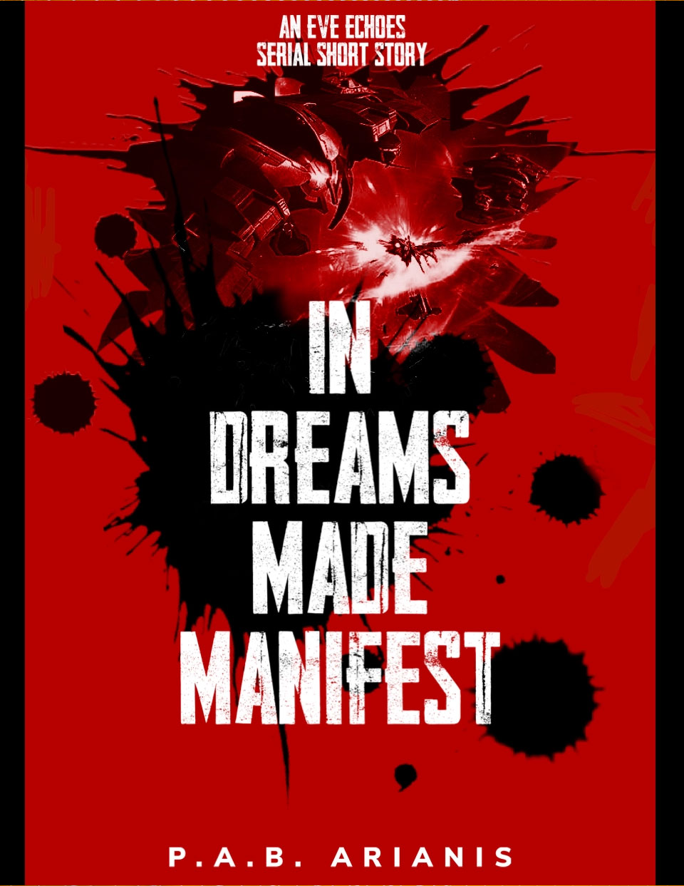

In Dreams Made Manifest
BOOK 4 - The story continues for Ahmarie and her upstart corporation. Can they expand on the foothold they've gained or will they succumb the attritions that claw at them?
Author: P.A.B.Arianis
Original post: https://eve-arianis.webnode.page/l/in-dreams-made-manifest/
Author’s Note: This is an EVE Echoes story written in serial short format. It is recommended that you pause between chapters... or don't, this is New Eden. Capsuleers make the rules anyway. This original work is based in the fictional world of New Eden as created by CCP and NetEase. All rights to concepts and property related to EVE Echoes or gameplay remain with their original owners.

1.
"I think that last Corax got away Shaddik."
"You're plus two towards Immensea, right?"
"Yeah, and I just caught him in local for only a second when I got here."
"No sense in chasing him then, come on back and help us loot some of these wrecks, you've got those big sexy cov. ops cargo holds."
"That's all I am to you, isn't it." Skylark chuckled mentally, flipped his cloaked Probe on its axis, and burned back for the gate. "Be there in a moment. Where to after that though, should we roam northward into Wicked?"
"Naw, I'm- check that, got a gray just popped into local!"
Skylark swore. He was the team's forward scout but he couldn't be in three places at once. That meant that he could only really see what hostiles might be coming from this direction, and not what might be coming up behind. The best he could do now was try to hurry through the system the fleet was currently in and get 'plus one' system out from them in the other direction to see if that lonely gray pilot was a scout for an even bigger fleet.
Skylark's Probe emerged from the jumpgate effects back in the same system as his mates. He could see the six Talwar class destroyers in his fleet moving away from the cluster of wrecks, pulling distance in an attempt to maximize their missile's range should another fleet land at this side of the gate.
"I'm going to skip the wrecks and jump through to the next system, see if there are more."
"Good plan, Sky."
Skylark leapt into warp for the other end of the system.
"Hah! It's just a regular slasher. He's landing on the gate here but I don't recognize his corp tags, no alliance." Skylark was Just landing at the gate when Shaddik spoke up again. "Good gods, he's burning to our wrecks instead of jumping through. We'll have none of that then." Skylark saw the primary target icon pop onto his heads up display and wondered if the poor gray even lasted the few seconds it took for the icon to fade away; likely not.
"Still want me to scout for more?"
"Naw, anyone stupid enough to try that isn't scouting for a fleet. Come on back and get these cruiser wrecks, looks like they had some ore from the Orcas they were preying on. Good Fights in local everyone." The last bit was directed at the whole of the fleet but Skylark tossed the 'gf' in local all the same before warping back to join his fleet-mates.
Cleaning up the three remaining wrecks, four now with the Slasher, took only a few moments. While he worked, local chatter remained quiet despite the high number of 'blues' in system.
"Sky, you can start free-burning home, we'll be right behind ya."
"Should we toss O-sevens in local too?"
"Yeah, not that they did anything to help. Might as well be neighborly though."
Shaddik didn't seem too impressed with the locals, but then 'diplo' had never really been Skylark's area. Shadik's either for that matter. At least the Orcas had stayed out of the way, so maybe that was worth a salute. He added his own 'o7' to the others, set his autopilot for home, and headed into warp.
Shaddik's after-action report pinged Ahmarie's communications implants as it landed into the corp FC-only channel. She set down the tablet she'd been reviewing and accessed the channel directly on her retinal implants. By a masterpiece of nanobiology, the text appeared as though floating in the air as it intermingled with the steam coming off her cup of coffee. She took a bite of toast as she read.
Nothing too surprising. The uptick in the amount of tonnage the hostiles from the south were using tracked with what she expected. They were a group by the moniker 'Mad Ping', and she'd been watching them closely over the past weeks. She was glad to have more intel on them anytime she could get it.
The involvement of some random 'gray' wasn't all that uncommon either. Her corp followed a strict 'not-blue-shoot-it' policy. Anything that didn't carry the blue tactical overlay marking of an ally or friendly entity was more likely than not hostile. Any hostile that lived too long in their space posed a risk. At the very least, they could gather important intel on size, forces, ships used, or even active times of the day. At most, they could be forward scouts for an invasion. Shaddik had been right to destroy it.
The one part of his report that did stick in her mind though was the final bit about Orca Industries complete silence during the operation. Shaddik had been coincidentally spot on when he'd labeled them as 'whales' during their earliest encounters. Much of her corp's leadership had hoped to see Orca Industries put up at least some sort of fight in the past few weeks. Instead, they'd simply complained louder and louder until finally sending a formal diplomatic envoy to initiate terms.
Harvin shifted and rolled over on the bed behind her, rousing her for a moment from her thoughts. She smiled, tossed him a fond look and shook her head. It was nice that he could sleep in half the day, she only wished she could. But, her mind was awake and ready to pick at problems. So here she was having breakfast in her underwear while the synthesized morning sunlight streamed in. It was nice to have a more relaxing start to the day, when she could. It helped her to tackle the bigger problems.
Orca Industries was no longer one of those bigger problems though. Their diplomat's success, it turned out, had more to do with her pilots' desire for a real fight than for any sort of amazing diplomacy skills. In the end, her corporation gained full access to hunt both pirate nests as well as hostile capsuleers in Orca territories. Once those terms were agreed on, there wasn't much reason left to 'pick on the weak'. That sort of thing didn't appeal much to her and her corpmates anyway.
The agreement did have one, rather expected consequence though. As predicted, word of the easy kills in OI space got out and was acting like a magnet to other nearby groups; corporations like Mad Ping. So, in a way, OI was getting them better fights. But would they be enough?
It was an odd thing to hope for an enemy to be stronger or more aggressive, but that was, in fact, what her corp needed most now. They'd successfully established themselves as the masters of their surrounding territory but they'd done so without more than a few minor skirmishes. New Eden was a place where one could never become too soft. Ahmarie needed to look for what was best for her Fleet Commanders and for the pilots they led. She needed skillful opponents for them to learn against. Skillful, but not so overwhelming that they could pose an existential threat to her corporation.
Mad Ping had potential. Her forward scouts had traveled south to recon Mad P's Territory and reported sizable industrial and pirate clearing, otherwise known as 'ratting', operations. Their pilots were certainly showing signs of aggression by traveling north to pick on OI. She smiled as she recollected that the caracal she'd earned her nickname off of had been from Mad P too. So, at least they were game for a fight.
But could they make those fights challenging? They were increasing the overall tonnage of their roaming fleets but still only sending four to five pilots. That sort of fleet didn't worry her too much as a danger to their ratting fleets. Five Caracals had the potential to do a lot of damage if they dropped in on one of the ratting fleets, yet with her corp typically ratting with no less than twelve frigates per sortie, all equipped with standard electronic warfare modules, she'd still put her money on her own pilots. Current e-war tech was limited, but more than sufficient to drain both the hostile's speed and capacitor until they were a motionless brick in space. That just left the question of whether there was enough action for pilots like Shaddik and his usual band of blood-soaked raiders. Based on this report though, it looked like the answer was 'yes, for now'. But how long would Mad P keep sending winnable fights? If left unchecked, could their industrial and ratting infrastructure eventually give them too much of an edge?
She exited out of the report, took another sip of her coffee, then set the cup down between her hands as she felt the warmth permeate her skin. She kept staring at the steam as it wound its way through the sunbeams without really looking at either. It was nice to let her mind drift, even for just the moment. To enjoy just being in the moment. Further movement from behind her brought her mind back into the room and to the needs of the day. Harvin would be rousing in a few moments.
She dashed off a note to Shaddik, confirming that he still intended to run his bomber team south into Mad P's territory for another commerce raid tomorrow. It would be good to keep their industry in check and the local response to Shaddik's raid should give her a better update on what Mad P was able to field. Ultimately, the raid should confirm that her pilots still held the tactical advantage in the region. With a plan in place, her mind turned to affairs much, much more local. She had some hunting to do right in this very room. A little warm-up before joining the day's ratting.
2.
"You sure it's all clear? That seems like a lot of hostiles in system for the gates to be clear." Emma's brand new Thorax gunship settled out of warp just outside the jump-lanes leading out of the Konora system.
Her scout simply sent a shrug emoji, followed by an image of two clear gates. The meaning was obvious; 'clear as far as he could tell'. She initiated the jump.
Space exploded around her even before her sensors could come online. A flash-rave of ships strobed out of warp. Before her ship could even drop gate-cloak and come about she registered no less than three Venture II class mining frigates. There was no question in her mind that these ones had been fitted with the curious new tackling improvements which were all the rage of late. Normally, Emma would have loved the twist of engineering irony that gave a mining frigate the best targeting speed in space, but right now, she wasn't feeling too excited about it. In short, Emma was fucked.
Fucked; but this crafty bitch was not going down without a fight.
Emma Drift required nothing less than the best, in herself, in her crew, and most of all in her ship. Her new Thorax was the definition of the best isk could buy on the current market. She intended to use it. Emma picked the nearest planet and started burning for it while immediately initiating lock on all three of the ventures just as the last wisps of her gate-cloak fell away. She knew there was no hope of gunning down every hostile ship with a warp disruption module, but maybe she could at least take out this group's key assets; their insta-lock Ventures. The loss of those would shut them down for a few hours, and that was about the sum total of damage she could hope to inflict on such a large group.
Railguns flashed out once, twice, and on the third volley they vaporized the first of the poor mining frigates. What ger guns lacked in range, they made up for twice over in damage output. She expected the commander of the hostile fleet to recognize that she'd just shown her hand and pull back the other ventures to a better distance, one within range of their disruption beams but past the optimal range of her guns. But they didn't, and down went a second Venture II. The third Venture pilot was starting to feel his mortality and Emma watched his orbit distance radically increase, even past the range of his disruption modules. Unfortunately, his insta-locking skills were less needed now anyway. Emma registered no less than five separate sources of warp disruption pinging her hull as she watched the last of her shield melt off.
Her dream of depriving the gate camp fleet of their Venture IIs drifted away and now she thought only of surviving as long as she could. She hit the first of her two armor plate activators and watched her armor nearly double. As much damage as possible... eat this, assholes! A Caracal Trainer got just a little too close and she tore into it, burning halfway through shields before it could pull enough range. But she wasn't running anymore. Emma flipped on her afterburner and shot out after him. Hyper-magnetized rounds perforated armor and hull deeper and deeper until only a wreck remained. Her first plate ran out and went into cool-down as she watched the last blips of temporary armor drop off and then start sinking into the red of damage.
Other hostiles we getting high on the adrenaline and she watched them descend upon her, no longer afraid to get in close. It was almost as if they saw her armor damage and swarmed to it like shoal-sharks to blood. Her mouth twisted into a wry grin as she popped the second armor plate and inwardly laughed. It was as though she'd activated a repulsor. Eager sharks suddenly cut engines and stalled, unsure what to do with this victim who suddenly had overfull armor again. She didn't let them choose. A Talwar disintegrated and then a very incompetent bomber took it up the exhaust and went boom before she watched her capacitor finally redline.
Her plates would be on cooldown for a while now and she didn't have the cap to use them anyway even if they weren't. Two plates had looked great on paper, but now she was going to find out the price for such a cap-heavy loadout. Her guns stopped firing as she looked for just one more target that might succumb before she finally bit the dust. She found it.
Only someone really stupid or really rich would bring a faction class ship to a melee like this. She intended to make sure they knew it too. She targeted the Succubus.
It took a few seconds for the lock timer to spin back up and let her fire so she used the time to maneuver for the best shots, she wasn't going to get many. She was flying by hand at this point, no longer trusting the computer to set her vectors. Burning at an angle, she brought herself right out and under her target, letting it get into a solid orbit on her, all the while letting her capacitor build. Her guns were silent and her armor all but gone. Just as he hit the apex of his orbit, she went on full approach and lit him up.
Onboard nav computers were a fun exploration in patterns and predictive analytics, for those who chose to study them. For example, when given the command to orbit something, they like to factor in the target's velocity and vector before calculating the proper responsive thrust. This is all fine and nice when you are far away and trying to approach your target. It lets you come in at a very nice elliptic that keeps your ship's transversal nice and high and thus deprives your target of anything kind to it's own targeting computers and turret tracking speeds.
But if you let that same nav comp get comfortable, and then sprint right at it?
Well...
The Succubus suddenly turned and sped directly away from Emma as it's onboard computer tried like hell to match the distance it's pilot had told it to use. Emma's rails had no less than three solid up-the-kilt rounds on a target that might as well have been strolling directly away from her. Her guns did not disappoint. Even after the fleeing frigate started finding transversal, her guns kept right on proving their worth.
The last few clicks of her Thorax's hull melted away as her pod ejected into space. What was left of the mangled cruiser blasted apart in a brilliant fair-well that was only minorly upstaged by the immediate aftershock of an explosively expanding Succubus right beside it.
The destruction of her pod that followed was a victory lap.
Ahmarie's life was becoming one of communications and reports. The destruction of Drift's new cruiser to the gatecamp wasn't in any way surprising but it only took a brief scan of it for her to decide that it was pertinent to her current meeting with Ponds.
"The N-RAEL camps are getting more organized."
"Oh? How so?"
"You see what Emma is saying in corp channels? About how they let her scout go through unmolested only to drop a fleet right on top of her head.. Er, Thorax?"
"Wait, she already lost that, didn't she spend the whole morning putting that new toy together?"
"Corelum Cs, rigs, an' all."
"Oof." Ponds frowned. "That sucks."
"Just think how many miners she's about to take it out on too."
"That's right, she was planning to go with the bombers today, right.?"
Ahmarie nodded. "Yep.. And I was hoping to get in on it too, this time."
"Well good luck to ya." Ponds paused a moment, appearing to review a few notes on her overview. "Actually, I think that was all for today, go, get some kills in. I'll stay and keep an eye on what's happening up north. Actually, I might have a contact up that way who I can get more intel from."
"Wait' isn't that the guy who kicked your asses on that roam?" Ahmarie grinned, enjoying every chance to needle her counterpart.
"Excuse me!" Pods wasn't about to miss his chance in their little game either. "Not so much, thank you. We were testing out the new Talwar doctrine and I just happened to jump the gate a little early."
"Right into their fleet, you mean."
"Right into their fleet." Ponds shorted a little and took a sip to hide his own amusement. "Anyway, they only took out one of us before we went roaming in another direction."
"You chicken-shit bailed."
"We strategically repositioned, it's not our fault they decided not to try to jump their fleet into our perfectly good trap."
"Uh Huh..." It was Ahmarie's turn to take a drink.
"Anyway, we cleaned his clock on the next encounter, so there. We win."
"I don't know, sounds like you're getting cocky."
"Ha!" Ponds skewered Ahmarie with a look of abject hypocrisy. "Now who's full of shit?"
"Hey, what I do with my cocky is none of your business."
"Besides," Ponds' grin said all that was needed in response. " I thought you were just leaving."
Ahmarie checked the time and realized she was now more than just a little late. With no words sufficient enough to express her retort she simply stuck her tongue out at him, grabbed her jacket, and walked out of the café.
She could still hear Ponds snickering as the door closed behind her.
The station had been built to handle literally hundreds of capsuleers coming and going and that meant having sufficient infrastructure to support them all. While Ahmarie's corp had no way of claiming, let alone enforcing, ownership over the Serpentis station, their territorial stance and recent activity had managed to clear all but a few remaining hideaways from inhabiting the system with them. That translated to a hell of a lot of empty capsuleer facilities. In theory, this meant that Ahmarie's corp could have easily spread out and given each of their members access to entire pod hangers each. However, that just wasn't their culture.
Instead, her corp kept themselves limited to just a few communal pod hangers. It meant having to share some of the more intimate or unpleasant moments with her mates, but it was a hell of a lot easier to secure and it usually meant that her pilots were already planning and strategizing in a communal space even before they got into their pods.
The hanger was empty now as Ahmarie stepped up to her chosen locker and started to strip down. Empty pods were poised in the gantries or settled into the cradles. While most of her corp mates were already out and flying, these sat waiting to be used. She did notice, however, that one of the pods waiting in its cradle was already active and warming up. With nobody else getting undressed, she wondered for a moment as to who'd just been podded. That was until the sound of sliding doors brought her attention over towards the corridor leading directly to the cloning facilities.
Emma's skin was still slick with the residue of her most recent clone's vat as she walked into the hanger. Neither of them said anything and Emma didn't even glance at Ahmarie, but the look on her face was pure murder as she stepped up to her new pod and practically punched her palm onto the bioscan. Ahmarie thought to say something, really anything, but she just couldn't find the words. Mucous residue continued to drip to the decking where it slipped through the cold tritanium grates. Emma lifted her hand from the pad and let it fall to her side as the new pod before her split along its seams and began to open. In silence, Ahmarie began her own pre-integration process but kept her eyes on her mate. It would take only a few seconds for either of their pods to open but Ahmarie couldn't help but fill that time with mental questions as to how Drift must be feeling.
Having your ship shot out from under you and your pod and clone turned to space gas was an everyday sort of thing in this life. But there was always a price that came with losing one's most expensive ship. 'Never fly what you can't lose' was the law of New Eden, sure... but how was Emma taking the loss?
The pods' hulls completed their opening as each large section came to rest, hovering out and over the lower lip like wicked green and yellow orchids of death. Emma turned her head just a little to lock eyes with Ahmarie. In those eyes Ahmarie didn't see the frustrated and woeful spirit she feared, but instead, a burning reaper of souls. For just a moment, the most blood-curdling cutthroat grin spread across Emma's face before she turned and stepped backwards onto the lower lip of her pod. The umbilicals descended like snakes from their storage within the top of the pod, stabbing in quick succession into Emma's back as she gasped and arched against the contact. Then her eyes were closing and the pods hull pieces started to descend.
Ahmarie shook herself and finally broke off her stare. Turning, she also stepped backwards into her pod and prepared for the impact of the umbilicals. The icy chill as integration shocked her nervous system was often compared to jumping naked into a frozen lake. She would never have known if this was true having been in space almost her entire life, but Ahmarie had no reason to believe otherwise.
An entire world of sensations tingled through her consciousness as her mind joined with the pod's systems. Viscous fluid started to fill the chamber as she settled into the limitless potential that coursed through the being that was a capsuleer in her pod. Not just human, not just machine, but both at once. She could become anything. It was an amazing feeling as her mind stretched out through the pods systems and watched as Emma's pod beside her was released from the cradle into the transport beam that would maneuver it first into Emma's personal hanger and then into her Nemesis bomber. The gantries deposited a fresh pod into the cradle as Ahmarie mentally prepared for her own drop.
Her communicator pinged. Now what? Fuck! It was the Orca Industries chief diplomat.
Ahmarie scanned through the wall of text he'd sent her, desperate to be able to just write the communication off as an 'FYI'. To save time, she initiated her own drop and transport, moving her a few steps closer to launch. At least she could spend the time getting into her own Nemisis.
::Hello, I wish to inform you... ...fleet actions that occurred on... ...were in violation of...::
Her pod slipped smoothly into the bomber as she felt all of its strength and lethality course through her. Had she had a desk, she would have bashed her head upon it though. This was no 'FYI', it was a request for formal compensation and notice of 'blue on blue' infractions. She would have to read it, in full, and respond. She considered for just a moment putting it off. She could join the others and still deal with this later maybe? She read the file more thoroughly to be sure.
OI was claiming that the gray Slasher Shaddik had obliterated was yet another brand new ally of theirs and that they'd promised them 'protection' within their space. Never mind the fact that OI's 'protection' amounted to nothing more than diplomatic coverage. They had the gall to offer other corps protection when it was her own corp's pilots and ships that were the ones fighting off predators. Even if it was exactly the role that her corp wanted, it was the fact that OI was essentially dealing it out to just about any stranded puppy they met. But to demand compensation from the ones doing the work just because OI hadn't had the wherewithal to even tell her corp about this new pet corp? Now she was even more pissed than Emma. Well, maybe 'just as' pissed.
All over a fucking tiny Slasher. Ahmarie could afford that out of her personal petty change. Hell, her corp practically gave away Slasher IIs. Fuck it. She didn't even bother with a formal response. She pulled up her accounts and contracted the couple-hundred thousand for the toy frigate right then and there. Finally she could go shoot something.
Her communicator pinged again, but this time with a visual call request. It was a channel with both the diplomat and the fucking leader of OI.
Ahmarie started at the request for a solid three seconds, pulled up her overview map and charted a jump course that would take her right into the heart of OI mining territory. They want an incident worth arguing over, I'll fucking give em one. At least I can make the compensation worth the call.
She let her communicator ping a sixth time before closing the map, sending Shaddik a quick heads up that she wouldn't make it, then accepting the call. She tried very, very hard not to just scream at the idiots on the other end of the channel.
3.
Mren leaned back in his seat and waited for the meeting to start. Such meetings were a new thing for the Admiralty and he considered the subtle changes that they represented for the whole of the Republic. Their alliance was growing rapidly enough to warrant getting all of the military leadership on the same page. That certainly seemed like a good thing, but why should some of the best strategic minds in eastern New Eden be punished for their success with what Mren feared was about to be all manner of boredom?
He didn't expect much of an answer to his morose humor.
The simple truth was that their small alliance had become a larger alliance and where one Admiral and a few Fleet Commanders might have sufficed to serve the former, it was going to take a lot more coordination to manage the later.
"Admiral Ashant" He nodded his greeting to one of the newest additions to the team and got a cordial nod in reply.
With the rapid growth, work was barely delegated and on more than a few occasions, intelligence had gone mishandled. Adding to the pile, where once a few Fleet Commanders had been able to easily coordinate their operations and times, now the number of potential FCs had nearly doubled and their overlapping operations were corp-siloed, poorly communicated, and often resulted in far more expensive losses than the objectives achieved. That last part was of particular import to Mren's new role.
Commander Vrake's holographic image appeared in one of the seats and Mren didn't feel at all amused by the very smug grin he wore. This session was going to be interminable. Admiral Jev Sassnin's holo finally appeared to fill the last vacant seat, thus signaling the start of the meeting.
Admiral Ashant opened the discussion. "Welcome to the first of what I imagine will become a weekly occurrence. Let's try to keep these as brief as we can, I know many of you are quite busy or even in transit to target systems as we speak." He paused to take in the chorus of nods and agreement around the room. "With that in mind, I'd like to begin with a report from Vrake's unit."
Ashant sat back in his seat, yielding the floor.
"Excellent, thank you Max." Vrake's holo stood up, and Mren had to strain not to roll his eyes further as Vrake turned even this room into a stage. Projectors on either side of him as well as the screens in front of each member of the meeting filled with a slideshow of kill reports as Vrake began. "As you can see, my fleets are starting to show amazing success. Our new strategy is working beyond even my expectations, and I think I speak for all of us when I say that the spoils are well beyond anything we've seen in previous fleets."
Mren couldn't take any fault with Vrake's assessment. The new strategy of holding the fleet in reserve and hidden off the gates had a certain genius to it. Most runners carrying anything of value religiously sent scouts ahead of their convoys now. The adoption of scouting had greatly reduced even the Republic's losses as well.
The new strategy took advantage of the false sense of security a scout gave. By holding the fleet in reserve, Vrake's gate camp operations allowed the scouts to pass through the system unscathed, only to drop the might of more than fifteen ships right on top the real prize following behind the scout. Having already scouted the system, prize after prize was blundering fat and happy right into the ambush.
"I am further happy to report that members from almost every corporation in the Alliance, even the two that just joined, are coming to participate in the operations. Our coordination is increasing by the day and a few individuals are even showing signs of becoming FC materials within our fleet."
This was rather good news and even Mren had to admit to the benefits of increased fleet coordination. Vrake was now pulling up dossiers on a few of the young pilots who he clearly thought ripe to become his favored lieutenants. While growing the FC core was certainly important, that was more of Jev's area. Admrial Ashant was paying close attention to the potentials as well but Mren's mind began to review the areas of Vrake's strategy that he hadn't yet spoken on.
Taken as a whole, the strategy was working in many respects. His fleet was raking in the spoils and making a profound statement about who to fear most in the region. Both of those were good things. Perhaps it was simply due to the division which Mren oversaw, but he couldn't help but see a few glaring holes in the Commander's strategy as well.
To start, all of those spoils were being fed back into a pool that directly funded Vrake's fleet. It was expected that this would further encourage participation along the lines that the more pilots participated in Vrake's operations, the more access to bigger and better ships they would have. In principle it made a lot of sense. But in reality Mren suspected that the majority of the spoils would be funneled more directly to Vrake and his lieutenants. Further complicating this was that Vrake's friendship with Admiral Ashant gave him an inside track on regional strategy. This let Vrake choose where to apply his fleet, selecting some of the more lucrative or exciting opportunities available, and leaving other key defense systems to be patrolled by other fleets and other commanders. Most of whom lacked the charisma and notariety of this particular commander.
Mechanically, that could lead to a resource imbalance in time, something Mren would have to keep an eye on. Vrake's success in getting lucrative kills was also attracting more people to join his fleets. Overall that was a good thing, but what happened when those same pilots had to post up with a far less lucrative operation? It took a certain level of temerity and aggressive swagger for a combat pilot to want to commit themselves over and over again against other capsuleers. It was that mix of personal motivation which would eventually lead to the safety of the Republic's space and while Vrake's fleets may be attracting more capsuleers to try that lifestyle, how many would find it to their liking when the target was more of a challenge and victory less assured? Even more, would their commanders have the skills to do so without throwing away their own ships in the fights. There was a fine line between aggressively competent and foolhardy. If only foolhardy commanders with large personal reserves defined 'success', what could it mean for those commanders who understood that sometimes it was better to let a fight go on an unimportant objective in favor of having the pilots and ships needed for a less shiny but infinitely more important target later?
The part that was bothering him most though had more to do with just how little actual defensive protection Vrake's fleets were affording the Republic as a whole. Vrake's most recent focus for operations was a trio of systems which formed a triangle between Alliance territory, higher security space, and most of southeast Nullsec. The sheer volume of goods that passed through those three systems was daunting, but it also meant that those systems were a prime target for other, more southerly based alliances. The final piece of the puzzle though was that those systems represented Mren's own alliance's primary route into highsec as well.
As Vrake's report went on, nearing it's completion, Mren used his implants to pull up the figures that Vrake clearly had no intention of covering in the briefing. While his fleet was certainly doing it's share of damage to rival alliance shipping lines, the new strategy wasn't making much of an impact yet on protecting their own shipping.
The triangle represented a fickle prize. Anyone who kept their fleets on one of the three gates within N-RAEL risked allowing an enemy raiding fleet to slip through the other two systems, 28-QWU and UD-AOK, unchallenged. But placing their fleet in UD-AOK, while more territorially defensive, meant allowing the enemy to place themselves in N-RAEL where their shipping had unfettered access to highsec and giving them the ability to still prey on the Republic's shipping. Unless a commander had overwhelming force, it was near impossible to hold all objectives. Vrake's strategy did have one advantage in this though. If a rival alliance brought a sufficiently large enough force to push his fleet off the objective, the new tactics gave them far more flexibility to avoid the fight.
But the loss reports the Mren was looking at told a different tale. Since adopting the new strategy, Vrake was losing more ships, not less. In some cases, he'd been baited into the fight, but in others, he'd just been caught out of position. Either way, Mren wanted so very hard to believe that these were just growing pains of a new strategy... but if so, why hide them? Why keep these losses from the discussion? Mren found it hard to trust a commander who covered up failures rather than putting them forward for all to learn from. It didn't help that these particular failures also represented the loss of quite a bit of naval hardware as well.
His com pinged, flashing an image of his wife over his retinal implants. Mren glanced again at Vrake and Sassnin who were launching into an overly winded iteration on just how much combat time their pilots were getting in the fleets and decided he could afford that sidebar conversation. He accepted the communication request without even a thought to the mechanics that let him carry on entire conversations without anyone in the room knowing.
"I'm not interrupting anything am I?" She knew full well that he wouldn't have taken the com if she was.
"Nothing important." His visual in her implants smiled conspiratorially. "Vrake's on about his new fleet tactics and now Sassnin's jumped in so I've got a few. To what do I owe the pleasure?"
"And why can't I just want to check in?"
"Because I know you too well..." He smiled even more at her. "For example, I know that you've only called because you are trying to get a break from your own work."
"And I know that you, the accommodating partner that you are, will be more than happy to give me that break."
"Maybe this time..."
"So kind you are." She smiled back then let out a long breath, the image of her in his mind rubbed the stress from her face. "Five new applicant corps in this week's batch."
"Any decent combat pilot groups in there?"
She shrugged. "A few, but mostly corps focused on industry or hunting Angel and Gurista pirates. Lucrative, to be sure; should boost the Republic's ability to put out ships. I know you worry about that."
"I do, but at the moment I'm starting to worry just as much about who is flying them." Out of her ability to see, he tossed another glance around the table to see the discussion of how to encourage more pilots into defensive fleets continued. "But all that only really matters if this new Admiralty can get organized."
"I thought more people were getting into Vrake's gate camps."
"Nothing empowers like 'success'..." he thought he'd said this last bit sotto voce but she responded.
"What?"
"Oh, nothing. But until we get some more aggressive minded or seasoned combat corps, we'll likely be at the whims of 'success' for a while."
"Well, hang in there, you know I'm looking for them."
"I very much do, love."
The conversation in the room was finally winding down and Admiral Sussnin glanced his way. "Looks like we're moving on to talk of ship replacement strategy, I'm about to be up. A little light mining when I get home?"
"You just name the belt."
"You're on."
Tan disconnected and Mren pulled up his figures to replace her image. At least he had good news to share.
4.
Emma finished the last jump down the pipe and rejoined the fleet comms. Reviewing the local channels, she noted only six other capsuleers, all showing the deep purple coloration of fleet members.
"Where do you want me?" The questions came out just a bit rougher than she'd meant it to, but she knew Shaddik well enough to know he'd take no ill intent by it, besides, he knew the mood she was in today.
"Hey there Emma, I'm just finishing up the tactical brief. When we get to the target system, I'll have you take mid site and work down; you know the drill."
"Got it." Emma mentally settled back, only vaguely hearing the rest of the briefing. She glanced at the fleet window in her HUD and noted at least a few new names, likely pilots who'd either just joined the corp or only just finished securing their own doctrine bomber.
"...so, as I was saying, make sure you pay attention to your assigned warp-in distances when we are flying as a group. These latest prototype cloaks are bitchy as fuck, if you get two of 'em too close together, one always seems to just fail and decloak. I'd rather we miss a kill than give away our position too early, got it?" There was a chorus of acknowledgement from the fleet members.
Emma pulled up the star charts again and glanced at where they were. It was a small dead-end system along a rather direct pipeline that connected the far southeastern quadrant of New Eden to the easterly portions where their corp had claimed territory. Emma held no actual rank in their little military but she had been functioning more as an 'Officer At Large', helping out where she could. Because of that, she was placed highly enough to know the true target this little raid was after; unlike most of her fleet members. She also knew that the corporation who called their target system home weren't exactly slouches. This was going to be a nice little test of Shaddik's doctrine.
"Any questions?" There were none. "Alright then, let's have some fun!"
Six Nemiss stealth bombers slipped into the target system. Almost as one, they dropped their gate-cloak, popped off a single cycle of their afterburners, then melted away into empty space. Within seconds, each one was racing for their assigned target mining belt. Nominally, this operation was a raid on a potential enemy's industrial base. To the Admiralty, Officers and Shaddik, it was much, much more. It was validation.
Emma dropped out of warp at the fourth belt just long enough to note no activity, then immediately amended her orders and slipped back into warp. She was now headed for a spot about 90km off the local station docking bays. With six fleet members and only eight belts, there was already someone else assigned to the fifth belt and Emma saw no need to 'double up'. Better to get eyes on any activity at the station. Shaddik's entire operational plan rested on discovering what the enemy would do. If they were really on their game, they'd already be recalling their miners and reshipping to defensive ships. But this was the first time Emma's corp had ever targeted this system and so far there'd been no activity in the local comms channels. That didn't mean the alarm hadn't been raised in the corp channels though and Emma decided that knowing the answer to that question was far more important anyway.
"I've got a Venture in Belt three."
"Two Retrievers in Belt seven."
Emma was still in warp as the first targets were called in. Shaddik was already on it. "Ignore the Venture, are the Retrievers moving at all?"
"Negative"
"I've got one Retriever in Belt eight too, but he's pretty far into the belt."
"Got it, I want everyone else to warp to planet four at their range increment plus 50, watch those cloak overlaps. Evvet, see if you can get within 7k of one of those retrievers without going near any rocks. Skylark, get me eyes on the station please."
Emma landed out of warp just in time to see at least one Retriever lining up to dock. Had they seen the local spike or were they just coming back with a full load? There was no way of knowing. She mentally shrugged and decided to leave the rest of the check to Sky. Realigning, she laid in for planet four and went to rejoin the fleet.
A few seconds later Shaddik used his fleet override to realign everyone to belt seven. "Ok, I want everyone to get ready to warp to Evvet at their increment. Ready? Go!"
Emma's blood started to burn as she threw her Nemesis into warp. It was a short jump but Shaddik had placed it perfectly and somewhere in the back of her mind Emma marveld as she realized that Shaddik must have been shadowing the newby Evvet initially. It was the only way he could have known the exact vector. That meant that he'd given the initial placement role to a complete newbie knowingly. And, amazingly, it had worked. Not one of them had decloaked and now they were all sitting within 20km of two Retrievers who apparently had no idea they were about to be the center of a feeding frenzy.
Shaddik started rolling out orders. "I want points on targets immediately on my mark, top team, take the left retriever, bottom team take right." Emma noted that she was the third in the fleet list; top then. "Once you have point, all DPS goes on the left one. Everyone start approaching now, decloak in three, two, one! Get those points up now!"
Six Nemesis apperated out of empty space, their electronic claws reaching out to dig into each retriever's hull. Emma watched her cloaking timer tick down as if she could will the residual interference from her cloak to clear faster. Fifteen kilometers ahead of her the left Retriever still sat fat and happy in space, oblivious to the sharks that now openly swam toward her. The final ticks of interference dropped off and her firing computer gained lock just as she passed the 10km mark. She initiated the fire command, spewing a deadly spread of ship killers from their launchers.
Thirty-six oversized missiles spat like fury out of their tubes, racing for one industrial barge. Though it was hardened against such assault, the Retriever never really had a chance. By the time the first round of missiles was landing a second salvo was already queued up and launching. "Get ready to switch to the next..." Shaddik's orders were rather superfluous at this point but maybe Emma was just too in the zone, she saw the remaining hull on the first target, judged that the second salvo would be enough, and was already anticipating the second target. The small fleet pulled an incredibly small transversal about the first miner even as it blossomed into plasma. Emma's third salvo was already seconds ahead of everyone else's as it ravaged against the second miner who was only just now trying to realign. A little late there mate... Emma grinned with malice.
Finishing off the second barge went just about as quickly as the first and then all six of the bombers were burning hard out of the belt. "Ok everyone, cloak up!" Emma did. In the next moment, Shaddik had them realigning to yet a new planet. Smart; that. If any defensive forces had seen them aligning out before cloaking, now they'd misjudge where the fleet was going. "Everyone warp at your increment plus thirty to planet eight. Sky, what's happening at the station?"
"Not much yet, only... wait, I see one, make that three Caracals coming out. Looks like they are rallying."
The fleet came out of warp, all of them still safely stealthed. "Anything else, Sky?"
"Caracals just took off for belt seven. I'm seeing two Condors, another Caracal, and looks like a Retriever launching now."
"Think they might try to bait us?"
"Not sure, the barge is warping off to belt eight but the others are still here." There was a pause. "Others are now aligning to belt eight too, but aren't warping yet.
"Tricky buggers." Emma waited and tried to be patient as Shaddik thought. "Emma, can you warp to belt eight and get into scram range while cloaked?"
"Yeah...?" The response came out as a question but slowly Shaddik's plan dawned on her. She grinned. "I can do that." She found herself a safe range and slipped into warp back to the hunt.
As Emma exited the warp tunnel, she found the Retriever trudging slowly from the warp-in beacon towards the belt and her pulse ratcheted up even further. She pushed her acceleration to the maximum possible under cloak and started stalking their target.
Shaddik's planned attack would normally mean that Emma would be the last to actually put damage out on this target. Being the hunter had its own fun, and on any other day, she would have been more than happy to play the role. But on this day? Her blood was raging. She calculated exactly how much time it was going to take the fleet to warp in and got ready to punch her decloak. "I'm in position."
Shaddik didn't waste a moment. "Everyone drop cloak now." Part of Emma's mind imagined the other five bombers lept into warp themselves but her focus was on the countdown. "We'll be coming out hot. I want everyone on that Retriver, immediately. After three salvoes, warp away to planet six and get cloaked back up as quickly as you can, then everyone meet back at planet eight cloaked. Got it?" Emma's countdown hit zero and she initiated decloak.
There was a chorus of 'rogers' and 'yeps', then they were all landing on grid just as Emma's interference timer began. Because the rest of the fleet had decloaked in warp, they only had warp cooldowns to wait for. It meant that they might get a few more seconds of damage into their target, but Emma knew her ship and herself better. Her hits were going to count for more, if she'd been right in the timing. It was a silly thing to care about. The target was all but guaranteed to go 'boom', but she was out for blood and fully intended to get top damage anyway; just to make a point. Even if that point was only to herself.
"Defence Fleet is going into warp for the belt!" Skylark's warning was tense, but not alarmist.
This Retriever was clearly better armored and the first two volleys took it only halfway into armor. As instructed, most of the fleet peeled off and jumped into warp even as the Mad P cruisers started decelerating onto grid. Emma and Shaddik remained. There was something unspoken, something risky and visceral. Neither would deny it from the other. Even as a Condor and two Caracals burned hard in on them, both pilots threw on their afterburners and started whipping about the maimed barge at velocities that challenged their compensators. They knew their time was limited, but neither was willing to let it go. The Retriever's armor and hull ticked further down under the onslaught.
Two separate warp scramblers flashed on Emma's overview but curiously no webs. Maybe not so bad then. Missiles started blasting against her shields and she watched Shaddik taking hits of his own. They weren't focusing their fire. Strike two against the defense. It took only moments more for the barge to finally convert into plasma but Emma and Shaddik were both already edging into their own armor. Time to go.
They both broke for different destinations and started pulling away from the defensive cruisers as quickly as they could. The Caracals wouldn't be able to keep up, but the single condor pursuing Emma was another matter. She slipped out of reach of one scrambler and now it was time for the new doctrine to really shine. "Latter!" There was no way for her pursuer to hear her anyway, but that didn't much matter. Emma triggered her warp core stabilizers and shed the last remaining scram like it was nothing. Then she was in warp and already cloaking back up.
The whole of the engagement hadn't taken more than a few minutes, but even as she flew silently to planet two, Emma could hear that things were getting tricky for the rest of the fleet. Most had made it to the planet eight, but without Shaddik there yet, they were basically just waiting.
"Shit! I'm decloakin-" The expletive from Evvet cut off abruptly.
"I think Evvet's having a connection issues, he's not showing as with the fleet"
"I'm just landing, I'll go find him, everyone else stay put." Shaddik's calm tenor clipped through the panic.
Emma couldn't do much to help yet, but she could get back to the rest of the fleet and be ready in case Shaddik got stuck. Emma wasn't really a fan of FCing, but she'd do what she could and she was the most experienced one here next to Shaddik.
"Evvet's got a condor on him, Everyone warp to me and we'll clear it off. Evvet, you reconnected yet?" There was no response. For as powerful as capsuleer tech was, the occasional glitches in the integration network were absolutely deadly.
Emma came out of warp at planet eight even as the rest of the fleet was about to enter into it. She flipped as quickly on her axis as she could and jumped back into warp only a few seconds behind the rest.
"-back? Hey, can you all hear me? Oh shit! I'm at half armor!"
"Try your warp core stabilizer."
"Oh yeah!" There was a pause. "Shit, he's still got me!"
"He must have a disruptor on that one. We're coming to get you, just start getting into an orbit on him and try to rep up what you can." Emma and the fleet were just coming out of warp. "The rest of the defense fleet should be here any moment, everyone burn this Condor then get back cloaked up again and back into warp to a planet at range."
Optimally, a Condor was an excellent counter versus a bomber. There was really no reason that Evvet should have survived, but this Condor must not have been well fit, or perhaps the pilot just wasn't used to combat against other experienced pilots. In either case, Evvet's Nemesis hit half-hull just before the condor exploded into many tiny bits.
"Ok everyone, we're getting pretty hot here, I think it's time to slip out. Sky, can you get my eyes on the exit again?"
"On it."
"Fleet, form up at increments plus 60 at planet three." Emma keyed in the bounce and popped back into warp.
Once the fleet was cloaked up and all together just off planet three everything seemed to slow way down. There were no further commands from Shaddik but Emma just settled in. There was a time to be patient.
Skylark's report finally came in. "I've got two Corax, a Condor, and five Caracals waiting just in the next system." There was another long pause.
"Ok, I've got a Retriever and a Caracal back in belt eight." It took Emma just a moment to realize that Shaddik must not have stayed with the fleet. "Here is how I want to play this. We need to get some of the tacklers off the exit gate. I want everyone to stay cloaked and align to belt eight now." Emma responded with the heading change. "I want you all to drop cloak as soon as you go into warp again, but this time I want everyone on the Caracal, let the retriever go. Make sure you are keeping a really tight orbit with your ABs on. Ok, Everyone; warp!
Emma smiled and punched it back into warp. This was going to be close.
"As soon as this Caracal goes down, I want everyone to stay uncloaked and warp for the gate. As soon as you land, jump through and hold cloak!"
"One Corax and most of the Caracals are coming back through the gate." Sky's words rang in the coms even as Emma landed back on grid to find Shaddik already decloaked and starting to engage the Caracal there. The Retriever was turning to run.
"Get him folks!"
Missiles flew with incredible fury and the cruiser withered under the onslaught having never expected to be the initial target. Its pilot had enough awareness to try to get at least some damage out. But this ship had clearly only ever meant to be a visual deturnant, and not a true fighter. It melted like vapor.
"To the Gate everyone! Remember to hold cloak on the other side. Go, go!"
First a couple, and then all of them were in warp again, sprinting for the way home. Emma noticed at least one of the defense fleet, what looked to have been a destroyer, landing on grid at belt eight just before slipping into warp herself. Hopefully the ploy had worked.
There were at least two Caracals and one Condor on gate as they all landed. Each of them must have quickly jumped the gate because even as Emma's fleet started jumping through to the next system, the Mad P ships disappeared as well.
The jump tunnel ended and then there was silence. Each member of Shaddik's fleet held cloak and he quickly assessed the trap that he'd hoped to have at least reduced. The Corax remained, as well as at least one of the Caracals. But the other Condor did too. That meant they were about to have two Condors. Not good. "Ok, everyone remember the afterburner trick. Make sure you pop that cloak quick too." It was risky. The maneuver he had in mind wasn't something the newer members of the fleet had practiced. "On my mark, starburst and head for the rally system, I've sent the coordinates in your overviews. Ready, Mark!"
Shaddik dropped his cloak even before everyone else by a solid two seconds. If he was lucky, Bad P would try to target him first. But that didn't happen. Instead, he watched as his newest pilot burst from cloak then broke off at way too slow a vector, burning right for where the Condor was already orbiting. It was painfully clear that Evvet had forgotten to pulse his afterburner and Shaddik could see the next several moves already playing out. There was no way to rescue his mate this time. One of the Coraxs started targeting him and he knew he was out of time. Shaddik activated his own cloak and tried to think of something, anything he or the fleet could do.
"I'm scrammed! What should I do!?" At least there was only a little panic in Evvet's voice this time.
Shaddik let out a mental sigh. There was nothing else to do. "Stay Calm. Try to use your AB to pull range from the tackle if you can." He saw a total of nine Caracals now swarming to catch up with the Condor and lone tackled Nemesis.
"I don't think I can get away."
Shaddik knew that against those forces, his entire fleet just didn't have any chance. "No sweat Evvet, looks like you'll get the easy way home today. Just do as much damage to that Condor as you can, right?"
"Um, ok."
Shaddik mentally nodded, he was taking it well. "I'll help you get a replacement bomber by the end of the week, how's that sound?"
"Yeah, thanks."
"Now give 'em hell." Shaddik and the rest of the fleet were already through the next two gates and it looked like clear jumps all the way home.
"Hey, I've got him into armor! But that's going to be about it.... Yeah, guess I'll see you all back at base."
"See you soon, Mate." He smiled.
All in all, they'd got just about everything he'd been tasked with and several kills beyond that. He'd have to review the killmails later, but it was a good chance that they'd come out on top even with the loss of one bomber. Well, maybe there was something he could even do about that. Shaddik registered the message from Evvet confirming his pod death, then made a note to follow-up with Ahmarie later. Then he turned his attention to the rally system and the rest of the trip home. It'd been a good hunt.
5.
"Yes? How can I help today?" Ahmarie's face was firmly planted into her open hands such that only her mouth was uncovered. It was good that she'd only used the voice channel as it would have been most impolitic of her to let the Orca diplo see her current posture. It was hard enough keeping her voice calm, seeing her as well would most certainly have given him an indication of just how much she felt he was wasting her time.
"Thank you for meeting with me."
"Sure thing." She hoped it sounded genuine.
Either he hadn't noticed her exasperation, or he pretended not to. "We need you to stop ratting in our territory."
"Wait, you need what now?" That was a massive change in their agreement and Ahmarie's head spun with the implications for the crunch it would put in their corporations primary income.
"Your fleets were recently ratting in our space and we will need that to stop, at least in the two primary Orca systems."
Ahmarie fought even harder to keep the frustration out of her voice, she almost succeeded. "And just what brought about this sudden change in our agreement?" Orcas were nothing if not sticklers for their blessed 'agreements', it was about the only redeeming characteristic she saw in their entire policy agenda. A sudden change like this, especially without notice, honestly surprised her.
"Oh, we've agreed to share our systems with a new corporation and they actually want to use the pirate bases to train their own pilots, it's only two systems, that shouldn't be that big of a problem for you, right?"
Only on principle... She was careful to keep her snide remarks unvocalized. "I'll have to speak with the other officers, but that may be... acceptable." In truth, the two systems mentioned barely ever produced pirate gatherings remotely worth her corp's time. It was far better than losing access to all of the systems claimed by Orca's now sprawling 'Association". It couldn't even charitably be called an alliance. No, this wasn't as bad as he'd first made it sound but, she wasn't about to mention that either. "Was there anything else?"
"Actually, yeah. We've noticed that our miners are getting attacked a lot during our prime hours of operation."
"That's like..." Ahmarie checked her conversions. "0200 Universal Time, right?"
"Exactly! As I was saying, we'd really appreciate it if you could get some defensive coverage from your fleets at those times, it's really starting to put a dent in our industry."
He should have said that it was putting a dent in their 'illustrious' CEO's pockets instead. As their diplomatic exchanges progressed, Ahmarie, as well as most of her fellow officers, had been disgusted to learn that the Orca CEO required all of his corp members to pay a monthly tithe of minerals from their earnings just to be allowed to stay in the corp. They didn't pay that to the corp but rather to the corp leader; to just one person. It was the sort of sycophantic bullshit that went against everything her corp stood for and swallowing that hadn't sat too well with any of her mates who knew the truth. However, that wasn't the part of his request that made her want to laugh him off the call.
"That might be a difficult time for us to accommodate." It would be virtually impossible to accommodate. All but two of her pilots were usually asleep during those hours, but she didn't really want to give such strategic information to someone who didn't know the first thing about operational security. "I'll bring it up with our Fleet Commanders though."
"Thank you, we very much appreciate your ongoing partnership in the region's prosperity."
She could only nod at such flagrant nonsense and she damn near celebrated as the Orca Diplo ended the call. Ahmarie planted her forehead against the desk hard enough to leave a bruise.
Her head wasn't down more than five seconds before her com chimed once more. "Now what!?"
Her grimace softened considerably as she lifted her head to see Shaddik's image heralding the comms request. "Please tell me you have happy news."
"Shit... um, I can come back later..." His words may have implied something negative, but his demeanor was teasing and he had that damn mischievous smile planted firmly on his face. He wanted something, but that look said it might be something she wanted to give him anyway."
"No, get it out. Can't be any worse than my last call."
"SRP for Doctine Bombers?"
She snorted. "Oh, you're serious." Ship Replacement Programs were traditionally built around standard hulls and buildouts which a corp could easily produce and give away to their members. Such programs were essential to ensure members felt safe bringing the right ships to coordinated operations. Without them, FCs had to make do with a cacophony of whatever ship each member felt comfortable losing. Members usually weren't comfortable losing anything more valuable than the cheapest frigate. Usually. Doctrine Bombers were hardly the cheapest frigate.
"I think we might need to if we want to have the kind of consistent raiding pressure you and Ponds are asking for."
He wasn't wrong. While he made his pitch, Ahmarie pulled up the corp income figures from their regular ratting. Harvin's ratting teams were hauling it in and she couldn't help but feel a sense of pride and love for her chosen mate. The corp had gotten a standard cut of everything they earned since day one. In the beginning, that cut had funded the tier two frigates that they so freely gave away to their members, but now it just might be enough to fund their more aggressive aspirations too.
"If we take a 5% cut from the corp's take, we might just be able to..."
"You're amazing Hot-drop, I ever tell you that?"
"How is it that I'm always left doubting the sincerity of your praise?"
He had the tact to fake such horror at her aspersions that she couldn't help but gigglesnort. "But," and her suddenly serious tone brought him back down quick, "I'll have to run it past the others, you understand?"
"Oh, of course." His penitence was as unconvincing as his praise.
"Get outta here. Go be useful or something for a change."
He saluted with all the pomp and flare she hated for her rank, tossed in one of those jaunty smiles, and then was gone.
She had just a few moments to realize how much her mood had improved before the realization of just how much more paperwork she'd just inherited landed squarely into her chest like a freaking Mach round. There was no sense in putting it off though so she decided to start with something at least positive. Now, how best to pitch the 5% cut and Bomber SRP to the other Officers?
A few hours, two snacks, and a solid drink later, Ahmarie sat back in her chair. One of her hands went to her neck in an effort to massage the stiffness away but it just wasn't enough. She was about to stand up and try a much more involved stretch when the sound of the front door sliding open stalled her. "Hey big sexy, get in here!"
Harvin's grin as he obeyed was intoxicating. "Yes Ma'am?"
"Hmm, be a good boy and get these knots out of my shoulder."
He tossed his jacket onto the bed without a care and quickly moved to stand behind her. The touch of his massive warm hands sent every kind of sensation jolting through her body and she forced herself to settle in for the massage. Pampering now, play after.
Just as he was starting to loosen muscles she never knew she even had, her comm chimed again. She let out the most telling sigh and he shook his head.
"You know, you could just not answer."
Oh, how she wanted to heed his suggestion. The prospect of taking full advantage of his hands for the next few hours wasn't something she wanted interrupted. On the other hand, maybe it'd be quick and she could get it over with while having the stress squeezed out of her. She accepted the call; voice only.
Emma's clear voice poured out of the speaker. "Hey Boss, hunting in Detorid's kinda dry right now, you want to grab Ponds and a few others and go see if we can rustle up some play to the north? I'm thinking Talwars."
Well... shit. Damned to have choices right?
"Boss?"
She couldn't have asked in a couple hours, or even a few hours earlier and kept her from all that paperwork? She apparently hesitated long enough though because Harvin was leaning down to whisper into her ear. "Go... I'll be here when you get back."
Ahmarie turned eyes up to him that said 'are you sure' even as her hand came up to grasp his, still resting on her shoulder. He only smiled and nodded, then bodily lifted her from her seat and plopped her down on her feet.
"Sure Emma, can you reach out to Ponds though, I might need a second."
She wasn't sure, but Ahmarie could have sworn she heard muffled sounds of amusement as the line cut out. She looked up at Harvin again, still wanting both. He kissed her head, then turned her about and the pat to her bottock damn near launched her into the ensuite closet.
It only took a few moments to finish her abulations but by the time she returned to their bedroom Harvin was flat passed out on the bed and snoring. To think, he was about to let her keep him awake for the next few hours without even a peep in protest. If that wasn't love... She smiled, blew him a kiss, then was out the door and headed for her pod at a sprint.
At only five destroyers strong, their fleet wasn't anything more than a giant holographic sign screaming 'Fight Me!'. They couldn't cloak, but they were pretty fast and pretty punchy. Any miner or couple cruisers they found were going to be a pretty good fight and that was exactly what they wanted now.
"Open Rim Company's always good for a fight, let's go pester them."
"Only a couple jumps away..."
"Sure." By rare happenstance, Ponds was leading this one and he locked in the initial system of Open Rim's territory. "Jump!"
It took several more jumps in coordination to arrive but even as they landed into the home system for their target Ahmarie saw alerts go up instantly to their presence.
"Damn, so much for surprise. What next?"
"Go sit off their station and see who they bring out to play?" Emma's voice was hopeful.
"Works for me!" Ponds took them into warp.
What they brought out to play, it turned out, were three Talwars and a brawler-fit Stabber class cruiser. It took a few minutes and a few times for each FC to reposition their fleet but when the engagement finally happened, it went pretty quick.
Ponds' fleet came out on top, but just barely, due primarily to the fact that their fits were synchronized and their opponents weren't. Or, rather, the opponent's Talwars didn't end up sharing the same range as their Stabber counterpart. Once Ponds was able to pull the enemy destroyers out away from the cover of their Cruiser escort, picking them off got a lot easier. Then it was a matter of just getting back to the lonely Stabber before it realized how lonely it had actualy become.
It would have been a total victory too, but just as they finished off the Stabber, two Vexors bearing the calsigns of the two destroyers they'd just turned to scrap and a Cormorant warped in from the station. "Guess the Talwars decided to get serious." There was so much unbridled glee in Emma's voice that Ahmarie couldn't help but laugh.
"Think we can take those drones?" There was just a hint of trepidation in Ahmarie's voice.
"Only one way to find out! Here they come." Ponds sent the primary targeting command and they all swooped back in. It was looking like they had a chance even as one of their own Talwars exploded, then Ponds went down. As their DPS began to dwindle, they could already see yet more Open Rim pilots getting into their pods and joining the local channel. Three more destroyers undocked.
"Damn, I really wanted both Vexors, but I guess one will have to do." Almost as if to punctuate the statement, the first of the two Vexors, and the only one with a warp scramble on it, exploded. "Ok folks, we're out! Freeburn home!"
Ahmarie saw the fleet command for their home system's location flash across her HUD and set in the course then punched it into warp right along with Emma and Ponds' pod. "GFs in local!"
Three Talwars and two pods blasted through the initial system jump gate, each of them checking to see if anyone followed, but nothing did. Spirits were soaring as they settled into the short trip home. The first several systems of the trip were oddly quiet. Ahmarie expected the normal chit chat and banter, especially from Ponds, but he was oddly silent today. As they came to land just inside their own territory, she found out why.
"Hey Ahmarie, mind joining me in the diplo private channel?"
"Sure." She switched comms channels to find a familiar name with the Open Rim corp tag waiting for her. "Hey, weren't we just shooting each other?" There was playfulness in her voice and it was rewarded with a chuckle from the visitor.
"Ahmarie, this is Webz, he's the one I ran into last time we were out this way." Ponds's voice was also lighthearted. "I figured you'd want to listen in too."
"Thanks"
"So, you're leaving then?"
"Yeah, we're actually signing on with a growing alliance to the north, not that we don't enjoy your... visits."
"Oh, I get it, running away is all." That Ponds was teasing him so openly spoke well for the progression in their diplomatic relationship.
Webz's response was so dry that it took Ahmarie a second to realize it was in jest. "Clearly, our primary concern." He paused as it was Ponds' turn to chuckle. "Actually, it does seem like they have a solid plan on defending their industry and with more and more of our new pilots wanting to go in that direction, it's hard to say no to more friends."
She considered Webz's statement and realized it for what it was. He wasn't just dropping valuable intel, it was a very careful invitation. He was implying that they could be friends too.
Just as he didn't have the authority to actually invite them into this alliance, she wasn't in the position to formally consider such an offer without at least bringing it back to the other officer. Theirs was very much a council lead corp and she wouldn't change that for all of New Eden. She and Ponds were nearly back to their station at this point and the conversation would likely end soon anyway, but she felt as though she should at least thank him for the careful offer before he left.
"Good friends are rare in this universe, I appreciate the sentiment. It will be sad to see you moving so far north. At the least, you've always given us a good fight. My FCs and I have a lot of respect for that."
"Fly safe, Ahmarie, Ponds."
"Fly reckless there Webz."
Killshot's signal pinged, drawing Mren's attention away from the other reports he was reading. He accepted the call. "You wanted to see me, Admiral?"
"I did, thanks KS. You were running that gatecamp in 2-2 earlier right?"
The FC paused for just a moment. "Um, if you mean the one from last night, then yeah."
Mren glanced at his chrono and winced. "Oh, right. Last night."
"Yeah, we caught a couple haulers coming through but on the empty leg of their trip; it didn't net us anything really. Why ya ask?"
"Were you able to keep the camp up for very long?" Mren was pretty sure he already knew that answer.
"Not really. People were getting bored and as a few left, the rest decided to shift over to N-RAEL cause the hunting was better." Killshot stopped for a moment as if to think. "Wait, this is about that RedNight raid I heard about isn't it.?"
"You should be a Defense Captain with deduction skills like that."
"Last I checked I was a Defensive Captain, one of only two if I recall." There was sarcasm in Killshot's voice but not much levity. "Let me guess, they waited until right after we closed down to walk right in?"
"Looks that way. Oh, it was a good idea to call up the fleet to be ready around the time they normally come, but I guess they are putting more scouting and planning into this than we thought. And our material inflow is not looking good because of it."
"How bad?"
"I think we're only going to make half of the doctrine hulls that we wanted for this week."
"Ouch."
"Think there's any way we can get more people to hang around longer on those gate camps? Or maybe have enough people to mass a fleet large enough to be an honest deterrent to these raiders?"
"Not unless we can offer them more fun than the Triangle, or more income."
"Maybe a bounty based on the kill being in one of our own systems rather than the Triangle?" Mren was dubious he could even get something like that past the Admiralty, much less the 'bean counters' or the Alliance CEO.
"Could work, but that's over my paygrade."
"Doesn't have to be."
"I don't want your job, at least in mine I occasionally still get to shoot at someone."
"I see we're going for blatant insubordination now."
"Why not, you need me too much to make good on such threats."
"One of these days, KS..."
"I humbly serve."
"Humble, my ass."
"Need anything else then?"
Mren let out a long sigh, wishing for anything that he knew what more to ask for in this case. "Naw, go get some sleep, sorry to have woken you." Killshot closed the line.
"You know, you should take some of your own advice." The long-suffering tone came from over his shoulder and he smiled as he felt Tan's hands slide from shoulder to clasp and rest gently on his chest.
"The sleep part, huh?"
"Yeah, that one." She kissed his head. "Seriously. Get some sleep!"
"And you haven't been up all night right beside me doing diplo?"
Tan harrumphed."Of course I have, and that's why I'll be going to bed right along with you."
He perked up and that thought. " Oh yeah?"
"To sleep."
"Oh... yeah."
She chuckled and stepped back, lifting her arms from his shoulders as she made for the other room. He peeled himself out of his desk chair and started in her wake.
"Speaking of diplo, how'd it go?"
"Actually really good. Looks like we'll have a few more corps joining us. We can put them up in 995, right off the 2-2 pipeline."
Something sounded just too good in that. "Wait, all industrial?"
"Yeah," Damn... he thought. "But one of 'em might actually have some fight. They have a Retriever doctrine that actually seems like it could take most raiders if used right; they say it does at least." She shrugged to acknowledge her lack of knowledge in such tactical matters. "And they are almost zealous in their speed to reship when a decent fight comes by."
"Wouldn't that be a nice change..." Mren's most recent experiences were starting to cast doubt that other miners even knew how to reship.
"Think it might be just what we need?"
"You heard the chat with Killshot, I take it?"
She nodded even as she shed the last of her clothing and pulled back the sheets.
He finished getting ready as well and landed, quite exhausted, onto the bed. He would have sworn that no amount of anti-grav mattress cells could spare him the soreness he felt after nearly twenty-eight hours of sleepless stress but almost as soon as his body was fully stretched out he could feel the tension draining and sleep coming on. Just before slipping out entirely he felt a chuckle dancing at the edge of consciousness; a question he managed to vocalize. "Heh... They got any friends?"
6. Ahmarie could barely contain her grin as she made her way casually to the pod bay along-side a pleasant mix of both newer and more veteran members. "Hey Shaddik, I got ya a present!
"See, I knew you liked me." With one arm already draped about the shoulders of his sweetheart, Tiva, he shifted over to put the other around Ahmarie. It was a welcome gesture, borne more out of philia than eros.
"Meh..." She coupled the dismissal with a seemingly bored tilt of her head.
"Aww common!"
Despite herself, Ahmarie giggled and relented, "How does SRP for Bombers sound?"
Shaddik didn't even try to hide the excitement in his voice. "Like fuckin sweet music, you got it though the other leaders?"
"Thought so, and yes, I did. There's a catch though."
"Aww, why you do this to me?" His feigned injury was so thick that he even stopped walking. Ahmarie and Tiva kept going though, way to familiar with his play to bite at the bait. Had either of them glanced back, his perfect impression of 'kicked puppy' would have broken their attempts not to respond.
Instead, Ahmarie put her arm through Tiva's and just kept right on walking as she talked. "How would you feel about holding some stealth training sessions, anyone who goes to one and gets your signoff is eligible for SRP?" Tiva obliged with a knowing smile.
It took a few minutes for Shaddik to relent, followed by a quick jog to catch up. "That... I can do." He gestured as if to step back between the two galls but they mutually closed ranks just for the shared joy of making him suffer a little longer.
"Good." They turned the corner and the group of pilots in front of them started breaking off toward a separate set of lockers. Tiva's was located with theirs too and Ahmarie was loath to let her go and end their little tease. As a final flick to Shaddik, and she had to admit a little for herself, Ahmarie leaned in to offer Tiva a cheek. Wonderfully, Tiva accepted and planted the cutest little peck before winking back at Shaddik and very casually sauntering through the passage into her locker area. Shaddik was far more deadly when he was all riled up and apparently they both knew it. "Pick your jaw up and keep moving there Commander."
It took a few more moments for the rest of them to reach the next portal into their pod prep area and Shaddik spent just about all of it in silence. Just as they turned the corner she heard him finally mumble a response. "...didn't even give me a kiss." Yeah, someone else was going to be at the losing end of that attempt to re-impress Tiva.
Ahmarie decided that he'd suffered enough. "You made a second run down to Mad P space yesterday right?"
"Yeah, you saw my after-action report didn't you?"
"I did, but I wanted your impressions directly, the stuff that doesn't make it into a report." They reached the lockers and began stripping down. Ahmarie silently remarked to herself what it said about their corp that neither she nor Shaddik had thought even for a moment to mute themselves from the newer members. It was quite common for a corp to shield sensitive after action information from possible spies, but one of the advantages of such a small and close group was an increased level of trust. Shit, some of 'em might even learn more about regional tactics.
"They're getting better, that's for sure."
"I see you lost another one, almost as if you were expecting that SRP." She smiled at him to make sure he knew it was in jest.
"Honestly, I swear I wasn't, but at least this time it was me that lost it and not the newby."
She'd always loved that about him. So many FCs let their vanity get in the way of making sure their fleet were enjoying themselves. "I haven't seen them coming up to Orca space as much lately though."
He harrumphed. "We are bringing the fun to their door, why would they need to."
"True. But I'd still rather the fight keeps happening in their systems and disrupting their industry. Think it'll keep?"
"I've got a few more tricks for 'em, we should still be able to get some more kills out from under their defense fleet."
"Good." They both made their way towards their suspended pods but paused to finish the conversation. "Looks like our northern friends are actually pulling out and moving further north, they even offered us their territory."
"So kind, do we want it?"
"Why, we rat anywhere we want in Detorid, Insmother, and Tenerifis anyway. And the few miners we have are doing fine in QFS."
Shaddik shrugged. "I guess most of the fun is south for now."
"Unless you're Emma."
"Oh?" Of course he'd perk up at even the suggestion of more targets somewhere.
"You see her latest exploits in Wicked Creek? Had to travel for a while, but she's taking Venture IIs up against anything that will take the bait. She's winning too."
"Damn. Maybe I oughta try that, sounds fun."
"And leave your Bomber? Shocking!" She gave him a kindly shove in the direction of his pod and turned toward her own. "I thought your pod was welded into that thing."
There was absolute silence in the channel for several excruciating moments. Mren waited in vain for any sign that even one of the twelve strong mining fleet had gotten away. No sign appeared.
"Damn it! KS, tell me we at least got something off them."
"Sorry Boss, We rallied, but only in time to watch the last of their scouts head out. I'm in a covert hot on their tail though."
"Not much comfort... but I guess I'll take it." There was little Mren could actually do to help at this point so he let go of a large sigh and switched back over to the channel and conversation he'd so precipitously dropped at the first sign of the raiders.
"Admiral, everything ok?" her cool crisp alto had a disarmingly relaxing effect and in spite of the past few minutes and himself, Mren chuckled darkly.
"Not really Coordinator Rilla, another raid. Looks like this one managed to miss your neck of the region though?" It was both a statement of fact and a slight probe. The Coordinator should have seen the alert raised in the alliance channels and while Mren hadn't expected her to rally her own corp and come charging several jumps away, it was disheartening that she hadn't even seemed to have noticed the alert."
"Guess so..." Well, that was annoyingly opaque. "You were about to ask me a question about our military assets before you had to leave?"
"I was. As I was saying, we are attempting to coordinate at least some level of Alliance doctrine and I wanted to know what current hulls your corp was SRPing?"
"Oh, we aren't, Admiral."
"Aren't... at all?"
Her holo image shook her head as gentle blond curls tossed from side to side. "We provide fully fit ships to all our qualifying members."
M'ren's face showed sudden relief. "Ah, ok. And what hulls would those be? Also, you mentioned qualification?"
"Certainly. We have piles of Condor II and Executioner IIs just ready to go, and to qualify, our members just need to finish one of our combat tactical courses." She said it with such pride in her corp that it was all M'ren could do to keep the sudden resurgence of frustration from showing on his face.
"And, how many of your members have passed that course?" Their corp was based around the idea of being some sort of capsuleer university. It was a truly excellent concept, but if all they could eventually bring to the table were frigates, that was going to be a big problem as attrition in the region escalated. The current rash of common raiders generally brought multiples of cruisers supported by destroyers. Against that, M'ren had yet to see mere friggates do more than show up and go boom. But, who knows, if they could swamp them in a swarm, maybe it could work?
Rilla continued her cheerful report. "Well, right now most of our pilots haven't been choosing to attend that class as much, so only about 20."
"20 percent?"
She seemed confused for the first time. "No, just 20."
M'ren's mind spun. "Wait, if you've only got 20 pilots able to contribute to military missions, why not give all those frigates to your miners to reship into for defense and build something a bit tougher for your combat graduates? Maybe a few cruisers?"
"Goodness, no. We don't have the kind of corp resources to do that." She seemed truly frightened of the idea.
"I see you and a few of your officers in Vrake's fleets every day, couldn't you use some of the income from that?"
She was shaking her head again. "I'm sorry Admiral, I thought you understood. All of the loot from those fleets is fed back into just the FCs and Deputies who attend."
He'd known that the majority of the loot was kept to support the leads, but all of it!? "Really..."
"Yup." Her face was so neutral that he couldn't place at all whether she agreed with the policy or not. What else could he do about it anyway though? Her corp clearly didn't have either the intention or the resources to contribute to solving his problems, so what was he even doing in this meeting anymore anyway? His comms pinged for his attention and M'ren decided that it was well past time to stop wasting both his and Commander Rilla's time.
"I'm sorry, I have to take another call. Thank you, I think that gives me what I needed." She smiled and disconnected.
"Yes?" It was Killshot again.
"Well, it looks like they come from somewhere in the Great Wildlands."
"That's not very exact."
Killshot chuckled. "No, it's not, boss. We'd have followed them further, but they tried to jump a ratting group there and they must have lost, cause our scouts never saw them leave the system. After that, we did some looking around and found a few more of that corp tag in the area, too many to be coincidence."
"I suppose we should be happy for random acts of vengeance, right?" He'd said it sotto voce but the sentiment resonated in him a bit. M'ren had to admit that it was nice to know that at least somewhere there was someone who could take joy over the space-blasted frozen corpses of his enemies.
"Sorry, what was that Boss?"
"Oh, never mind, Thanks Killshot. Drinks on me when you get back."
"Sure thing."
Ahmarie tried to shrug off the strange gritty feeling. She told herself for the fifth time that she was inside a pod and there was absolutely no possible way that the dust particles she was blasting off the nearby Arkanor asteroid could make it even past her ship's shields, much less through the hull and into her capsule. No matter how much she tried, Mining still just felt dirty. Bleck!
Her puny little Venture II spun at full speed about the massive rock as she blasted away. But her mind wasn't on the asteroids or even the ore she was extracting from them. She wasn't even really paying that much attention to the mining team's formation and comms chatter; ostensibly the reason she was out here doing something so out of character as to munch rocks. Instead, her mind was consumed by the macro scale.
She could see the whole of the eastern quadrant of New Eden splayed out before her mind's eye. She imagined large swaths of it, entire constellations of systems, shaded in with colors and names. She could see those names changing and colors shifting as though it were a great dance and she noted with pride how strong, albeit small, her own corp's blood red shading held firm to the little hook of constellations in Detorid. From it, like a thin veil of stability, she imagined a lesser opaque red splay out across much of Detorid, Insmother, Tenerafis, and now even parts of Wicked Creek and Great Wildlands. Their operational range wasn't nearly as plascrete as their immediate territory, but more and more they were finding their raids unchallenged and their own mining operations rarely molested. It wasn't the biggest pond... but they were certainly the nastiest fish in it; for now anyway.
And that was the catch. It was only a matter of time before the wars far to the north and south started pushing refugees or even battle torn mercenaries in their direction. When that happened, Ahmarie knew that their pretty little fiefdom would likely change wildly. Her pilots were some of the best raiders and they could rally to defense as quickly as the best. But they were not hardened for war. Not the kind of wars that null space in New Eden bred. They needed friends and if they were to find them, wouldn't it be best to do so while they were at their peak and not from a place of desperation?
"Hey, you got a second?" Pond's voice pulled her suddenly from her musings but she recovered quickly and smiled.
"Naw, too busy cuttin up these here rocks."
"Nice try. So, just got done handling another 'infraction' from Orcas."
"I'd be a lot more concerned if those infractions really meant anything; other than a chance for them to annoy us some more." Ahmarie didn't even try to keep the scorn from her voice."
Ponds just grunted, his feelings clearly in alignment with hers. "Emma caught one of their 'allies' in Wicked Creek."
"Fuck that." Ahmarie and her fellow officers already spent more than half their time adding new groups to the list of 'blues' aligned with the Orcas. It wasn't at all surprising that Emma, enterprising cavalier entrepreneur that she was, had managed to gun down another before the 'paperwork' had caught up. "They going to seriously adopt everyone and hold us to it?"
"Seems like. I think the best thing for this one though is just to ignore it."
"Really?"
"As you pointed out, what are they going to do anyway? They didn't actually request reparations and how the hell was Emma supposed to know?" Ponds seemed to have put quite a bit of thought into it and it made sense. If they kept acting like the Orca's continued good graces actually mattered to them, then why would the Orcas ever see the need to change. In essence, perhaps what the relationship really needed was just a little less placation.
"I guess, but if they come back to us on this one, I'm sending 'em to you." There wasn't much sting in her voice but they both knew that after weeks and weeks of Orca 'diplomacy', both of them were actually just a bit jealous of Emma getting to blow one up, even if it was just a random nobody ally.
"Gee, thanks." Ponds terminated the comm.
Ahmarie tried to turn her mind back to the rocks and debris around her but her heart was even less in it than before the news from Ponds. She tried changing the ambient music to something more upbeat and when that failed, she tried something more soothing. Neither helped. It was getting on into the later hours of their first primetime and all of the raids had concluded; successfully, but with only a smattering of decent targets or kills. The ratting team was still out, but she had meetings scheduled for during the later prime time and she meant to be in person for them. Probably not enough time to go and join them.
Thoughts of that team naturally led to thoughts of Harvin and those, of course, led to thoughts on how else she could be passing the time. Maybe his teams would be heading back soon?
"Heya delicious, how's the ratting."
He answered with a half-distracted tone which told her he was demolishing one of the more intense waves of pirates. "Wow, you sound beat."
"I do?" Guess mining took more out of her than she thought. Or maybe it was the diplomatic attrition.
"To me, you do." He smiled to imply that it might not be apparent to others as it was to him. "We're actually almost done with this one; last wave. Scouts are already out looking for the next one though. What's up?"
"I can't just want to say 'Hi'?"
"Not with that kind of grin you can't, love."
She sighed and cooled herself. "Fine."
"Actually, I thought you might be checking in on us after that fight."
Her heart shot up. "What fight?" She started quickly scrolling through the alert channels that she'd ignored during her conversation with Ponds."
"Oh, just some roaming raiders that tried to jump us. They were pretty organized, but I don't think they expected enough fight out of us or they would have come into the pocket together."
She found a few mentions of the ratters being attacked then a whole slew of killmail links in the channel logs and goggled just a bit that she'd missed them.
Harvin continued while she read along. "They must have just come from commerce raiding 'cause their holds were chuck-full of industrial mods, all of which looked to have been blasted off of a few retrievers."
This wasn't a ragtag group either. These hulls and loadouts were well planned and integrated to devastate any mining operation and likely give all but the best formed defensive fleets a good run. She made a note to review this corp and their diplomatic positioning with Ponds later. Ahmarie finally found her words as she finished reviewing the last of the kill links.
"You didn't call for backup?" She hadn't meant it to sound so incredulous but if he'd taken it that way he gave no notice.
"Didn't need to, by the time we had a good idea of how many they had coming in, we'd already killed two. Besides, it was all over before anyone could have possibly made it out this far from base."
He was right. It was the admitted downside of their ratting style. Sure, their metaphorical backyard was massive, but that also meant there was little hope of any kind of defensive support for their ratting fleets. But as he'd just explained, not many could truly tangle with twelve scrappy ratters who knew the fuck out of their ships and how to use them, even if they were frigates. Her smile broadened. "Well, well, look at you, all Capsuleer Combat Captain out there."
He shrugged with just the right amount of self depreciation and humility to sent her mind into very dirty places indeed. "Heh, guess you're rubbing off on me." She forced herself to remember that she was a fully grown woman who knew the definition of patience. "Really though, I think they just didn't know what to do with us. Must not have been used to handling speed-tanked frigates at all. Not a one of them had a web fitted. When the Machs all started laying into their nice juicy cruiser hulls they all kinda just melted. We finished off the smaller stuff then moved back onto the Machs and kept on going."
She pondered the mechanics of what he'd just told her for a few moments and added the noted strategic weakness to the list of things she and Ponds would need to discuss.
"If you weren't calling about the fight, what did you want to talk about?"
It took her a few moments to bring her mind back from a wormhole of galactice level strategy and tactics. "Oh, um." Right, that. "Just had another run-in with Orcas and I'm wondering how much longer we can go before we just mark them Red and be done with it all."
"Oh, them? I thought Ponds said they weren't worth the fight... come to think of it, I thought you said that too." His image smirked.
"I did, and they aren't. But now I'm wondering if the fight is preferable to the diplo." She was venting and he, bless him, knew not to try to just solve it for her."
"I'm sure you'll figure it out. In the meantime, why not come out and decimate some pirates with us?"
Her reasons for wanting to take the later meetings in person were starting to weigh very lightly against the prospect of stirring it up with some pirate trash alongside her favorite plaything. Perhaps she didn't have quite as much of that patience as she ought to. "That... actually sounds pretty good, where to next?" She also had to admit to herself that maybe she'd commed him because she wanted him to convince her to do exactly this anyway.
"Looks like... scouts say Insmother."
"Huh!"
"Something funny?"
"Not really, but I was just talking with Ponds about a group up there."
"Oh what about 'em? Something we need to worry about?" She knew the concern in his face to be for any dangers to his ratting team and she hurried to assuage them.
"No, not like that. I'll tell ya on the way out there."
She didn't even bother to offload the ore from her Venture II before reshipping.
7.
Mren's pod slipped into its cradle as the initial decanting began. The previous meeting was managed easily enough from within his Retriever but he wanted to be present in person for the upcoming admiralty meeting; if only for the chance to meet personally with the alliance CEO right after.
The cords disconnected, dropping his damp naked form to the metal plating. Immediately, he called up a new comms connection to Tan. Mren was careful to keep it un-vocalized. She'd see his avatar talking electronically, but as far as anyone he passes was concerned, he'd be as straight-faced and stoic as normal. Exactly the presence an admiral was expected to project.
"Yes dear?"
"That meeting you set me up with?"
"The one about Open Rim's mining doctrine?"
He grinned. "Yeah, except that mining doctrine isn't what that meeting was about."
"Oh?" There was absolutely no surprise in her voice and he could see her smiling like a fool in the heads up display his implants projected as he walked.
She know at least a bit of it, but likely not the details so he continued the charade.. "It was about them wanting to build a new station. The first capsuleer owned station."
"Imagine that."
"You set this up because you didn't think the rest of the Admiralty could get it done, didn't you?"
"Well, it may have been a talking point during the alliance negotiations." She drew out the 'may' just a bit longer for effect. "And If I'd made the meeting about anything other than mining..."
"The other Admirals would have wanted in on it." He continued for her. "Never one to miss an opportunity to kill two frigates with one missile, are you?."
She tilted her head amusedly, "now that you mention it... I do like to be efficient." She exuded such an aire of innocence he couldn't help but smile. "Think it's doable?"
"Well, I hope you didn't sell them on joining based on our ability to make that particular dream come true."
"I didn't." She looked affronted that he would even suggest it.
"All the same, we did talk about that doctrine of theirs, and they even offered a few of their more military inclined defensive captains to help with the 2-2 gate. Given that they intend to contribute most of the resources needed to fund and construct the station, I really don't see any way we could stop them, it's almost a kindness that they let us advise them on the best system to put it in."
"You look worried about that."
"A little." He paused for a moment as he came around the corridor and into the dedicated portion of the station which was the de facto 'Admiralty'. In reality, it was nothing more than a few meeting rooms, rarely used, and a sequestered bank of servers which housed a whole host of security and archival daemons. They ensured that all dataspace conversation and intel stayed secure. "They want to put it in 8-SPNN."
"Ah, that's not exactly next to the 2-2 corridor you were hoping to shore up, is it?"
He sighed. "It's pretty close, but no; it's not the force size out of 995 that I was hoping for."
"Well, if they can get the ore necessary to build that thing, and do it despite the threat of raiding... don't you think that will send the kind of messages you needed all the same?"
"Hah!"
"What?"
"For a second there I forgot that I'd married a diplomat."
She smiled as she caught onto his angle. "An efficient diplomat, dear."
"So, we show our own miners that there is such a thing as defensive mining and at the same time make a statement to the entire quadrant that we are going to be a much tougher nut to crack than they perhaps bargained for." He paused for a moment to consider it further from the perspective of the unrepentant opportunist that he knew his spouse to be. "Oh, and I just noticed just how much closer to N-REAL that would put any forces housed in such a station. They'd be able to sortie out to 2-2 or the Triangle and any miner defense could easily cover several incursion points at once." He didn't also mention just how protected any of the miners in 8-SPNN would be. The system was a high-value dead-end off the primary pipelines. Any raids would have to pass through several populated systems to get there, raising all kinds of alerts before they'd even get to the target system. The increase in productivity that would afford the alliance would more than make up for the losses they had already taken. It was also going to go a long way towards kicking off the SRP program that the leadership wanted so badly.
"And you were the one that got it done for them, not Vrake or any of his deputies."
And there it was, that was the keystone. She'd maneuvered everything so cleanly he only just now saw it. "You sexy, sneaky, sublime little..."
"Ah, ah, ah... Nraiglaeth Mrenin, such name calling!" He'd arrived at the door into his meeting just as the CEO was walking up so Mren held the door for him. One of his rare full face smiles with just that right hint of grin finally broke through his façade. The CEO clearly took it as a greeting for his sake and Mren was fine to let him think so. She shot him a glance full of victory as she ended the communication and left him to handle the next steps.
:: ...to formally invite you into negotiations with... ...possible Membership in Atomic Alliance.::
Ahmarie reread the text message and scratched her head yet again. Why was she getting this message, she wasn't even listed as a diplo for her corp. She rolled her eyes and, not for the first time, chuckled at just how true it was that ships' cannons were the primary form of linguistics across New Eden. She was the nominal lead of their military, so they must have figured that she should be the first to contact. "Why do we even have a diplo?"
"I'm sorry?" Ponds paused to glance at her.
Whoops "Oh, nothing, sorry." The leadership meeting continued despite her interruption.
"Webz got me in touch with Fenrir's Shadow Alliance and we've started chatting. I actually kinda like them so far." Quentix shrugged.
"Aren't they the ones that keep killing our people in N-REAL?" The scorn in Emma's voice wasn't hidden. "I don't care too much for those kinds of gank tactics. They should be looking for honest fights."
Ahmarie couldn't fault her principles, "I agree with you completely, Emma. But we lose more to that gatecamp every day than to all of our raids or defensive operations combined. It would be nice to have safer access to highsec, wouldn't it?"
"If we had the numbers and N-REAL wasn't so far away from our operational base, I'd push for us to form camp-buster fleets ourselves." Ponds' tone implied how little faith he had in something like that working. "As it is, I think Ahmarie's got a point there.
It was a strange balance; more and more Ahmarie had fallen into a sort of 'devil's advocate' role in these meetings. Bringing up the unsaid, arguing the opposite opinion, or even flagrantly doubting their own abilities just for the sake of deepening the discussion. What made it work though was that everyone else seemed to accept it, without ever attributing her naysaying as personal or even what she truly believed. More than one stupid idea had been caught and burned in that cauldron, and she was just happy that they all saw it too.
"It's a good point, but I get the impression that their CEO actually wants to encourage more proactive raiding and big, fast response defensive fleets, it's actually something I've kinda sold us a little with." Quentix's pride was evident in his face. "So, it sounds like there are other options too."
Ahmarie thought on it just a bit. "It would be nice to get a chance to talk with their military a bit before serious consideration though."
"I can ask to include that in our official discussions for the next session, if you're willing to join." Ponds nodded as well to Quentix then glanced up at her across the table with a knowing smile. Damned if she wasn't getting herself into more diplo without any help from anyone else. Well, in for a penny...
Emma beat her to it "How did they feel about the idea of supporting us all the way down here?"
"Yeah... we'd have to move." Quen looked around to gauge the impact of the statement to find mixed results. "To Cache."
"Oof." Ponds clearly wasn't a fan and several of the less vocal officers present made similar faces.
Ahmarie didn't react immediately but instead started considering the ramifications of it. There was a bit of silence before she finally spoke. "I've actually just received an offer for negotiation with Atomic." She acknowledged the surprise in just about every face. "They state right in their initial contact that anyone who joins the alliance has to move to the south. I think we are going to find that with any alliance we look into, that is going to be the case. The alternative is whatever kind of 'federation' Orcas and their like cobble together from all of the little fiefdom corps who want to stay where they are." She paused. "I also should point out that as of yesterday, we are seeing a confirmed reduction in activity from Mad P. More and more of their members are shifting south to be on the frontlines of an emerging war with Atomic. I think our repeated raids of their back line are what brought us to Atomic's attention anyway, but that's less important. What matters is this; if we want to stay sharp and continue to see the same kind and availability of combat that is growing our own members into the region's finest, then perhaps moving won't be so bad of a thing?"
"But do we look south to Atomic or north to Fenrir?" Quentix's tone was that of simply wanting to know how to apply himself.
"Well, we certainly don't want to be absorbed into a de facto alliance with Orca and that is exactly what I think will happen if we stay here as the rest of nullsec solidifies." There was no uncertainty in Pond's voice.
Emma chuckled, "Speaking of Orca, do we know what Fenrir's diplomatic status is with them?"
It was Quen's turn to shrug. "I'm not sure, we never covered it. Likely gray but we should ask."
"I can at least check with Orca's rep next time they message." Ahmraie could hardly believe she'd been the one to suggest further interaction with them but she'd come to just assume they'd reach out to her instead of Quen these days.
The grin on Ponds' face was all to commiserate with her own frustration. "Very well then, Quentix, can you get another session set up and include Ahmarie this time? I think we can hold off on including Industry for now, but do we have any other questions?"
Nothing more was mentioned and the meeting concluded rapidly from there. Those who had been holo'd in disappeared and those in person slipped out to go find better things to do with themselves.
It took three more days for the chance to talk with Orcas to come up, but just as Ahmarie was punching the last two ballistic rounds into an exploding Angel Macharial her comms alerted her to a request from the Orca's lead diplo, Kooper.
"Why hello!"
Her unusual exuberance must have put him off because it took almost a full five seconds for him to respond. Hah! She'd have to remember that tactic for the future.
"Um, hi. I catch you at a bad time?" She smiled
"Naw, just shooting some Machs." Nobody else in their entire region had the ability to go up against the most savage of the Angel Pirate fleets and their Macharial class battleships. Orcas could barely handle the weakest of Angel fleets and she wasn't above rubbing it in a little if only to remind them of who they were dealing with.
"Oh, right."
"Another new ally get popped by our raiders?" It had been a clean few days so she figured they were due."
Kooper simply shook his head. "No, actually just checking in."
"Oh..." It was her turn to be surprised. "Um, all good here I guess." Just checking in? "Um, hey. While I've got you, I wanted to get your take on another group and if you'd had any formal dealings with them." The next wave of Angel reinforcements landed on grid and Ahmarie shifted effortlessly into the new high-speed orbit, careful to keep her transversal safe and her relative position to Harvin's Succubus correct. The Orca diplo waited patiently through the momentary pause. "What are your thoughts on Fenrir's Shadow?"
"Oh gods, those savages!?"
She hadn't expected such vehemence and it took her a moment to adjust. "Um, yeah. I take it you've run into their gate camps in the north?"
"More than enough. We had to change our entire logistical operation because of them. War mongers and mindless barbarians. If you need, I'd be happy to teach you the route we take through the Wicked Creek, Scalding Pass, and Great Wildlands to get around them."
Several things suddenly clicked into place for Ahmaire. The first of which was that she finally had a motive to explain the strange burst of alliances the Orcas had recently made. Up until now she'd been unable to reconcile any conceivable tactical reason for them to ally with groups so disparately scattered through the southeast; other than that it had placed them as a communications nexus for almost an entire quadrant.
The next thought was just how blazingly far out of their way the Orcas were now going just to avoid N-REAL. She called up a quadrant map and mentally traced a route through all three of those regions. It was only about seven more systems, but such a path would take them through so many more fiefdoms and unclaimed territories. It was a lot more risk for so much less reward in her opinion.
The final piece settled on her as more of a mood and a resolution; these people who were willing to go to such lengths to avoid a fight were truly no kin to her and hers. She was careful not to express any of the thoughts going through her mind and Kooper continued.
"We even tried to make a deal with them, something like the arrangement we have with you but they just laughed at us." Ahmarie couldn't blame Fenrir too much there, even the most pacifist of her corp were getting tired of Orca's nonsense. "Their diplo, Tanwyn Gwyllt I think it was, was willing to set us 'neutral'. I mean, neutral? They shoot anyone who is neutral. No, we marked them as Red on principle and found another way." Disdain dripped from his inflection and it was all Ahmraie could do not to let her own growing distaste for him and his corps's excuse for a backbone show.
She'd gotten her answer though, and normally she would have been more than happy to finish the correspondence. Maybe some of Quentix's skill was rubbing off, but she decided to try to find some common ground to end it on. "Hey, we haven't seen Mad P in your territory all that much lately, things going better there?"
"Oh, we didn't tell you? We actually made a deal with them about a week back!" In his sudden excitement, he clearly mistook her surprise as positive; something it very much was not.
"Wait, we still have them marked as hostile and raid them regularly." She wasn't sure how to even ask the other questions going through her mind.
"Oh, that was part of our deal, we couldn't get ahold of anyone from your corp at the time so we just left you all out of it. They are still allowed to raid you and you are still allowed to raid them, but they will stay out of our space now. They did ask though if we would put in a good word with you about raiding them less though; now that they aren't attacking your protectorates? We figure its better for everyone 'cause you don't have to protect us as much anymore and maybe don't need to waste your time attacking them as much!"
Ahmarie cast about for some possible way to respond. "Oh, that's... good?"
"Anyway, I gotta get going, let me know if you want that route or for us to get you in touch with any of the corps that live along it, I bet we could help you get safe passage if you want." And with a nod, he was gone.
The whole of the tactical map flipped end over end in her mind. Of course Mad P would make that deal, they had no spacely need to be raiding Orcas anymore with the southern war and with the added bonus of putting pressure on her corp to scale back aggression, how could they not? What it meant for her own corp though was that soon there wouldn't be any fight left in the area. They likely wouldn't survive the atrophy that would accompany it or the feeding frenzy that would come later when larger, battle hardened alliances started looking to expand. It was even more important that they be part of one of the hunters rather than the hunted by then.
Seen through the Orca's lens, perhaps Fenrir was a bit savage. Kooper's leadership saw everyone as a potential friend and never considered the hound-eat-hound nature of this universe. Ahmarie had no such fantasies. Atrophy was the true enemy of New Eden, and she would not allow that for her pilots. Besides, how could someone with the kind of mentality to require tithes from their own members ever understand what it was to promote independence and individual competence or wish to challenge their members to see the sort of force they could be together?
The more she thought on it, the more she was looking forward to meeting with these 'barbarians' to the north.
Her fleet had run out of pirates to kill in this system and while their scouts went out in search of another Inquisitor or Dead Space level pirate gathering, Ahmarie excused herself from the next and started making her way home. On the way, she tried to formulate what to say to the other officers to help them see as well that this changed everything.
8.
The divide between reality and expectation turned out to be greater than Ahmarie had ever imagined. She'd clearly underestimated just how frustrated her fellow officers were with the status quo because within only a few days of her conversation with Kooper, negotiations with Fenrir had culminated and finalized. There were still a few issues around access to ratting and formal diplomatic standing adjustments remaining, but those were expected to get worked out in time. Quentix leaned back in his chair as several audible pops issued from his back and neck.
"If I'd known just how arcane the diplomatic status interfacing was at this level, I think I'd have skipped joining a corporation all together."
It was early in the corp's typical active cycle but both Ponds and Kooper hadn't yet seen rest from the previous one. Ponds only chuckled.
"I think I've got all of the changes outlined, and I'll start putting them into our systems in just a bit, but who gets to be the one to inform our current neighbors, formally at least?"
Ponds could see the pleading request behind the question as he looked into his corpmate's exhausted face. "Right, well, I think that can wait just a little, we'll have enough to do over the next day anyway. Besides, I think I'd like to have some of the more important things moved before issuing formal diplomatic notices to our neighbors. They might actually make a try at our 'helpless' haulers." He didn't actually think it likely, but better safe than sorry. His gaze turned back to the readout scrolling through his optical implants. The list of corp assets was incredible. Months of daily assaults on the highest concentrations of pirates throughout most of eastern null-sec had flushed the corp near to bursting with armaments, materials, and isk. In addition, and despite their corp's tendency toward offensively minded members, their growing industrial team had started pumping out literally hundreds of hulls to the point where they no longer even feared to lose them. Hell, they gave frigates and destroyers out like candy. It was certainly an enviable position for any corp to be in. But looking over the inventory of so many holds, Ponds was almost at a loss for how the fuck they were going to move it all!
"Hey, if you say so. But I'll let you pass that on. I'm going to make these updates then sack out." Quen saluted to which Ponds nodded and returned the gesture. Then he decided it was time to wake some people up.
"Hey Hotdrop, you available?"
"Hrmph?" There was no visual in the return and Ponds spared himself just a moment of amusement for what he assumed must have been a very disheveled Ahmarie untangling her chestnut-skinned form from sheet and Harvin alike. There was a thump, a muffled crash followed by a curse, and then finally the whoosh of a door opening through the open mic pickup before finally Ahmarie muted the other end. A few moments later and a very put out Admiral glared back at him through the visual feed. "What happened to 'you can go get some sleep now Ahmarie'?"
"You did! Or well, you at least had the opportunity, whether that's what you actually did with it or not isn't really my concern."
"One of these days Ponds..."
"Now, now, that's just right insubordination, that is." Could one be insubordinate to someone of the exact same rank? Meh, didn't matter.
"Bite me."
"Please?"
"Ahhh!" Ahmarie threw up her arms and rolled not just her eyes but her whole head back.
It wasn't completely an admission of defeat, but Ponds took it as a victory and moved on. "I've started marshaling our industrial teams on this one, but I think we may want to get those escort fleets and scouts out early today; need to start moving our higher value assets. And by 'early' I mean like right now."
"Huh, that bad? You get threats?"
"No, more that I hadn't realized just how long this is going to take us and I'd rather have the most valuable items safely into 995 before anyone in the region is the wiser.
"Makes sense. I'll get some scouts out and I can even start moving some myself."
"Going to be a long day..." There was more excitement than weariness in the way Ponds said it.
"That it is."
The day fell into a slow and steady rhythm as ship after ship streamed through Detorid and Insmother into Cache. Scouts and even a few heavily armed cruisers picketed the various branch points into their migration route but those sentries saw astonishingly little of concern. By the end of the first prime activity period, Ahmarie was back in their initial home of 0-G8NO surveying cavernous hangers and store-houses, spaces that only a few hours ago had been full to bursting.
"I think that's all of Hanger's 3 and 4, all of the high value items from Hangers 2C and 2D, and somehow, all three-hundred of the frigate IIs." She let out a long breath. "What about all of the minerals and fragments? I don't see them here."
Ponds chuckled. "Turns out our indy team's been a bit more proactive than we thought. They started covertly moving all of it a full day before the agreement was even signed. They even have two transports of materials in a deep-space holding site in 8-SPNN; ready to jumpstart production on some long term manufacturing project with Open Rim. Apparently it's something big but they won't even tell me about it."
Ahmarie shrugged in response. "Didn't tell me either. Nice to know they're making friends already though."
"And, one less thing for us to worry about." There was a pause while Ponds interfaced with the docking processes at 995. "So, that just leaves a few more loads of mostly non-essentials, right? Any of our members still have expensive assets back there?"
"Of those that I've been able to contact, sounds like only a couple, and they aren't worried. Emma almost sounds like she wants someone to try attacking her Thorax again. Bet she moves that one last and very publicly."
"Where is she? Haven't seen her all day."
Ahmarie checked the roster information. "Hasn't been up yet, sounds like she moved a bunch of stuff back with the tail end of the industry team and then went for a nice long nap. We might see her for a while later."
"Right, fair enough." Ponds was absent for a moment, "Looks like Quen is still sacked out, so I guess it's up to us to put out the notice."
"What's this 'us'?" Ahmarie grinned.
"Fine..."
Ahmarie relented. "Here, I wrote it all up for you at least." She forwarded the text to Ponds. The written notice formally outlined her own corp's new status as a member of the Fenrir's Shadow Alliance and stated that they would be aligning all future diplomatic standings and relations with Fenrir effective immediately.
"You're a saint!" The compliment was earnest.
"Can't make you do all the work, right?"
Ponds smiled. "I'll get this sent out while you get the next load then."
"Works for me."
Ifbillin Gettaite selected the next closest bistot asteroid and activated his mining lasers. Thankfully, it wasn't more than eight kilometers away and he wouldn't have to move his Venture III to get to it. With his lasers burning away once more, Getti turned his attention back to the numbers sheet he had been working up. Running just a few more figures brought him to yet the same disheartening conclusion as before; he wasn't going to make it this month.
About twenty-million short. Fuck it sideways...
Another pilot dropped out of warp, coming to land just across the belt from where Getti currently sat. It was only a Venture II and not a full retriever so Getti let go of his sudden concern. He wouldn't have to share too much of the more valuable ores of this belt. The new pilot shone in the blue plus markers of a corp friendly to Getti's and they were within his own corp's territory. Noone with blue status to Orca would be stupid enough to try to poach a belt from one of their full members. All the same, Getti watched for the new pilot's mining lasers. If he so much as twitched them towards any Arkanor, Bistot, or Crokite... well, blue or no blue, Getti was going to call down flaming shit upon him. It was bad enough that he'd have to dip into his savings to afford this month's Pilot fees and corp fees, but he'd be damned if he was going to share any more of his bottom line with some stupid friendly who couldn't hack it in a real corp like his.
The other miner came about and started slowly burning over toward Getti's end of the belt. It was odd, but the newcomer wasn't firing mining lasers yet, so what the hell was he doing? Getti was just about to check his sensors to see if somehow they weren't picking up the telltale dust and debris from the Venture IIs lasers, when the targeting alarms started going off. Before he could respond, icon after icon started glaring red on his heads-up display as he was pointed, webed, and neuted even as his shields hit 30%.
Getti jammed his frigate about, flipping on its axis in an attempt to align to the nearest gate. He commanded again and again for the ship to drop into warp but nothing happened. Then his armor was redlining, then his hull. He scrambled to pull up comms, anything to stave off such an unexpected horror. Then his ship burst to pieces around him.
Fury lashed through is viens and into his words as he profaned whoever this villain was. He spat obscenity and vile at her through the local channels; promises of retribution. Finally, as this cursed Emma Drift melted his very pod about him, Getti pulled up a direct channel to his friend and the CEO of his beloved corporation; this scum was going to pay for who she killed today.
The day wasn't even three-quarters over but already Ahmarie felt like she could barely stay awake. Everything was moved. All of it. Her last conversation with Ponds revealed that he was even more beat than she was and now she smiled and watched his comm unit shift into the dull amber of 'away'.
An urgent request pinged her comm. With all the comms traffic she'd had over the day, it didn't even occur to her to properly vet who it was; so as she accepted the contact, Ahmarie was not prepared for the volume or anger that blasted forth from Kooper's image. "Can't you keep your people under control!?"
She managed to hold onto at least a shred of her emotional balance. "I'm sorry, to what are you referring?" She honestly had no idea.
"My CEO is formally demanding full reparations and compensation for not only the Venture III that you killed but also isk, in the amount of twenty-million, to cover the earnings that our member lost."
"I killed? I don't even know what you are talking about!?" Ahmarie pulled up her corp's combat log and started scrolling back through it. She saw several gray miner kills but at the very start of that list, there it was; one Orca Venture III. Killed by Emma Drift in a single Venture II. Ahmarie calmly nodded, took a capture of the image, and sent it back into the channel with Kooper. "Ah, here. I think this is what you mean. It seems that your member was marked gray to us, as per our recent communication," she paused to confirm that they'd gotten the formal notice, which they had about one hour before the time of the kill, then continued, "so in this case it was not officially a blue on blue kill and therefore not subject to compensation."
She was skirting technicalities and doing so in a very unkind way, she knew. But she didn't really care. The number of times in which Kooper had thrown the technicalities of diplomatic timing at her in the past numbed her to any pity for his case. As he seemed unable to say anything in response yet, she continued. "I understand that your members may not have been sufficiently informed as to the change in our members status, I highly recommend that you do so as soon as possible so as to avoid any further... incidents."
Kooper finally found his words. "But... your message implied that we'd no longer be blue to you. Not that you'd marked us red!"
"That is true, we have you marked as gray to us. But we follow a not-blue-shoot-it policy and always have. That's never changed." She had no intention of getting into a semantics argument with him, which is exactly where she knew this was heading. If his corp was so naive as to not shoot unknown pilots they encounter, then that was their issue. She was done with her pilots protecting a group who had no concept of protecting themselves and had absolutely no respect for the people that protected them. Time for them to fly or die on their own. And if this was simply a matter of their leadership being lazy about updating relationship status then she cared even less. "As we've stated in our communication, we will be moving to a new base of operations and will no longer be able to protect your members. I recommend that you encourage your members to start acquiring combat skills sufficient to protect themselves. Now, I'm afraid I have a lot to do today so I will have to follow up with any further grievances that you have at a later time. Fly safe." Ahmarie disconnected before he could respond.
Within moments she saw the formal protest communication land in her inbox. It restated the demand for reparations and compensation but also cited their decision to align with 'such a horrible and despicable alliance' as further examples of transgression. It had been sent directly from their CEO too. That was new.
Her favorite part though, was the last line; 'For this and all your many offenses, you will pay!'
Ahmarie shook her head and just sighed. It was like having your life threatened with a limp noodle. Part of her actually hoped they'd try.
9.
"Ow!"
"What are you doing over there?" Emma's voice carried the half-attentive quality of someone who was multitasking.
"I'm... oof, moving a dresser."
"What the hell is that?"
"A dresser? You put clothes in it? Big wooden thing, antique?"
"You're a fucking weird bird, Hotdrop. Wood..." Ahmarie didn't need the visual feed to know Emma was shaking her head.
"Whatever..." The dresser, which was easily twice her size, went instantly from stuck on something to careening swiftly out of her control. It crashed into the bulkhead, sparing little care for Ahmarie's fingers caught in the middle. "Butt-fuck Sani Shit Sabik Neut-pricks!"
"You know... they make these neat things called anti-grav lorries?" Emma's tone implied little hope of actually helping. "Or maybe stick to nano-furniture like everyone else?"
Between curses Ahmarie managed a response of "Not the same." She sat back onto her mattress, which was the only other piece of furniture yet in the room. It was also an antique but made of light-weight composite disguised as natural materials. She rubbed her finger, trying to nurse any sensation other than pain back into it. Halfway across the room, the dresser sat discarded at an awkward angle, mocking her in its obstinance.
"Hah! Got em!"
"You still out hunting?"
"What else?" The thrill and joy in Emma's voice rang through.
"Shaddik still out with you?"
"Naw, he turned in a while ago."
Ahmarie chuckled. "Aren't you normally asleep by now too? Or was that the whole point of the nap earlier?"
"Oh how you know me, Hotdrop." There was appreciation in her voice. "I figured there'd be a few of our members running late on moving their stuff and what a great chance to surprise some unsuspecting fool who might take advantage of them."
"And that 'got em' used to be one of those fools?"
"Used to be..." A datafile pinged into Ahmaries communicator and she mentally accessed it.
"Shit, you're up in I6-SYN? You chasin' people all the way up there?"
"Not really, Skall was moving a bunch of his half-built barge hulls up to 8-SPINN as part of that deal they made with Outer Rim."
"What deal with Outer Rim? Oh, wait, nevermind, I think Ponds was telling me something about it."
"The new station?"
"Well shit, he only said it was some kind of 'project', their building a whole station up there?"
"'ts what Skall said, apparently the whole system's getting turned into some kinda industrial bunker."
Ahmarie took a break from visualizing her new quarters to fit the information into her mental map of their new tactical neighborhood. "How long is that going to take?"
"Only a couple more weeks now, or so he told me."
"Wow, that really changes the defensive map, doesn't it?"
"Meh," There was a pause as Ahmraire envisioned Emma converting yet another frigate to dust. "You know I was never much for 'defense', that's your job."
"Yeah yeah, Ooo!"
"What?"
"Harvin just got in, I'ma make him move this damn thing!"
"And then move you, right?"
"Shut it!"
"CHECK CHECK!"
All conversation in the channel ceased as Killshot's southern scout cut into what promised to have been a really good story.
"I've got a local spike in Q-U, 16 new signatures and rising quick."
"Shit, we need eyes on and vessel types!"
"On it."
Killshot turned his attention from the report back to the rest of his fleet and the small four-ship gate camp they were running on the Q-U gate just inside the 2-2 system.
"Even if those are all frigates, there's no way our two Stabbers, Talwar, and a tackle are going to stand a chance of doing anything KS."
Killshot sighed. His fleetmate's assessment was dead on but he didn't have to like it and it didn't change his next move either. "I know." He opened a channel directly to the Admiralty.
"I've got," Killshot checked his scout's text updates, "twenty-four plus inbound from Insmother."
Mren was the first to respond despite how late in his own active time it must have been. "That's quite the escalation from their normal raids, isn't it? I didn't even think Redstar had that many."
"I don't think it's Redstar this time, Boss." The insurgent fleet was coming to land on the Q-U side of the 2-2 jump and Killshot's lone scout was relaying composition and corporate markings into the fleet channel at an alarming pace. What he saw had to be the most inconsistent jumble of ships and corps he'd seen yet and none of it gave any indication as to who these people actually were or where they were going. "They've got everything in that fleet, hell, I half expect the transport they have might have guns on it."
"Don't engage. Pull your fleet back and observe, we need to know if they are heading for the Highsec pipe or towards us." Mren's orders were barely out of his mouth as Ashant finally came active.
"Understood." The exchange had taken only moments and Killshot hurried to pull his two cruisers off the gate. Curiously, no forward scouts from the enemy fleet had yet come through. He aligned his own Talwar to the 995 gate. "Hopper, I need you to put eyes 300km off the LMM7 gate. Rip and 3T, pull back to 300km off this gate and hold. Noone should be able to hit you at that range but if anyone starts chasing you down, just pull back to 995. For now, you're going to have to be my scouts here."
In the Fleet Command channels, Killshot could see Ashant hurrying to coordinate a fleet large enough to tackle what now looked to be about 30 or more inbound ships. It was possible that they were simply in route through Fenrir territory to some other target, but something about it all just didn't feel that way. It was shifting into the later prime activity hours and that lent well to the idea that whoever these people were, they'd gone to a lot of trouble to make sure they had everyone they could get committed to this action. What they chose to do in the 2-2 system would reveal a lot.
Ashant finally spoke directly to Killshot. "Commander, I've got Vrake bringing his team online but they are all the way out in the Triangle. We are scrambling two frigate wings to re-ship in 995, but they are going to be slow to get out of their ratting ships and pod their way over to 995. I'm calling up my own squadron now." That last piece was the first good news, Ashant's personal squadron was well outfitted with top of the line Thorax cruisers and well drilled. They didn't often partake in any of the Triangle nonsense or minor defensive actions, but if Ashant was serious enough to risk their fairly expensive hulls, he meant business.
Ashant continued, "You are the most immediate commander we have on scene so I'm giving you full command of whatever combined fleet we muster. If the enemy is just passing through," and his tone didn't imply that he had any more illusions than Killshot as to that being the case, "you are to immediately follow them into LMM7 with the fast response frigates and harry their stragglers. Push them into Vrake's camp who will hammer them in UD-AOK."
"Understood."
"But, if they mean to bring the fight to us, then you are authorized to engage as soon as you feel that you have sufficient tactical advantage to remove the threat from our space."
Killshot's response this time was far more grim. "Orders acknowledged and understood." And he did understand. He was only a defensive fleet commander, but Killshot had spent enough late nights dredging tactics and force readiness reports with Mren to realize just how much of a pickle he was truly in. Two wings of frigates out of 995 would be nothing against a force of thirty, most of which appeared to be cruisers or even battlecruisers, and likely bling-fit to boot. The Admiral's Thorax squad would be substantial, but they were scrambling out of P7 and would take a lot longer to arrive. When they did arrive, they may find that the enemy fleet was positioned between them and 995, where Killshot, his frigates, and a few cheap-fit stabbers would be. Vrake had over seven jumps to travel and that was after he amassed his forces which were undoubtedly spread all across the triangle for gate-camping action. A lot of miners and inattentive Fenrir pilots were going to get squashed before any sort of tactical advantage might possibly exist.
Mren must have been running the numbers as wll and the fact that he was willing to put it into the open Fleet Commander channel said some interesting things about recent changes to his political clout. "Ashant, when this is over, I think we finally need to have that talk about our force readiness." There was no obvious response from Ashant but that in itself only further enhanced the strength of Mren's comment.
The bulk of the insurgent fleet was now in 2-2 but they remained stationary at the Q-U gate. They weren't aligning anywhere nor were they making any aggressive moves towards the two stabbers which hadn't yet pulled the 300km away from the gate. Killshot's destroyer was built for speed and he was pouring it on as he reached over 500km from the gate, still moving in the direction of 995. The very second even one of the enemy ships turned towards his home, he'd be in warp to beat them back to 995, but every second of visual intel he could get now would be priceless. "What's going on back there Flip?"
Killshot's scout in Q-U came back instantly over the comms, "They just keep coming KS, mostly slow-ass Can-Yues and a bunch of random destroyers or frigates."
"Huh..." So, the enemy commander must be waiting for stragglers. It made sense to ensure his core damage line were in place before moving through the heart of Fenrir territory, but for that many destroyers and frigates to be lagging behind as well didn't speak well to the FCs organization. Several of the insurgent ships finally started moving. Killshot very nearly activated his warp before noticing that they weren't aligning towards anything at all. They looked like they were all just randomly going into orbit around the gate? The fuck?
"Nobody's shootin' me FC, what do?" 3T was always one to bring the levity.
"Hell if I know what they're about. You and Rip just keep getting your Stabbers out to 300 but once you get there, align to 995, just in case." The milling mass of ships roiling about the gate was starting to shift form and Killshot risked losing the big picture to send a few camera drones in close around a couple of the larger ships. Maybe a closer look would give him a better idea of either their armament mix or maneuvering? As the drones got closer, Killshot started to notice at least one pattern. The most expensive ships seemed to be forming up into some sort of loose formation around a particularly expensive looking Mauler. Mauler's, like the Thorax, were one of the newest and most recently available models of cruiser available to capsuleers. This one appeared to be fit with the finest outward armaments isk could buy too. Whoever this pilot was, he was flying the nastiest, shiniest ship in that fleet; and anyone else with comparable equipment was following him. Must be the FC then.
"I think that's most of 'em KS." Flip's intel woke Killshot and prevented him from looking much further. Just as he pulled his view back out to the full grid, the Maller finally shifted his vector and came into alignment with the fastest approach to the 995 gate. So much for the 'passing through' theory. Killshot raced them into warp before they even finished aligning.
"They are aligning to 995. Flip, I need you to reposition on 995 gate in 2-2 as soon as it is safe. 3T and Rip, are you aligned 995 yet?"
"Yes, Sir. FC, Sir!"
"Cute, but good. You'll beat them into warp then; I want you two with me at the station. We're going to rally the fleet."
"And what fleet would that be, FC Sir?" The sass continued to flow from 3T.
"Whichever fleet is there when we arrive, smart ass."
At the same time as he was trading shit with 3T, Killshot was also communicating the enemy movements with the Admiralty in the FC channel. "How long Vrake?"
"We're underway in... 'bout five minutes." They were more than ten minutes out on top of that, but not too bad.
"What favors are you bringing to the party mate?"
"Got a mix of Caracals, Vexors, and a Xian-Yue for cruisers. Several fast-tackle with them."
"How many?"
"Fifteen"
Well, it would have to do. Killshot knew the pilot and that her Xian-Yue was very sexily fit. That was going to count for a lot once it entered the fray. But if the Mauler and those Can-Yues were even a little bit organized, they were going to rip through Vrake's entire order of battle like so much tissue paper. They may not be able to catch the Xian-Yue, but that would be little comfort when it ended up alone with a few frigates. Killshot needed those Thoraxs and he needed them in the heart of his formations, not on the other side of an enemy fleet. He checked Ashant's ETA. Unlike Vrake, they were fully formed and underway, but they had over ten jumps to go to reach 995.
The enemy fleet would be there in only one.
Damn...
Some capsuleers preferred a life of constant chaos and mayhem. They existed for the glorious dystopia that was New Eden. For such masochists, being constantly on call or in their pod was the norm. Most, though, required a more stable schedule with time set aside for rest, recovery, and recreation. Such time was spent on drink and drug, or maybe a little sleep.
Ahmarie certainly enjoyed her own chosen forms of recreation, interspersed with some sleep here and there. She was well into her recovery time after such a long day of management and logistics had left her feeling pent up and hungry. Exercising such demons had taken longer than normal and required more of Harvin than he'd had in him. Spent, he'd fallen asleep several hours before; leaving her wide awake and still just a little nippy.
She was supposed to be sleeping or at least relaxing and so had deactivated her comms entirely. Instead of sleeping, however, she was sat up in bed reading through some of Fenrir's old after-action reports. They were sparse, unorganized, and full of holes, but what she did see both excited and terrified her. There was so much untapped potential!
But Ahmarie was only one FC, the newest shark in this massive new sea. It was unlikely anyone was going to listen to her, not when Fenrir had a whole Admiralty to manage a military branch that now spanned over thirty separate corporations. No, for now her best option was to watch, listen, and to learn. It was enough that they trusted her to read the old reports and she'd content herself with that.
One of the old skirmishes from deep in Insmother confused her. The FC from the fight, a guy by the name of Purmith, seemed to be talking about an enemy in one part, then in the very next line claimed them as an ally against themselves. Clearly there was some name confusion, but a quick search through the records found several more mentions of the group with half as friend and half as foe, often in the same fight. Given that Insmother was likely to play such a large role in the future of her corp's ratting income, she decided clarification might be needed. Ahmarie reactivated her comms, then instantly regretted the choice.
::URGENT CALL TO ARMS::
::ALL AVAILABLE PILOTS TO CACHE DEFENSE::
Well shit. A quick study of the last few moments of the FC channel caught her up pretty quick and she gently tried to detangle her lower limbs from her lover's. For a brief moment she considered waking him but then thought better of it. Inactive time was important, at least for those lucky enough to guard it, unlike her. Once free she was out of their quarters and halfway to her pod.
As she ran, Ahmarie quickly reviewed her own corps availability; two. Beside herself only two other pilots were even active. Emma, one of those masochists she'd thought on earlier, was still up and clearly hunting out in Wicked Creek; nowhere near Cache and so out of this fight. The other was one of their newer members, a rarity for their group in that his typical active time was offset and much later than most others. Adrian was out mining in his brand new Venture III, grouped with some other random miners in 995. She took a moment to appreciate how quickly he'd reached out to partner up with other alliance members instead of complaining about the lack of any corpmates to play with. The initiative was a good sign but he was yet very green, she'd have to keep an eye on him.
A flash in the FC channel caught her attention; the FC leading the current call to arms was reporting in. "I've picked up a few more frigates and cruisers, as well as the two ready response wings in 995 but I don't think we are going to get too many more in time. Enemy is jumping into 995. Ashant, where is your squad now?"
"C-6"
"Right then. I'll meet you on the way, we can't let them split our forces anymore than they already have. Vrake, hold in 2-2 when you get there, I'm taking my fleet to the D-6 gate and will stay ahead of the insurgents until we can rendezvous with your fleet, Ashant."
"Will do!"
"Agreed and acknowledged."
For a moment, Ahmarie considered trying to wake some of her own pilots but then, as with Harvin, thought better of it. Even if she did get a few, it seemed that they would already be out of position, trapped on the wrong side of the enemy fleet for at least a while. That thought led her to wonder what role she might best serve. A quick look back through the FC channel answered that one. Killshot was short on information and moving fast to gather his forces. He clearly needed more eyes.
"FC, I'm grabbing my cloaky, where do you need eyes?"
"Who? Um... if you can get me eyes on the enemy fleet on station without getting blown up, that would be great."
"On it, launching in one!" A huge smile split her face as Ahmarie picked up the pace, practically throwing her body into the pod. Her comms linked up with the rest of the defense fleet just in time to hear and see Killshot order all other non-stealth ships to stay docked up. The umbilicals caught her up and her pod began to fill. As her mind exploded into the euphoria of the capsuleer integration she remembered her active corpmate.
"'Drian! Where are you at?"
"Admiral?" Adrian Shadows' voice carried surprise at the comms contact. We're just warping back from the belt, why?"
"What? Why the station, the enemy fleet is here."
"Enemy Fleet? Oh Shit! I didn't see all those grays in local! But the mining FC has us in warp already. What should I do?"
There wasn't much for it now. "Well, best you can do now is try to get into the station and reship. You got anything to fly?"
"Not really, was hoping to use this ore to get something..."
"Here, I'm contracting you my Talwar, can you fly that?"
"yeah? "
"Good, grab it when you get here and wait, docked. FC thinks the enemy will pass through this system so you may be called into a rear flank group. Got that?"
"Sure; we're coming out of warp now."
Ahmarie finished undocking and kicked in her warp right as she cleared the bay. The short hop took her to the nearest planet and she used the time to activate her cloak.
"Ahmarie, they're targeting me, I'm webbed! I'm not going to make it in."
Damn, so much for plan A. "Just get your pod in then, that talwar's still there for you."
"Ok" His voice was much calmer than she'd expect of a newbie and she smiled with just a little pride. Her corp had lucked out in the recruitment department more often than they should have. "Venture III's gone, docking now."
"Good." Ahmaire was back in warp to 100km off the station to get eyes. What she saw when she landed was perplexing as hell. She could only see one wreck on grid and as she watched, several Fenrir ships undocked, aligned, and warped off toward the D-6 gate entirely unmolested.
The dissonance of that put her off for several moments. Chastising herself for the distraction, she turned her attention to the status of the enemy fleet and actually doing her job.
Her first impression wasn't a great one. They had a few ships that appeared to be anchored up in a small grouping, but the majority of the enemy fleet was sprawled across her visual with most of them in some sort of automated orbit of the station itself. Even the anchored concentration wasn't positioned in the optimal location to quickly target anything entering or leaving the two primary docking corredors. It was just plain sloppy and for some reason that alone just really pissed her off. It took some time to scroll through the many targets and find those that were part of the anchored concentration, but when she finally did, everything started making a cazy, fucked-up sort of sence. Then she found the Mauler and read the name of the pilot.
By the time he broadcast his intentions into the local channels, Ahmaire was too busy being poleaxed by amusement and genuine disbelief to offer her new allies any context. Even had she been able to speak, Ahmarie wasn't entirely sure what the CEO of Orcas and his fleet might be trying to do.
::Dusk Whaler: WE ARE HERE TO INVOKE JUSTICE ON THE SPECTRES CORP FOR THEIR CRIMES, ALL OTHERS WILL BE UNHARMED::
"Hey Ahmarie?" Adrian seemed a little confused. "I just got this message from one of the battlecruiser pilots..." he passed the image into the video feed.
It simply read; ::Blame Emma Drift::
10.
"Well... that changes nothing?" Killshot snorted at the enemy commander's arrogance and naivety for what he'd started. Under other circumstances, Killshot would have cheered for the massive tactical gift he'd just been handed, but this enemy was too much of an unknown to him and he couldn't assume his opponent was that touched in the head. He wouldn't risk making an even greater mistake.
No, he was going to play this one straight. Professional. Ok, it was worth a little smile.
"Ahmarie, what are they doing? Still at the station?"
It took a little longer than he'd have expected for a response. "I don't want to assume, but I think he is honestly trying to hunt only our members as they undock."
"Wait, shit, you're Spectre?" Sure enough, she was, and according to the alliance records now scrolling through his heads-up, their principal military lead too. Still, that didn't necessarily mean anything, as Killshot had come to find. Military lead of an industry corp usually just meant that they fit guns on a few of their ships too. For now though, she seemed to be doing ok as a scout; time would tell if she could hack it as more.
Communication from Ahmarie slipped into a private channel. "Commander, Spectre only has three active members right now, and one is clear out in Wicked Creek. I have no idea what Orca hopes to accomplish, but I do have a pretty good idea how all this came about. We've had dealings in the past.
"I have clearance to engage and I intend to do so just as soon as we have a tactical advantage. Despite what their intentions to other Fenrir members might be." He thought to add something extra to placate any previous diplomatic ties Spectre may have had with these intruders but she responded before he could.
"By all means Commander, but by my count, you likely already have that advantage." She snorted.
"That bad?" his tone implied disbelief.
"Eh, Dusk's ship might actually put up a fight, and a few of his BCs might as well, but I wouldn't count on it." Suddenly, she switched back to the fleet channels. "FC; two frigates and a desy headed to belt 7."
Disparaging of their opponent, Ahmarie may be, and that she seemed to be so confident spoke in favor of Spectre being combat-focused rather than just industry. But Killshot couldn't quite bring himself to commit what few forces he had on the unverified opinions of a commander so new to his alliance. Lucky for him, the detached frigates and destroyer might give him a chance to sure up some of Ahmarie's assertions.
"3T, take your squad to belt 7 at 30km. See if you can pick off that detachment."
"Sure thing KS."
A couple frigates and a destroyer would likely evade the three cruisers he'd just sent, but mostly he wanted to see what his opponent would do when confronted by a superior force in detail.
"Landing now. They don't seem to be targeting our miners that are still here, or us. Engaging."
There was a pause.
"Took 'em all, KS. They didn't even get close." There was contempt in 3T's voice.
"Did they target you back?"
"Only after we engaged, but they seemed... confused?"
The local channel lit up.
::Dusk Whaler: Hold your fire! We aren't here for Fenrir!::
What kinda schoolyard playground did he think this was? They had over 30 offensive vessels in Fenrir territory, were camping a Fenrir-claimed station, and had openly stated their intention to hunt a Fenrir member corp. The only reason Killshot hadn't blown them clear out of space was that he hadn't been sure he could, until now.
"I see another three frigates and two destroyers heading to belt 3 now." Ahmarie's voice was calm and cool as she relayed the enemy tactics. "I think they are looking to find me, Adrian is still docked."
"3T, you hear her, go knock that one out too."
"Roger."
"This is Ashant, we are jumping to 995 now."
"Engaging at belt 3"
"Vrake, you in position?"
"Yep!"
A feral grin split Killshot's face.
"Enemy dead in belt three."
Killshot checked his standing orders from his own CEO; they hadn't changed.
"3T, on me."
"On our way."
"Enemy has begun targeting Fenrir vessels." Ahmarie's warning landed at the same time as Dusk's ultimatum in local.
::Dusk Whaler: Anyone who fires on us, we WILL return fire!::
It didn't matter anymore. 3T's cruisers came to land relative to the fleet, tucking in with the five Thoraxes and the few other cruisers which had just come from the station. Killshot brought them all into an aligned vector with the station and, after a moment to see that the whole fleet was ready, warped.
Ahmarie had a vague idea of what was about to happen. Reality turned out to be so, so much more satisfying. The enemy fleet continued to swarm about the station as threats and promises of violence streamed into her private channels from whichever Orca felt important enough to do so. Denied the chance to actually fight her, they were resorting to taunts. It almost made her sorry she hadn't gotten in her talwar after all.
The allied Fenrir fleet landed out of warp as one, only 30km off the flank of Dusk and his battlecruiser escorts. It took just a moment for targeting computers to gain lock, then Dusk's Mauler simply wasn't there anymore. Next went one, then two battlecruisers. Only three of the 7 total battlecruisers remained before the enemy fleet's collective brain kicked in. It was complete chaos. Some tried to engage Killshot's fleet. Those that did lived only as long as it took for the remaining battlecruisers to be chased down and crushed. Far more tried to run.
In a mad rush, the enemy started flooding back towards the 2-2 gate, all the while Dusk bellowed obscenities and injustices in local, begging for a cease-fire.
"Hey 'Drian, if you want a piece of this, might as well undock and start chasing."
"Um, sure?"
"Yeah, worse that happens is I lose a talwar. Have at!"
She turned her attention back to the FC channel. "Enemy is inbound to 2-2."
"Are they now?" She could hear Vrake's grin.
Vrake's crew did what they do best. Honed in the Triangle, each of his fast-tackle knew each other well, picking off their own tackle targets as enemy ship after enemy ship emerged from the jump gate into 2-2. The bulk of Vrakes fleet sat 20km back and simply melted target after target until only a sea of wrecks remained. All told, not a single enemy ship survived the massacre. A few pods made it through the 2-2 system to limp home.
Ahmarie remained in a daze. The absurdity of it all ran over and over in her mind as she watched Adrian returning from the clean-up action to rejoin the mates he'd been mining with before it all went down. As expected, there was much to celebrate and spirits were running very, very high.
What had Orcas hoped to accomplish? Had they been so naive as to think they could just waltz into alliance territory like that? She couldn't find an answer. But those questions quickly gave way to another; Dusk had not been cryptic in his attribution of blame and as the immediacy of the fight settled, Ahmarie suddenly wondered what all of this might mean for Spectre's place in the alliance.
Win or no win, this had been a diplomatic incident, one spawned out of an indirect lack of action on her own part to hold Emma responsible, or rather to let Orcas hold Emma responsible for attacking without provocation. Sure, in the follow-on with Kooper, Ahmarie had stood right by her pilot and she'd have done it again too. But would the cost become higher than she'd expected?
The sudden invite to join a private comms channel; an invite from the Fenrir CEO no less, heralded nothing good.
She reluctantly accepted the invite, resolved not to back down from any fault she might bear.
"...destroyed my entire fleet! We weren't even there for your members, we were leaving them alone!"
Ahmarie looked over the other names in the channel. Killshot, Mren, and Ashant represented the allied fleet, with Totemic Hu'Wolf, Fenrir's CEO clearly leading the conversation. Dusk Whaler continued his accusations with a vitriol Ahmarie knew only too well.
"Just ask them! Those Spectre weasels won't even deny that they attacked my members unprovoked!"
Hu'Wolf continued his silence.
"I formally demand compensation for my entire fleet on the grounds that Spectre attacked us, unprovoked. When we moved to respond, Fenrir fleets further initiated fire when we had clearly stated our intentions of peace toward them."
"Is that all?" Hu'Wolf seemed so calm and Ahmarie recognized it immediately as the chilling warning that it was.
After a pause, Dusk just nodded.
"First, Spectre is a member of Fenrir Alliance. As such, any aggression against them constitutes aggression against the Alliance." Dusk looked about to interject but Hu'Wolf gave him no opening. "Second, your fleet, for whatever purpose it may have been, was well into Fenrir territory. We have no formal non-aggression pact or treaty with Orcas or any of your allies."
"Because you turned us down!"
"I will not rehash the reasons we felt such agreements would be bad for us, but it remains that you knowingly violated our space and, when I personally messaged you to retreat immediately or be engaged, you did not leave." Hu'Wolf spaced the last three words out with a staccato emphasis that left no room for debate.
"There will be no compensation, and in the future, you will not bring your ships into Fenrir territory, for whatever reason, or you will be fired upon. Is that clear?"
Ahmarie felt a bit awkward as she watched her new Alliance CEO stand shoulder to shoulder with her corp, a group he'd only just come to represent, against someone who'd given her and hers so much grief. It almost felt like too much.
If Orcas had ever tried to roll on her corp back in Detorid with such a fleet, she might have had more respect for them and their whole diplomatic history might have gone very differently. If such a thing had happened, Spectre would have been forced to withdraw and avoid the fight. Ignoring the difference in active periods, Spectre had the members, but they didn't have nearly the hulls ready to throw at such a force. For the first time, Dusk's policy of 'befriend everybody' had actually shown fruit, only for him to so foolishly throw it into a black hole long after it could have done any diplomatic good. And now, because of a long a sorted diplomatic farce, she'd unintentionally orchestrated the equivalent of playground beatdown in which the popular rich kid left crying with a black eye. It wasn't exactly how she'd meant to have her corp introduced into their new family.
Dusk, in true keeping with his character, couldn't yield the last word. "I know you think you have something big here, but your little collection of corps up here is nothing compared to the larger southern alliances and the mercenaries in the north. I'll see that you pay for this, Fenrir." He spat the alliance name like a curse. "And by the way? Don't think that this little toy castle project of yours has gone unnoticed, I know what you're trying to build. This isn't over, not by far."
Last word captured, Dusk left the channel.
The others present gave a collection of shrugs, sighs, and eyerolls. Mren was the first to speak up. "How much of a threat does he actually represent?"
"Clearly, if that was the best they had, and considering that Dusk himself accused us of destroying over a months' worth of military investment, I would say there is little chance of them bringing such a fleet back soon." Despite his dismissive words, Ashant's tone remained introspective.
Tan joined the channel, clearly having been in the background of Mren's auditory pickup. "His political threat may be more realistic. I know that many of the southern alliances are charmed by his 'peaceful' nature, I think they find it quaint. In reality, they may see supporting him against us a way to find common ground with some of their current opponents. That war has been shifting more and more into a stalemate and many of their pilots may be eager for a new target, someone they see as fresh and juicy."
"What worries me more though," Mren nodded to his partner, accepting her premis, "Is what Dusk just insinuated he might use as the 'juicy' carrot in that scenario. He all but admitted to knowing about the new station project." Mren glanced toward Ahmaire, clearly watching for her reaction but what he saw didn't change his tone or his direction. "We all know that the only thing more inviting in New Eden to a capsuleer than helping to build the first new class of ship or structure is getting to blow it up." There were nods of agreement. "How the hell did he know about it?"
Ahmarie expected Tan would be most likely to know that answer, but when she didn't volunteer anything, and no idea came forth from anyone else in the channel, she started to wonder. Something about all of Orca's attack settled on her mind. It wasn't that it was so poorly contrived but that Dusk had been so confident. Almost as if he'd had some kind of secret knowledge. At that, how would he have known that Spectre was stationed in 995 and not with the rest of the alliance further north in P7?
"I may have an idea..."
Attention in the channel turned to her, their faces seeking more. Sadly, she wasn't yet ready to give it. Ahmarie needed more evidence; more time.
"I need to do some digging though, can you give me a day, or two?"
Their looks were a spectrum of doubt, uncertainty, and from a few; worry. But, in turn, each one of them nodded.
The channel emptied quickly after that, leaving Ahmarie alone, floating cloaked in a sea of obliterated wreckage and death, determined to prove herself and her corp worthy and equal to the faith their new family had just shown them.
11.
Ponds. She needed Ponds.
Diplomatic and regional military tactics came to her easily. Ahmarie almost didn't want to admit to it, but she actually enjoyed the interplay and intuition that went into reading your opponent's face and guessing from it what cards they hid away. But for covert spy shit? The art of teasing precious information out of those who didn't realize they were giving it? The cunning laser scalpel of research and digging? At these, Ponds was a master.
In a way, she envied him such skill. It was a prime tool to have in one's toolbox but it could come with a price. When people figured out just how many secrets you were gleaning off them or had dug up, they had a tendency to lose trust with you quickly. Maybe that was a big part of why Ponds and Ahmarie made such a colossal team. She could be seen as genuine when he could not; he could be direct where she had not the means. The sad part was, he was more honest and good than reputation spared him. At least those who called him friend could see through the bullshit.
"Hey Ponds."
"Hey there Hotdrop, heard you had quite the night."
She chuckled, "You're just sorry you missed all the fun."
"Well, maybe a little." he smiled.
"Don't be," She tried to convey the tediousness of it all in her tone. "Sorry that is. Orcas folded faster than we would have ever thought."
"Still, would have been fun to have been part of it. Anyway, what did you need?"
"Ahh, that's where you're in luck then," Her grin was back.
"Uh oh, I don't like that look on you."
"Only because you know me."
"Uh, ha..."
He was raising one eyebrow at her, his arms folded patiently. Ahmarie decided to relent. "I think we have a leak." Her tone changed slightly, but he only waited, giving no reaction without further information. "Well, at least someone does. Who all knew about the station being built in 8-SPNN"
Now he reacted. It wasn't much, just a slight shift in posture, but from the gesture, Amarie gathered a feeling of uncomfortability.
"Unfortunately, not many. I wasn't even included until well after Open Rim's Indy lead and Skall had put together most of the plan anyway."
"And then the officers of both groups were brought in?"
Ponds thought for a moment. "No, actually... then Mren and Tan were included, and then our own officers. Something about wanting to make sure there was military backing first."
Ahmarie thought on that for a moment. Once the officers of both corps were involved, leakage became far more likely. Ahmarie couldn't think of anyone likely to leak from her own meager officer group though.
"Was it only ever just those two to begin with?"
"Yeah..." Ponds saw the depth of her face. "Wait, what are you thinking?"
"When we first met Open Rim, didn't they have two industrial leads?"
"Shit, they did. One of 'em used to fly with Webz all the time when we skirmished."
"You recall their name at all?"
"No, but I bet I've got them in a killmail somewhere." He paused for a bit. "Yep, here it is." Ponds sent the info to a shared channel.
"How much you wanna bet he's not with Open Rim anymore?" She ran the search.
In her heads up, the pilot's information shone clearly along with their current known affiliations; Orcas.
"Damn, should'a made you take that bet."
"Never would have, Hotdrop. Never"
She let out a long sigh. "Well, we know the 'how', but I don't think we have enough of the 'why' to convince anyone. I'd rather be sure before I go accusing a new ally. Also, just because he knew we were building the station, doesn't mean he knew when."
"Guess that's where I come in then, yeah?"
"Guess so."
"Right."
Ponds signed off to go have his 'conversations', or whatever it was that he did. Ahmarie decided that she'd been neglecting her own passions just a bit. A good pirate hunting with Harvin sounded like just the thing.
The thousand kiloton device took up just about every meter of space in the modified Kryos' hold. A scattering of industrial drones bustled about clearing away the detritus of construction and some remaining scaffolding. The newly finished monster gleamed in its black protective nano-coating.
Mren was pretty sure this wasn't the first alliance-created station out there. But it was their first one, and with the way things were looking, it was likely to become the first publicly known one. That carried gravitas.
For now, though, it was simply a massive package of inert nanites wrapped around a core phased-space generator. From the moment they positioned it, the core would warp in every bit of material needed while the nanites flew about assembling the station. It was all an amazing dance designed to erect the fortifications as fast as humanly possible. It was near certain that imminent threat of destruction lay just beyond the construction phase shields.
Once those shields dispersed and the completed station phased back into normal spacetime, well then that was when Mren's real nightmares began. 15 minutes. That's how long it would take for the phase shields to recharge. Fifteen uninterrupted minutes. Mren could only imagine the horror that might be waiting for this new product of so much time, sweat, and blood.
"I thought you should see it, you know, before we take it out to the anchor point."
Mren turned to see the man walking toward him along the gantry behind him. Besides the two of them no other living thing moved in the docked transport. Oxandyr smiled and turned his attention once more to the packaged station as Mren responded. "Thank you for that, it's an honor you didn't have to bestow."
Ox chuckled, "I know, but you were the one who pushed it through all the bureaucracy."
"'Hey Totemic, how'd you like to have a shiny new alliance station?'" Mren mocked the silliness of the question as well as the response. "'Oh, I don't know Mren, sure!'" Mren shrugged to emphasize the lack of effort the 'bureaucracy' entailed.
"Fine, we'll call it even once it's up then."
They both stood in silence for a time. Ox's corp, along with some help from a few other allies, may have been the ones to build the thing, but it would take an entire alliance to keep it alive to see service.
"Thank you."
"Indeed, it is we who will soon need to thank you, Admiral."
Mren sighed. There were things to do, but he wasn't ready yet to leave.
"I'll be back with my pod in about an hour to take her out, take your time." With a smile, the CEO of Open Rim walked calmly back out of the hold, leaving the Admiral once again alone with the colossal view.
Many more moments passed before Mren's communicator chimed. He answered immediately.
"What do you have, Ahmarie?"
"Well, I think we found the leak..."
"And?"
"I think it may already be too late, Admiral."
12.
"I've just confirmed it; yeah."
It was the first time Ahmarie had ever been in the P7 station and certainly the first time she'd ever been anywhere near this meeting room. It was like being in the beating heart of the wolf itself. The Admiralty CIC lay just beyond the double doors at the far end of the conference room, with Ashant at the end of the table just before them. Mren sat to her left; Tan included to his left for this session. Ponds alone brought a familiar face to the table.
Ashant pondered on the information Ahmarie had just shared and that Ponds had confirmed, but Mren spoke up.
"So, Webz wasn't the source of the leak?"
"Not that I can tell." Ponds had the sort of distasteful grimace he wore whenever he shared information gained so personally. "Only that as their previous Indy lead was leaving, Webz may have discussed the possibility of a new station to try to encourage him to stay."
"But that was before anything had even been approved."
Ponds nodded, "Right."
"Options?" Ashant spoke from behind clasped hands, his elbows resting on the table.
"We go ahead; do we really have a choice?" Mren's face was set in determination. "Even if the southern alliances know where it is and want to send a fleet, they can't pull their forces out quickly enough. Those forces are committed deeply in that war and that means they can't bring their full battle line to bear in time. The sooner we start, the more likely we complete the vulnerable construction process before an enemy can assemble a fleet strong enough to take on the structure's natural armor and hull size."
"What of Dust's threat?"
Ahmarie spoke up, working hard to hide any timidity she felt. "Does it benefit us to plan around such a nebulous threat? I'm not saying the threat is empty, but I think it's most likely that he tries to levy Mad P forces. They are about the only fighting force Orca has any relations with. If we plan our timing right, we'll be in their worst time window for active members anyway." She looked around to several nods. "It's about the best we can do, I think. And maybe have advanced scouts near Mad P's gateway systems."
Ahshant nodded. "Good. Lets move up the placement then, If I can assemble the fleets, can Open Rim be ready tomorrow?" This last was asked to Mren as the closest thing to an industry representative there.
Mren seemed surprised but he took it quickly in stride. "Yes."
"Tomorrow then. I will reach out to each of you with individual preparations. Dismissed."
Just about everyone left the room leaving the two Admirals alone. Mren let out a sigh. "I noticed you didn't mention the northern mercs."
Ashant shook his head. "They're over 40 jumps across all of New Eden. If they decide to come play, I'm not sure any preparations will be enough."
In the silence of space, across all of New Eden, a faint clock started ticking.
In the Triangle, N-RAEL and 28-QWU gate-camps intensified. Around the clock, not so much as a shuttle or capsule passed unscathed in or out of the three systems. It didn't take long for news of the trap to spread to the news boards and by midday even the Scope news agency was openly discussing the impacts of the mayhem. Enemy corporations sent gate-buster fleets to regain control only to have those fleets violently pushed back off station a few moments later. It was chaos on a scale worthy of the galactic distraction it was meant to be. And through it all, Vrake was having the time of his life.
But who was the distraction truly for? It was the thought that played idly through Ahmarie's mind as she floated in her Nemis, cloaked 100km off the 2-2 gate in Q-U. Watching would-be enemy assets burned up in the gate superiority action could only be a good thing. Vrake's team was committing disposable assets and they all had reship options waiting for them in both Konora and 995. But the melee was also providing a release for so many of their pilots who knew that it was only a warm up; pilots who knew that the real battle was yet to come. It was a distraction from what they expected to face later.
She turned her attention from the Triangle, as fun as that show might be, to the primary activities of her own corp. Deep within Detorid, Wicked Creek, Great Wildlands, and Geminate, Spectre's best were, like her, setting silent vigil. They were watching and waiting. If the southern alliances were to make any move today, Ahmarie intended to be the first to know. Like Vrake's fleet, each of them had ships and roles waiting for them back in Cache. But for now. All was silent. She prayed that it stayed so.
The FC coms awoke calmly with preparation chatter and she listened in as Mren and Ashant traded checks with various forces in play. It still amazed her the sheer size of such a military monster. Ahmarie'd been used to only three active FCs operating in rather defined roles and prime time windows. Now she listened with awe as no less than ten different FCs and deputies traded information across three regions of space. And those didn't even include the ratting teams that might be out pretending as if today was just a day like any other.
"I've heard from several of our trainers so far and I'm estimating at least thirty or more pilots ready, waiting to swap over to combat ships. Most of those will be frigates or destroyers, but I thought you should know." Commander Rilla offered the intel into the channel but seemed otherwise preoccupied.
Ashant responded. "You're still out with Vrakes fleet, right?"
"Affirmative"
"These numbers include that fleet?" This from Mren.
"Oh, sorry, no. Well, maybe one or two, but otherwise most of them are all ratting or mining near M53."
"Ahh, good."
The channel was quiet for a time as Ahmarie stared out into the coldness of space through her camera drones. Even that emptiness seemed to carry a charge today. As if the persistent thud of the silent clock was hammering the chords of spacetime itself. It was the not knowing. She hated that feeling. Even something would be better than the insistent galactic heartbeat thrumming in her mind.
An invite into a new channel intruded into her torture. It was the Alliance CIC channel. Well shit.
She accepted the invite and entered into a discussion already taking place. "... many different fleets are you expecting?" The image of Totemic was speaking, projected by implant in her mind.
Ashant responded, "I think there is a potential for multiple threats. I intend to lead the primary fleet built around a brawler cruiser core with every battlecruiser we can find. That fleet will defend the station itself. Vrake will, of course, handle his own fleet as they respond from the Triangle, but we should also have a sniper-fit fleet in place to try to slow or even blunt any attacking fleets from the south."
"Sniper-fit?" There was curiosity in Hu'Wolf's voice.
"Yeah, it seems to be emerging as the new meta but I don't think many of our corps have the ships for it. Basically, a bunch of Stabbers with strike cannons and range rigs stay out of the enemies range and use alpha damage to blow through the enemy tank before any reps can land." Ashant seemed like he was ready to say more but then changed his mind. Any more was likely a level of detail the CEO didn't need. "Ahmarie, I've read some of your own FC's AARs with Mad P. Is it true that your corp's started SRPing your own Stabbers?"
Ahmarie's mind ricochet from surprise to pride and back too quickly to follow. When she'd invited the alliance admirals into her own corp's Fleet Command channels, she'd never expected that any of them would actually review the old reports, let alone draw strategy from them. That they would have picked up the changes to their SRP program never entered her mind.
"Ah, yes sir. To both."
"You already have SRP for Stabbers?" It was Mren's turn to show surprise.
She wasn't sure whether that had been rhetorical so she just sort of nodded then focused back on Ashant. "SRP yes, but I fear most of our recent mining has gone into the new station and so we actually have very few hulls available beyond the first line currently in service."
"But your pilots have used them; in combat?"
"Barely, sir." Ahmarie didn't want to undersell her pilots but even more than that she didn't want to put them in a position to disappoint, especially as she wasn't sure where the Admiral was going with this.
"Totemic, assuming both Ponds and Ahmarie here approve, I'd like to place Shaddik in command of a smaller sniper fleet and have them stationed in I6 to intercept any Mad P fleets coming north. Even if they only end up delaying a larger force, it could buy us precious minutes. He has the most experience against their FCs and even if he only has 'barely'" he smiled at Ahmarie "more experience with a sniper fleet, it's still better than nothing.
Ahmarie almost tripped over her own tongue to respond. "I think Shaddik is ready for it, sir. Even if he doesn't think so." She immediately regretted the latter part but she was worried that Shaddik might turn down the offer out of simple humility or nerves and that would be a true travesty. It was time for everyone else in Fenrir to see him for the clutch FC her own corp knew him to be. Across the table, Ponds just smiled. Something in his personality kept him from promoting Shaddik so openly. Maybe it was a desire to avoid nepotism, but in his face, Ahmarie saw nothing but pride for his brother's new command.
"Good. Please have all of your members currently scouting in the south ready to reship and join that fleet as soon as the southern alliances are seen moving north."
"Understood."
The planning session moved on around her. Ahmarie was never asked to leave so she chose to stay and absorb as much as she possibly could. What surprised her most though, was just how familiar it all seemed. Sure, it was on a scale several orders of magnitude bigger than anything she'd ever done before, but the rhythms were the same. In her mind, she saw the pieces moving about the board and more and more she started to see the potential for the plan. There were parts she didn't understand and some areas where she thought Ashant or the other Admirals may have missed something, but she wasn't about to speak up or call attention to herself. She couldn't stand the thought of being asked to leave this beating heart of war. Here, she felt alive. She felt home.
There was a special sort of armor one needed for such work. You had to harden yourself to the lies, both obvious and insidious. Truth in this part of the universe was... flexible. Unlike realspace where you could tackle a danger, here you had to withstand it. There were some tools; a few neat tricks, if you learned them. But using those tricks could be even more dangerous. Sometimes, when you attacked an idea, you ended up feeding it instead.
Such was the reality of New Eden's datasphere. Legitimate news networks were so intertwined with the propaganda machines as to render both useless in conveying what might actually be happening. Empire sources often failed to include anything of value where Null-space Alliance sources shared far too much and all of it conflicting. Sifting through everything was maddening and always left Ponds with such a headache that it took over a day just to be able to pilot a ship straight after.
What really scared him though, was that he felt like he was actually starting to get good at it.
He perused an article out of the south that included snippets of combat footage. The editing on this one was of excellent standard as befitted the reputation of the capsuleer who obtained it. He watched for a moment as a swarm of Caracals attempted to break up an aggressing fleet built around a Moa Guardian core. It was one of several new developing fleet meta-strategies. If you had enough cruisers fit with the new shield-field modules, the enemy fire would be dispersed across such a broad spectrum of targets that no single one would take enough to need a logistics wing. As there were never enough logi pilots around, the meta was gaining a lot of traction.
Ponds ignored the commentary which accompanied the posting, most of it was counter-intel anyway. The fleet actions on display spoke for themselves. The Caracals were basically evaporating as they tore in on the smaller force. There was value here to be gathered, but meta tactics were not what he was looking for today. He flagged the article for later and tagged Ahmarie on it. Picking apart fleet tactics was more her passion than his anyway. Then he closed the link and moved on.
An article discussing a recent Atomic victory over Mad P caught his attention and he looked into it. Any details on Mad P's current force readiness was certainly important to his needs, but most of what he found was fluff and posturing. There were no links to combat footage and only passing reference to Mad P's continued use of their favorite Caracal doctrine. It was the same doctrine that Spectre had been countering for months but played out to a scale far above what any one corporation could handle. The poster carried too little credibility for Ponds to draw any conclusions about the ship tonnage involved. That meant that there was no way to tell how much either of the southern alliances may have lost, so Ponds moved on.
As he browsed, a ping sounded from his communicator and he checked the sender. One of his contacts. Siv had been a member of Spectre for only a short time before deciding that the corp's aggressive stance to carve out a chunk of nullsec wasn't really for her. She'd fallen in love with the people though and maintained a working relationship with Ponds. Through that friendship, she'd often feed him tidbits of information she gleaned while doing independent business with various alliances across nullsec. Him and many others, he was sure.
Ponds smirked but took the call. "How's business there Siv?"
She grinned in return. "Oh, you know, trimming the profit here, blowing up the competitors there."
"Of course!"
"Hey, just did a deal out in the Vale on a whole shit tonne of aux thruster modifications."
"Yeah?" Ponds considered what implications might be drawn from this. Siv clearly thought it important enough or she wouldn't have bothered with telling him. Billions of such transactions were made regularly. What would... "The purchase destination for these wasn't in the Vale, was it?"
"That took longer than I thought, you're losing your touch old man."
"Hey!"
"Gotta run. Fly dangerous Mr. Spider."
"Heh, you too Siv." She left the channel.
It was only a piece of the puzzle, but it was a juicy one. Ponds put it to the back of his mind to let it churn and turned his attention back to trying to dig up just how much of a risk Mad P and the southern alliances were likely to be to the anchoring station.
He sifted past a few more articles and posts of little use, flagged a few more visual accounts for study, and was about to call a break when he came upon a rather unusual post. The headline read "Look what I found..." The author was a burner account Ponds suspected as connected to Orcas for some time now. With a title as catchy as that and given the source, how could he not look?
Well fuck.
The article contained only a single line of text and one image. The text read, 'First alliance-owned station anchoring.' In the image, the 8-SPNN location and nearest planetary body were openly displayed. But the worst part was that whoever had gathered this intel had been sure to capture the info readout from the station which also included the exact universal time and date when the station would come out of its phased invulnerability. It was an open invitation for devastation.
Ponds quickly initiated one of his little tricks, releasing a targeted scraper worm into the net. It would take several seconds, but the sooner the image was corrupted the sooner the net would flag it as a risk and take it down. While his digital demons went to work, he jumped into the data threads. More and more people were viewing it, some adding commentary or just reacting to it. Some were congratulatory, most less so.
The program was almost finished and so far Ponds hadn't seen anything or anyone too concerning. Peripherally, he watched the seconds tick down on the bot until his heart froze. Just before the image scrambled and alerts started strobing through the local datasphere, he watched one name access and take a capture of the image; Jaded, lead FC for Death's Shadow Alliance.
The net responded and the image vanished, followed by the post. Ponds was dumped back out into the root of the local data nexus but he was no longer paying attention. The article was gone, but now so might be any of Fenrir's hopes.
13.
Skylark hadn't been back to his 'ole stompin' grounds' in a while. Systems that had once been chock full of Mad P's industrial goliath were now barren and quiet. They were certainly still around, but most of them had migrated further south, consolidating into Omist and parts of Period Basis where they hacked it out day in and day out with Atomic. Skylark was perched on one of the few gates through which any of them would have to pass if they intended to bring a fleet anywhere north of Detorid. The metaphorical tumbleweeds all about were a stunning advertisement for why his corp had moved north.
"Nothing yet, mate?" Ahmarie's voice in his head startled him from his thoughts, but it was nice to have another presence so far out from home.
"Nada." Only a few cargo frigates had come though. "Nothing of note, anyway."
"Ok, well, let us know. And you're all set with your reship back here, right?"
"For the third time, yes! Relax there boss, we're good." She leveled him a look of absolute non-plus but cut the connection without further comment. She was stressed, he forgave her the ridiculousness of such a silly question and went back to his ruminations.
It was funny not to think of this as home anymore. He was only a few jumps away from territory that used to be so solidly Spectre's and yet, it didn't compare to how he felt about Cache now. They hadn't even been up there that long! The people. It always came down to the people. Home, in New Eden, was truly wherever your mates were.
Skylark's local channel registry exploded into a pile of pilot names, none of which carried any friend or foe color indicator. He quickly pulled up a few of their detail readouts and confirmed what his heart already knew to be true. They were Mad P. He forgot his mind's wanderings and leapt into his work.
Ahmarie finished gathering the report from Skylark and immediately started relaying it to the CIC channel. Sixty plus. It was a lot more than she would have figured could have been spared from the southern war, enough for her to question whether Ashant's plans were still the right ones.
"Acknowledged. Well, we know what they are bringing now then, have your other scouts start pulling back, save the one in Gem and the one watching this fleet. Keep us updated if anything changes."
"Got it. Any changes to Shaddik's orders?"
"Nope." Ashant switched to the FC channel. "Shaddik, it looks like Mad P is bringing about forty-five Caracals, around fifteen Can-Yues, and a few Destroyers and Frigates. Do what you can to keep them in I6 as long as possible. Stop 'em if you can, but be ready to re-ship if you have to. If your fleet goes down and Death's Shadow shows up, we'll need everyone we've got in whatever they've got."
"Will do, Admiral." Ahmarie was pretty sure she heard glee in Shaddik's voice.
She knew that Shaddik was in her own corp's intel channels which were ablaze with all of the scout's information, so he was getting real time updates even before Ashant. He was seeing the same sizable numbers and composition as she was and yet his response was to go out to meet it guns blazing. She could hardly contain her pride and it showed in the smile that split her face.
Taking the scouts off the other gates would blind CIC if Atomic decided to join the fray, but then if they did, they would likely send their fleets up through high sec anyway. If that happened, Vrake would be the first to know and the superfluous scouts would be one less pilot each to supplement the fleets back home. She sent the orders and settled back to watch the Mad P fleet progress north, one scout report at a time.
"28- Local Spike! Looks like Orcas."
Vrake nodded to himself and grinned. "'Bout time. Get me fleet comp ASAP."
"On it!"
"Hammer Fleet, align 28-, align 28-." Vrake checked his tactical display as what was left of his weary Hammer Fleet shifted toward the 28- gate. "Scouts, any update on that cloaky that you saw hanging around?"
"No, FC. I know he's about, but he's showing no corp and still cloaked."
"Ok, well, if you see him, we'll get him."
"Looks like a kitchen-sink fleet FC. About twenty of them, and they just keep coming. First group should be coming through in.... now. "
Twenty and disorganized. Vrake thought back to the 995 massacre and reconsidered his Hammer Fleet's megre state. We can take them. He initiated warp on his Hammer Fleet.
Eman Prem's Purifier sat like a hole in space, two-hundred kilometers off the N-REAL gate in 28-QWU. He watched as the first pile of fifteen ships came to rest relative to the gate. No two seemed to be of the same class or even from the same corp. Their formation was remarkable in that there was absolutely none. More and more kept landing too.
Eman knew what waited for them on the other side of the gate. In the five hours that he'd been waiting here, he'd watched the Fenrir fleet do their little dance on each of the small fleets which came again and again to take N-RAEL. Some succeeded, for a time, but Eman knew what they did not and it was the reason they never held for long. Fenrir wasn't defending their favorite lucrative camping spot, they were protecting a secret far more important. That secret was the reason Eman was here.
This smattering of random ships wasn't close to the fleet he was hoping for, but the timing was as good as they were likely to get. This flotsam-to-be was about to be the distraction to the distraction.
"Jaded, this is 28-QWU scout. Fleet is go. Again, Fleet is go."
His job was done and it was time to use this fleet as his own cover. He started closing the two-hundred kilometers toward the gate. Eman had yet another job to do this day; one that was far, far more devious.
"Five more landing at gate in 28-, FC"
"Roger." Vrake smiled. It was like mining ships. The Orcas just kept coming. He'd lost a couple more of his ships so far but they'd been mostly tackle; easily replaced out of Kanora in minutes. "Keep hammering them!"
One of the returning tackle spoke up, there was a terror in his voice that served only to piss Vrake off further. "FC! Shit! Um... forty, no... um sixty?"
"What is it?!" Vrake just needed the information, damn it!
"Death's Shadow... They got me."
"Shit, scouts!?" Vrake couldn't understand why his Konora scout wasn't reporting in. But he didn't have time. He was entirely out of position and he knew that anything he could do to slow down Death's Shadow was absolutely paramount. "Hammer Fleet, align UD, align UD, go! Go!" He waited as long as he dared and then threw his fleet into warp knowing only half of them would be aligned. He had to get there. "Jump on contact, I repeat Jump on contact!"
The Konora scout finally added clarity, horrible, disastrous clarity, "I count over eighty Stabbers, about fifteen Scyths, a few Moa Gs. They just jumped into N-RAEL. All at the same time, FC."
There was absolutely nothing Vrake could do against a fleet like that. And he'd just put everything he had right in front of them. At most he'd be an appetizer. It was time for the fall-back. But still, he hesitated. If he could get even one of them; make them stop to deal with him? "All ships, pull back to 995. Repeat, all ships autopilot to 995!" They'd be moved into the reinforcement fleet that Killshot was leading, he'd get them where they needed to be. Vrake turned to the private channel he held with his deputies. "I'm going to go for one of their logies in M9U, on the UD gate. Anyone who wants to can join me."
It was a suicide mission, but then pretty much everything in the life of a capsulere was anyway. As he passed through the UD gate, he watched the first of the Death's Shadow fleet landat the gate, but they didn't continue. They were holding for the rest of the fleet. Damn them. If they were moving together, he was going to be lucky to scratch the nanopaint of that scythe. Still, he had to try. He hurried into warp in UD, quickly jumping the gate into M9U. At the other end of the jump, he held his gate cloak as he watched more and more of his Hammer fleet warping on without him. They'd done so damn good over the past hours.
"They just took out our stragglers in UD, they are on the M9U gate now."
It was time. As Vrake dropped his own cloak and turned his Vigilant to bear on the gate, he was shocked and awed to see each of his deputies doing the very same with their faction cruisers beside him. Two Vigilants, a Gila, Cynabal, and a Phantasm, each ready to go down burning, waited for the first Sythe that cleared the gate. Maybe they would have a chance after all. Maybe.
Death's Shadow came through the gate.
There was little more for Mren to do now. His real part in this fight was over and done with. They had the ships they had and the station was built and placed. As his pod slipped smoothly into the capsuleer port of his new Moa Guardian, Mren considered just how much more he had to lend to what was about to happen. The day would be won or lost based on forces now well out of his control. One shield-field cruiser with minimum railgun skills wasn't going to change anything. It was up to strategy and the other Admirals now.
With a mix of disappointment and pride, he watched Killshot ping everywhere possible to find more pilots and pull them into the reserve fleet. Most were coming in frigates or destroyers, a few in cruisers, but they were coming. Would they be enough? Where could they find more pilots? They'd already received some measure of support from local allies and Killshot's pleading was even reaching members who were usually inactive at this time of day. Mren himself would normally have been long to bed by this time.
As his cruiser started the undocking process, his attention was on the FC channel chatter. He listened as the Mad P fleet made its way inexorably further north, their every jump noted and marked by Ahmarie's network of scouts. Each one, giving more and more intel on composition, patterns, and even likely command structure. Then, as if by comparison, he listened as Death's Shadow crashed full on into Vrake and his lieutenants. The damned fool. Valiant? Sure. Tactical? Maybe. Smart? Not a fucking chance.
Five of the most expensive killing machines in New Eden flushed for what, two and a half Scythes? Oh, it was possible, even probable, that Vrake and his team had backups for those ships and so they wouldn't lose such hardware from the battle to come. But it was just so damn wasteful! What if Fenrir instead had been able to field ten faction cruisers to the station defense instead of just the five? But there was little Mren could do, and certainly nothing to be done before the fight tonight. What pissed him off the most though, was that many would see Vrake's stand as valorus, even heroic. He'd be praised for his waste.
A few short jumps brought Mren from 995 to 8-SPNN. He warped into the main fleet and slid into formation with the rest of the brawlers just as the Mad P fleet moved, inevitably, into I6. While Ashant might secretly doubt the eventual success of this day, seeing Death's Shadow as the harbingers of defeat, Mren was less sure. In a true reversal of personality, it was he who had optimistically argued that the longer they could keep anyone from applying damage to the station, the better chance they had of churning through the phase shield recharge time. Following that line, much would depend on just how convincing Shaddik's fleet could be. Over the comms, Mren heard Shaddik's orders to engage.
Shaddiks options were almost nil. Warp disruption bubbles were still in late development; the initial prototype models wouldn't be ready for a few weeks yet. With a couple of those, he could have surrounded the E1W-TB and K-IYNW gates in a wall of quagmire enough to bottle up this system for a good long while.
But he didn't have disruption bubbles. And he only had enough fleet to commit to one gate. And that was just the way it fucking was.
The only option left to Shaddik was to become such a pain in his opponent's ass that they had no choice but to engage him. Then he had to keep them engaged as long as possible. He'd only get to pick one opponent, but that decision had been made for him by the Admirals. Shaddik started ordering his fleet to meet Mad P on the E1W-TB, leaving K-IYNW open for Death's Shadow to dance right through. Once more into the breach with his old adversary. And he'd have it no other way.
"Tackle squad, hold on gate. Scouts, find them the blingiest targets you can coming through. Everyone else, check your anchors. Keep it tight folks, here they come."
"I've got two Can-Yues and a Navy Issue, posting tags."
"Got em!" The tackles checked their channels and quickly subdivided the targets among them.
Shaddik watched the three Talwars within his tackle group with mixed feelings. They were there to die. He knew it; they knew it. And yet, all three of 'em were there with the same exhilaration as he. They were the bait, and he'd specifically chosen his most cunning and ruthless for this task as well. Tiva, Sharn, and lastly Emma, who had to be screaming to get out of such a 'filthy Matari missile-spitter of a rust-bucket' and back into her gunships. Each of them had earned their reputations off the debris of Mad P in Orca's backyard, and Shaddik was hoping their names would be noticed. Maybe they'd take a few with them too.
"First group jumping!"
The tackle frigates quickly found and locked up their targets, with the Talwars grouping together to bite into the first. Shaddik read their attack, selected the same target, the Caracal Navy Issue, and sent the command for his entire fleet of Stabbers to open fire. Twenty-five sets of the best Medium Strike Cannons in New Eden blasted their wrath across space, perforating the single CNI. The second round finished off the tattered pieces of hull that remained. Shaddik didn't take time to grin. Next was one of the Can-Yues. This one lasted longer as the cycle times of his fleet started to drift out of alignment, reducing the alpha peak of his barrage. The enemy fleet hadn't given any indication of what it was going to do yet. His heart sunk as only a few of them started targeting his tackle group. If they decided to write off a few battlecruisers and just move on, all of this would be for nothing. Both enemy fleets would land on the main fleet in 8-SPNN together and there'd be no hope for Ashant to escape such a pincer. Shaddik had to batter Mad P enough that they couldn't end up the anvil to Death Shadow's mallet.
"Talwars, find targets, get points. Hold as many as you can here!" It was a feeble hope. Shaddik clawed through the data feeding his heads up display, looking for any other possible way to entice them to stay. Then he found the enemy FC's name. Shaddik thrice blessed such amazing scout data and quickly slammed in the mental command to redirect the fleet's fire. The enemy FC was only flying a standard Caracal, blending in so well with his fleet that for a moment, Shaddik worried he couldn't trust the intel. Once again, fury spat forth from the Stabber fleet, crashing like a blanket of death into the single target. Its shields held for just a few valiant moments, boosted temporarily by a really, really good shield extender. But even the best extenders could only mitigate so much and when this one failed, the enemy commander's ship went from armor to dust faster than instruments could register. Shaddik wasted no time moving his fleet to the next target.
Emma was down and Sharn was soon to follow. Tiva had moved pretty far out of position, dogging a particularly quick Can-Yue but Shaddik couldn't spare the time to move the fleet to help her. Mad P was coalescing, getting anchored up around their core ships and starting to accelerate outbound, toward VK-A5G and the two short jumps after that would bring them to 8-SPNN. Shaddik was almost out of time.
He left his deputy to keep calling targets, working down the remaining Can-Yues as quickly as possible. Meanwhile, Shaddik sent his camera drones stabbing into the enemy formation, searching desperately for a pattern, any movement that might reveal who the enemy anchor ship was. If he could just... a fucking pod!?
They were anchored on the enemy FC's stupid pod. Well Fuck. That!
Shaddik strongly believed in the axiom that killing an enemy's pod only helped them to reship faster or give them a free ride home. But this time? Nope.
He sent out the order for his entire fleet, willing the remaining tackle to target that pod before it could take the rest of the enemy into warp.
Shaddik watched the targeting indicator tick up, 40% till lock, 30, 20!
With a cheer of exhilaration, Tiva's voice rang out over comms, absolutely shattering all comms edicate. "Take that, bitch!" The pod disintegrated in a puff followed quickly by Tiva's Talwar as it stabbed right into the enemy formation.
Shaddik's tackle was all but gone, his bait virtually ignored, and the enemy fleet ready to warp. He'd failed in his first command. In his heart, he felt it like a searing dagger but his mind stayed clear, searching for the next target, then the next. He'd chew at this ball of Caracal shit until it got away, then he'd chase it down and shoot it some more.
But they didn't warp.
Target after target fell to the guns of Shaddik's fleet in a tableau of cosmic violence. When the enemy finally started moving again, they pulled about and started coming straight for Shaddik's fleet. Shaddik took a quick count to see just how much he'd bit off. The enemy still had eight Can-Yues and over thirty Caracals. Their Frigates and Coraxs were already racing out ahead of them to get tacke on Shaddik's fleet.
"Looks like they took the gauntlet slap Shaddik, what now?"
"Group reps on, check your anchors, let's go!" Shaddik started calling targets on wherever got close even as he started burning his fleet back away from the oncoming blob of death. The enemy picket was fast enough to bring their own guns into range on his fleet, but Shaddik and his deputies were calling and locking targets like banshees outta' hell and nothing was living long enough to do any serious damage. Still the blob came on.
The group shield repair modules fit to each of his Stabbers were doing their job nicely. Any damage the fleet took from the enemy frigates and destroyers was being quickly repaired. It was a pretty awesome feeling of invulnerability but Shaddik knew that those reps wouldn't stand up long against the full weight of the enemy fleet. He desperately wanted to stay out of their range for as long as he possibly could. But he couldn't. Oh, his fleet certainly had the capability, but even as he kept pace with his foe, he watched the smaller ships giving up. Instead of flying into their doom, they were turning to fly on ahead down the pipe to 8-SPNN. The main enemy fleet was still pressing in, but if they decided that they couldn't catch up, would they too give up and move on?
Shaddik couldn't let that happen. "Get ready to start calling for reps folks, I'm letting 'em in closer."
He cut their accel and selected a vector that would bring them in line with the jump to the VK-A5G gate. He wanted to put everything he possibly could in their way, including himself; literally.
It was a mark of how solid his team was that nobody said a thing about his strategy. The average pilot didn't care much about regional tactics or sacrificial maneuvers. Their ships were hard earned and paid for with blood and time. Even as Mad-P got a hold of first one, then two Stabbers, reducing them to rubble, nobody complained or remarked negatively. Comms were deathly quiet as targeting commands went out and were answered with cannon fire.
As the third of his Stabbers reported armor damage Shaddik prayed that he'd spilled just enough blood into the waters of space for Mad-P to give in to their frenzy. He didn't dare let them truly get into the meat of his fleet; not so early into the fight. He stopped targeting, letting the enemy wonder as to why he'd ceased his fleet's fire. He'd set the lure, and it was time to pull the tether. Shaddik watched as the enemy took their first Scythe kill. No more.
"Prop mods on! Hold Fire!" Shaddik blasted his ship into a full burn as he leapt up to over two thousand km/s, the fleet leaping right along-side him. The twenty kilometers between him and his enemy grew to forty, then sixty. "Pop gyros and targeting computers! Pop it all and fucking pop them! As one, all twenty-three of his stabbers responded to the targeting command, their combined rage racing out for the battlecruiser just seventy kilometers away.
The instant explosion was glorious to behold.
14.
Jaded jumped his fleet into I6 then waited in silence as he reviewed the chaos. His scouts had been through the system already and reported the initial clash between the local defenders and one of the southern alliances, Mad-P, on the E1W-TB gate. Normally, Jaded would have been more than happy to catch his opponent in detail and decimate the detached fleet, but he was just as happy to let a third party do that for him too. His rear scouts noted that all of the fleet was through so he gave the align command to VK-5G, allowed just enough time for the fleet to get up to speed, and warped onward to the target system.
Let Mad-P soften up what they could, he still had plenty of time before the station became vulnerable to him. He knew his pilots could handle anything left over when that time came.
Shaddik watched the local channel spike once again as Death's Shadow moved through. Knowing there was nothing he could do to help his alliance mates against them pained him, but there was little he could do about it so he put it out of his mind and focused again on the task before him.
Mad-P was still chasing his bait, always just outside their own effective weapons range and well inside his own. They'd been at this little carrot and stick game for nearly ten minutes already and the toll was starting to show on the enemy fleet. It was only a matter of time though before someone over there got wise and realized just what Shaddik was doing to them.
"Shaddik, you been watching the intel channels?" Ahmarie seemed almost surprised as she asked.
He snorted. "Oi, been a little busy here too. What's up?"
"Looks like about twenty or so more Mad-P, mostly in frigates, coming through 2-2. Just thought you should know."
"Frigates? They're likely to pass me by and keep on till-" He stopped as he realized yet a different reason for the reinforcements and the timing of them. He quickly switched into the scouting intel channels. "I need to know if one of those Mad-P reinforcements is named Tigersbane. Do you see her in that group?"
He waited a few moments for Skylark to come back. "Affirmative, she's part of that group."
Shaddik was already more than five-hundred kilometers off the gate and sending any of his ships back to the gate to try to intercept the returning Mad-P FC was pointless. Time for a new tactic. "I'm letting them in close again, watch those reps folks."
As soon as Tigersbane arrived, she'd see right through his gambit and take her fleet straight to 8-SPINN. But, if he could entice the current fleet to shoot at him long enough, they'd all carry weapons timers into warp with them.
When the initial settlers of New Eden built out the jump gates, they saw fit to install safety measures, hardcoded into the software. One such safety measure was that the gate would not work for anyone who's weapons or offensive electronic warfare suite had recently acted upon another capsuleer. Shaddik thought it awfully altruistic of those early civilizations, a pacifism so completely missing from the current realities of this galaxy. No matter how silly he may find that particular check, he certainly wasn't above using it against its design.
All but one of his tackle group were gone. They'd long since shifted over to Killshot's command back in 995. He sent the singleton ahead to set up on the far side, maybe he could nab at least one more ship as they left. Next, he selected one of his squads and sent them ahead to set up position thirty kilometers off the VK gate with orders to target anyone not jumping. He couldn't send his entire fleet ahead because he needed someone for Mad-P to shoot at for those weapons timers, preferably without dying too much.
The enemy reinforcements came through the gate and quickly warped the short hop to join the rest of the Mad-P fleet. Shaddik managed to keep several of them shooting at him right up to the point where, as one, they finally left his pain in the ass behind. Shaddik brought his own fleet into warp right behind them but it was unlikely they'd get much. "Anyone who doesn't have a weapons timer, jump through and target whatever we have tackled, don't wait for the rest of us but stay on the gate. Go!"
His fleet landed moments behind Mad-P on the gate. At such close quarters, his sniper-fit ships had no chance of bawling the Mad-P fleet. But if Tigersbane instead chose to turn and fight on the gate, that would allow the squad he'd sent ahead time to eat into them until Shaddik could regroup. Strategy within strategy.
Mad-P didn't stay, though. As soon as they got to the gate, all of the frigates and most of the Caracals immediately jumped through. A few of the battlecruisers did as well, but they had been the ones doing most of the shooting at Shaddik's fleet and so most of them still had timers. He picked what looked like the weakest of them and targeted all of the guns he could bring to bear on it. The weapons timer wouldn't last long and most of his fleet was not at the optimal range. But he'd still try.
"Got another Navy Issue tackled on this side."
"We're on it!" Shaddik saw the targeting orders go out from one of his deputies and knew that the VK side of his fleet had things well in hand. His group was still only half into the damn Can-Yue on this side.
Finally, the Can-Yue shed its timer and jumped through with only hull remaining. Shaddik let out a long sigh and started watching his own weapons timer now. He sent commands to bring the squad at thirty kilometers back in for the jump, but they'd done all they could in I6. It'd been one hell of a ride, now it was time to get what was left of his fleet back to 8-SPNN and...
"Can-Yue tackled!"
What?
Shaddik and half his fleet were stuck in I6 for at least ten more seconds so he watched the feed through his deputy's eyes as those in VK finished off the Navy Issue and trained their weapons onto the already maimed battlecruiser.
Tigersbane and the rest of the Mad-P fleet warped on, leaving the wounded to buy the rest of the Mad-P fleet their unopposed jaunt into 8-SPNN. There couldn't have been much more than twenty remaining cruisers and only a few battlecruisers among them though. Shaddiks team finished their weapons timers and started the jump into VK. They arrived to a greeting of fireworks and cheers as one more Can-Yue joined the list of the dead.
He smiled at the cheers and tried to let his corpmates' joy at a hard job damn well done, but already his mind was seeking after those that got away. He started getting his own Stabbers and single tackle grouped and aligned them toward 8-SPNN. It was a win, and a good one too. But this battle was far from done. He sent them back into warp.
Ashant knew they were here, somewhere. Over a hundred enemies didn't just melt into space. He could see their names and tags in the local channel of 8-SPNN but since jumping into the system, the entire Death's Shadow fleet had slipped off to some point in the middle of nowhere and then vaporized. He had scouts hopping from planet to asteroid belt to pirate base and back, searching any anomaly or celestial object they could find. Still nothing. Ashant really didn't like what that said about the sort of intel these mercenaries had on one of his home systems.
There were still thirty-three more minutes until the station came out of its phased state. Conventional logic would have it that his fleet and Jaded's would need to battle for space supremacy, with Death's Shadow the victor, if they hoped to have enough time to lay into the station and destroy it. But apparently Jaded didn't care much for convention. So what the hell was he up to!?
Ashant's own fleet had swelled to an impressive size, with over eighty pilots in 8-SPNN. Most of them were moderately experienced but for many, this would be their first real fight. The lack of experience showed. His movement was ungainly and many of them struggled to follow fleet commands with any sort of alacrity. The more experienced combat pilots had been in Vrake's fleet or, as it turned out, in Shaddik's. They'd be reenforcing Killshot soon, and from there rejoin the fight, but with Jaded pulling tricks and what was left of the Mad-P fleet just now entering 8-SPNN, Ashant was keenly aware of just how unprepared his command was.
"Killshot, how soon until you can join us?"
"Leaving now, Sir. We're free-burning to B-T and will come in all together."
"Understood."
Not soon enough to help with Mad-P; and he had no idea what Jaded was doing. He'd have to hold out that long.
A rolling staccato shuddered through space as Tigersbane brought Mad-P onto grid with Ashant, his fleet, and the station they would defend. The Admiral took a moment to marvel at how few of them had survived I6 but that moment passed quickly when he realized that Tigersbane had just made a huge mistake. Mad-P had warped in right on top of what would become the docking section of the new station. It was a location which currently held several of Ashant's own skirmishers and frigates.
Empire stations, those not able to be fully owned by a capsuleer alliance, allowed anyone to dock. For that reason, most aggressors wanted to place their fleet right on top of the docks and own access to the station, preventing the defender from being able to undock their forces at will. But an alliance owned station that hadn't finished anchoring allowed noone to dock and certainly not an enemy. That meant that Ashant suddenly had a way to drop his entire wall of battle directly on top of Mad-P without them being able to just dock up and hide.
Ashant warped his brawler fleet right in on top of Mad-P and started digging his teeth into the juiciest battlecruiser he could find. Brawler versus brawler was a nasty, crazy, messy thing. Mad-P still had more experienced pilots and more coordinated ships. But Ashant had surprised them. The exchange was quick and brutal with Mad-P losing two battlecruisers and six more Caracals before Tigersbane could extract the fleet. For such carnage, Ashant lost five frigates and only two cruisers.
Ashant held his fleet at the undock. Mad-P was regrouping and they'd be ready for the next brawl. Unfortunately, their experience made them far too deadly for him to try something like that again. A sort of stalemate evolved. Both sides continued to test their opponents defenses at range, with neither gaining more than a few lucky hits, and nothing substantial enough to cause lasting damage.
"Where do you want me, Admiral?" That wasn't Killshot! Ashant whirled to his FC channels to find Shaddik grinning like a fool.
"You still have a fleet?"
Shaddik chuckled. "Enough of one. Don't think we'd do ya much good in your brawler fleet, but maybe we can drive Mad-P closer to you?"
Ashant checked the planetary alignment and did some quick math. "If you warp to the station at one-hundred from planet six. That should put you just in-system of Mad-P. Go!"
For this to really work though, Ashant knew he'd need more. He just had to watch for the right opportunity.
A few more moments of stalemate passed until with a single bang, Shaddik's fleet landed just in-system of Tigersbane, right where he needed to be. Even better, it didn't look like Mad-P had seen them yet.
They sure noticed when Shaddik's stabbers locked up and dropped yet another Can-Yue. Several shots just missed Tigersbane herself and with that she started moving, fast. She couldn't move toward the station and Ashant's fleet, so she took the only other direction that kept her fleet in range to hit the rest of the station; right toward planet four.
There it was.
Ashant didn't like the decision he had to make, but it was the only option that would give him the tactical advantage he needed. He aligned his entire fleet to planet four then took them into warp.
Ashant's view of space was replaced by the cosmic blur of the warp tunnel as his fleet catapulted through it. He took a moment to recognize just how hodge-podge of a fleet it was. Ships of every class and make flew side by side, their pilots unsure what was even about to happen. "As soon as we land I want everyone aligning back toward the station, you should be able to see it on your overview."
Many wouldn't find it in time or even understand what was happening, but he hoped enough would. The fleet dropped out of warp with the planet looming massively over them. Ashant selected the station in his overview and brought himself and anyone in the fleet who had already landed back around in alignment to it. While he waited for as many as possible to catch up, he checked his math and found the distance he needed; right about forty-five kilometers off station. About eighty percent of Anshant's fleet jumped back into warp alongside him. Pretty good. They came out only ten kilometers in front of Mad-P with the Stabbers chasing them on from the rear. Ashant immediately started calling targets.
Caught in such a pincer, Mad-P didn't last long. Several started to break and run for the gate back into B-T and to safety. Those that did though, landed squarely into the midst of Killshot's fleet on the other side. Most took only their pod out of B-T.
Ashant and Shaddik's fleets were starting to disperse as they chased down fleeing southerners. The morale of such a stunning victory was a slave to the stress of the long waiting that came before. But the joy of that salve was cut short by the thunderous boom of Death's Shadow finally landing just a few short kilometers off the far side of the station. Horrified, Ashant checked his chronometer. The station had gone vulnerable even as they finished off Mad-P.
Ashant swore and tried desperately to rally both fleets back into his order of battle. At the same time, Killshot's reinforcement fleet was entering the field right at the station's undock. Ashant hurried to bring what was left of the brawlers and stabbers into warp to join them.
But Jaded held the advantage. His fleet numbered close to one hundred and fifty of the best trained combat mercenaries in New Eden. And they were way, way out of Ashant's reach. He immediately started ordering his frigates to burn in on the enemy fleet. If he could get even one of them or their wrecks close enough to the enemy, then his fleet could warp in on that point and get into brawler range on Jaded's sniper-fit fleet. If he could just do that, he'd have a chance.
Five of his frigates went all out on vectors right into the heart of the enemy fleet.
All five were locked up and blown clean out of space at more than one hundred kilometers from their target.
Well what the fuck now? Ashant couldn't even conceive of how Jaded could vaporize frigates at such range. It was... Well it was what it was. He had superior numbers now, with more and more joining each passing minute, but he couldn't get close enough to even hit Jaded's ships. Not if they could hit him at over one hundred kilometers. So for the next few moments he sat, wondering just how he was going to pull it off. Meanwhile Death's Shadow continued to hammer away at the nubile station with complete impunity.
15.
Totemic was barely paying attention to Killshot's FC commands as he belatedly jumped into 8-SPNN. He was so busy in diplomatic and strategic command channels that he'd full on missed the chance to ship out with Ashant's fleet and now he was wondering if he wouldn't be of more use to the cause sitting in a hanger. Channel after channel opened and closed as he reached out to any and every contact he had. He was waking people up and dealing out political capital at a speed he didn't even know was possible yesterday. And still he wondered if it would all be for nothing.
Distantly, he saw the warp command and took it. Even before his ship moved into warp another channel ping pulled his attention away.
"Hey Chief, I've got some more people to join, but they say they only have mining ships and are asking if we can use them. I mean, they're better than nothing, right?"
"What!? No! Don't they have a frigate or something?"
There was a pause long enough for Totemic's Rupture class cruiser to drop back out of warp. The battlefield before him was a riot of inputs and it took several moments for his systems to compensate. Many of his fleet-mates even started to desync.
"Pull your camera drones out to max range, do it now!" Killshot's reaction was too late for some but Totemic did so and his syncrate improved immediately. From such a range, everything suddenly looked so small. A riot of blue and green icons pulsed in his overhead, overshadowed by the titanic station; the only thing actually visible without overlay from such range. Then, on the far side, he could see the glaring red ball of Death's Shadow. Their icons overlapped in a way that somehow insinuated depth, as though the computers couldn't figure out just how many of them occupied the space. Not a comforting thought.
"They say they don't have any combat ships. Sorry." Damnit. He pulled Mren into the chanel.
I know you're a bit busy, do we have any more frigates around to give out? I think we need them in M53?"
"Yes sir." Mren took a moment but then came back. "Neither us nor Commander Rilla seem to have any there, but let me check with the new groups in 995."
It took a couple more moments for Mren to return this time, but when he did he was wearing a grin. "So, turns out one of the new corps had a stockpile, over two hundred of the things, said they used em for ratting normally. Who should the contract go to to hand them out?"
Totemic saw that the contact info was managed before the requestor left the channel. "Ratting in frigates?"
Mren shrugged. "Yeah, I don't get it either. Oh, and I told 'em we'd compensate them for the lot after, so... you've got that to look forward to then." he smiled and left the channel.
"Yeah..." Totemic's mind shifted to yet another channel opening and marveled that his prayers were resting on mere frigates to make the difference at this point. Hell, soon he might just have to throw shoals of pods at them just in the hopes of cluttering their sensors.
Horror was an enemy you didn't know how to fight. Jaded was sitting 80km off of the station and 150km away from Ashant; an eternity to travel for his brawler fleet. With Death's Shadow's alpha capability, did he even dare try to rush in on them? It would be a costly charge, to be sure. But maybe his new Moa Guardians could handle it?
"I want all reps ready on the Guardians and everyone in tight, prop mods on, lets go!"
His fleet's best range was within 30km, so he'd have to burn hard to even have a chance, if he could get inside the shield fields of Jaded's guardians, then his brawlers would really have the upper hand. But he'd have to get there in the sprint.
Over one-hundred and twenty ships started burning hard across the transversal, due 'north' of the station. Visually, they were cruising right through the two vertical stanchions of the station and some small part of Ashant's brain mused at how cool such an approach vector must look. Far more important to him though, was just how many of his fleet seemed to be lagging behind. There was no established doctrine, so how was he to count on them having the propulsion modules necessary to keep up with this maneuver? More and more of his heavy line was falling behind but still he pushed on. Getting any of his ships into the enemy's defensive bubble was his only chance. At about 100km from his target, Death's Shadow stopped shooting the station. It was a welcome, if temporary, pause but Ashant knew what came next. One of his Moa Guardians vanished. A burst of vented plasma and debris erupted from the leading edge of Ashant's formation, followed quickly by another, then another. Only the first had been one of his rare guardians, but the next several had been cruisers all, each of them plucked from outside the remaining guardian's bubble. "Close up, get your asses on your anchors, now!" There was sluggish response but the next few of his ships to go were only destroyers or frigates. Then his shields were holding. Most of his fleet now lay more than 30km behind, struggling to keep up with his mod-enhanced speed. But the enemy wasn't focusing on them, they were hammering away at his remaining Moa G. It was holding... for now.
"20km left, everyone only target what FCs send. Repeat; I want all guns on the primary targets only!" Ashant's deputies started assigning primary targets, starting with the enemy's Logistical line, a solid core of at least eight Scythe class cruisers. His own logistics were holding but he had less of them and they were far less coordinated. Most of them had never even flown in capsuleer combat before.
By comparison, each and every one of Jaded's core pilots had experienced this kind of combat many times over. They were well drilled and by now, had nerves of steel. And yet Ashant had hope. He was almost there, just five more kilometers and he'd be inside their bubble.
Death's Shadow started moving. At first it was just a simple slide to the side, nothing Ashant's established velocity couldn't overcome. But then they really moved. In a matter of seconds, his entire opponent fucking relocated away from him. He couldn't even fathom the kind of ship fitting which would allow for it, but there it was. Over one hundred enemy cruisers were suddenly zipping at over five-thousand kilometers per second, right out from his grasp. He tried to realign his ships and push after them but just as he started to get close, they did it again.
Then he noticed the cost. His sudden maneuvers hadn't been healthy for the lagtime in his fleet's anchor. Several of the slower cruisers, the precious logistics ships, had taken too long to realign in the sudden shift and fallen outside the reach of his Moa G's bubble. Only one of them fell to the incoming hail of cannon fire before it could tuck back into safety, but the lesson had landed hard for him. His fleet wasn't nimble enough for such antics and Jaded had been watching for it.
He couldn't dare to lose more of his logi ship and his entire charge had netted absolutely no return in enemy casualties. As his fleet started falling back out of range to regroup, Jaded turned his guns once more to the station with contemptuous ease.
Killshot had no name for the kind of fleet he was leading. By now, it was far larger than Ashant's 'Main Fleet', and it included just about every ship known to be produced. He was pretty sure he'd even seen a few mining barges in it somewhere. I've got 'whatever-the-fuck ships and whoever-the-fuck squad commanders, and nobody knows where to go or what to do! He shrugged. "Its the 'Fuck It Fleet'".
"What's that FC ?" 3T's com image floated out of the stream of fleet consciousness.
"Oh, nevermind. Just communicating my excitement about the cohesion of our fleet."
"Hah!, you're just glad it's not a pod fleet."
"Kinda am, actually..." He could see the grin on 3T's face and rolled his eyes. "Fine, go on and say it."
3T practically jumped out of his coms system. "Hey FC, What Do!?"
Killshot responded with the only bit he'd so far figured out. "Fuck it." It was time to get to work.
From his vantage point on the far side of the battlefield, Killshot watched as the Death's Shadow fleet slipped again and again out of Ashant's reach. At first, the maneuvering had caused the enemy to pause their fire on the station and refocus on Ashant, but now they were scooting about with very little care for the brawler fleet trying desperately to bite into them. If Ashant's solid core of brawlers couldn't bust 'em, then Killshot's Fuck It Fleet was only really good as fodder. But that was only if Jaded deigned to even shoot at them. But wouldn't he have to? He couldn't let anything actually get in close enough to be a warp-in point...
Ideas started forming. Killshot could see the impatience in his deputies' faces; knew they were unaccustomed to such hesitance in command. But this wasn't exactly a normal battle. And it wasn't a normal objective. They paused fire on the station... That was it. They were a sniper meta fleet! It wasn't that they couldn't let Ashant's fleet in close; they couldn't let anything in close. Their Guardian bubbles were the only damn shields they had! Without them, their stabbers were paper thin. And to have loaded so much speed into them, they would have had to give over engineering space for auxiliary thruster housing. Suddenly the note from Ponds during the morning's admiralty briefing made way too much sense. With all their military modification shoved into extended cannon range and all of their engineering space given to more powerful engines, Jaded's sniper ships wouldn't have the space for powergrid upgrades and that meant those were bonafide glass cannons over there with virtually no space left over for extra shielding. And Jaded knew that. He also had to know how far from home and reinforcements he was.
Killshot knew he couldn't try to go straight in, not without the tanky abilities that Ashant's guardians and brawlers gave him. But he had a 'Fuck It Fleet', he was a tentacle monster!
"I want everyone to start splitting whatever trash they have in their holds into ones and twos. If you don't have any scraps or anything, then get some from a friend. If you got a lot, jettison a few, you're now 'a friend'."
He opened a new channel directly to Ashant. "I'm going to start seeding trash all around the enemy fleet for you to warp to. Even if my frigates die, you can warp your fleet to 'em. We're going to cage them in."
The look on Ashant's face shifted from frustration to something resembling a feral grin. "And while they are busy with you, I can maybe get in a little closer eh? I like it, go."
Killshot watched Ashant begin ordering his own screening elements to get ready for swarm tactics while he returned to his own fleet channels.
"We garbage haulers now FC?"
"Sure" He chuckled at 3T's face. "Anyone not in a frigate, here is your anchor target. Stay in tight, we'll be moving as quick as we can. If you are in a frigate, I want you to start manually piloting at over 100km around the enemy fleet. Jettison cans as you go. I want space littered with 'em." He saw recognition in a few of the more seasoned faces but he kept going. "If you die, go get another frigate, some more trash, and get back at it. Squadron leaders. I want you ready to warp your squads in on any can that is within ten kilometers of the enemy fleet. Put everything you can into their Scythes until you die or they pull too far away from you. You have discretionary control of your squads. Go!"
It was odd to hand off so much fleet control to people who hadn't expected to become FCs, but for this to work, he couldn't be managing each 'tentacle' centeraly. Killshot noted as several of the Squad commands shifted to other people within the squad, usually along corp lines. They were sorting it out, as they should. He smiled for just a second to think that they were about to see a whole lot of hidden talent realize itself. He found a location well outside of warp range from the enemy fleet and started the slow burn of his line ships up and away from the station. Waves of frigates started separating from the fleet proper, kicking on their afterburners or microwarp drives, and racing off toward Death's Shadow.
"Freefire on all frigates! Now, get them down!" Jaded and his fleet were out of range of the station and moving further away by the second. Hundreds of frigates were going kamikaze all around him and his hundreds of Stabbers were popping them out of the sky like a fucking fireworks finalle. Space was getting very, very crowded. Once again Jaded's anchor changed directions calling for props on. Delegating maneuvers to one of his trusted guardian pilots had freed Jaded up to see the bigger picture and manage the whole battlefield. The decision was turning out to be pure genius too, even when the initial anchor had desynced, leaving such duties to the secondary. Now his primary anchor was back and in formation and burning them hard away in the new direction. A few seconds later an entire enemy squadron warped into the space they had just been heading towards. Fucking aswome job.
"Keep it up! Keep burning their frigates." Noone complained, nobody so much as joked about the enemy's tactics. They just did. And he figured that he'd better do his part too. The space around them was mined with debris, each one a potential trap. It was time to get back on target. "All fleet, take my align commands, all fleet." He picked a planet at random and aligned the fleet. "Prop mods off, props off. Do it!" He jumped the whole fleet out.
Shoals of Stabbers, Scythes, and a few Moa Guardians formed up together in the warp tunnel. Jaded grinned at how many there still were. He'd taken a few losses as the enemy managed to get on top of him, but after the first two surprises, his fleet had wormed their way free each consecutive time. Their opponents were learning and adjusting to his tactics. Good for them. But he'd come prepared for such a scenario.
The fleet came out of warp, landing right in the middle of a squabble between a few maimed Fenrir and Mad P cruisers, each trying to flee their tormentors. He grinned. "Pop them both." What was left of the two ships took barely a volley each from his Stabbers as he realigned them back towards the station. Searching his fleet logs, he found what he sought; Eman Prem. "Achilles One, you in position and clear?"
It took a moment for the response but Aman came back in the clear and ready. Jaded brought his fleet into warp again, this time directly to where Aman had been waiting since before Jaded had even entered the system. One hundred and twenty of Death's Shadow's finest materialized once more on the grid, this time directly beneath the station. There wasn't a Fenrir or Mad-P ship within 300km of them.
Jaded knew he'd just shown his ace and that Fenrir's FCs would figure it out pretty quick, but he also knew there wasn't a lot they could really do to counter it. And he'd only shown them that he had one cloaky warp-in, not all three. He sent the targeting command for the fleet to reacquire the station as he imagined all three of his stealth ships now maneuvering to find giant open areas in different places around the station. He'd have choices for at least a little while. But it wouldn't last forever. They needed to get the station down and finish the mission.
The last of the station's shields fell off and they started into the armor. The enemy FC had to be shitting his pod and Jaded allowed himself a devilish smile. Better.
16.
Cloaked fucking warp-in scouts!?
Little remained of Ashant core, but he still had most of Shaddik's stabbers. They'd been left alone for the most part as Jaded became more and more occupied with clearing off frigates. Ashant also still had Mren who was flying his one remaining Moa Guardian. Mostly though, he was relying on a pile of decently tanky cruisers and the fact that Jaded knew he was so far into enemy territory. Ashant could afford to lose ships, Jaded couldn't. That meant that the enemy fleet was staying mobile and risk averse. He was going to have to use that. He needed to box out his enemy. Maybe he could use the same tactic they were.
"Ahmarie."
"Yes Admiral?"
He thought for a moment about what to ask and in the end decided to just state what he needed. "I need cloakies. Scouts or whatever you have."
"Just about every one of our members has a bomber for Shaddik's raids, that shouldn't be too hard to find."
He was shaking his head. "I can't spare Shaddik or any of his stabbers yet, they're just about all the punch I got left in my fleet right now."
She wasn't sure where he was going and it was evident in her curious expression. But she nodded and smiled. "We have others."
"Good, I want you to take who you can, pull them from scouting posts if you have to, and start hunting that cloaked warp-in frigate he's got. The moment they decloak I want them locked. Or, if you can't, at least have our own frigates ready to drop cans right next to any wide open space."
"That's a pretty long shot there Admiral, but we'll get it done."
"All I can ask."
She cut the connection and he shook his head. His fleet was finally getting within range of Jaded's again and so were many of the sacrificial frigates trying to box them out. Knowing that Death's Shadow could just pop out and back in again meant that he'd have to be even more careful about his maneuvers this time. The station's armor ticked slowly down under the continued barrage.
"Listen up everyone!" Ahmarie addressed her corporation-wide coms channel. Anyone who isn't currently in Ashant's fleet, book it to 995 and get into something cloaky; bombers if you have to. As long as it's covert-ops, get it. That includes all scouts too."
Tiva was smack in the middle of loading herself into a new Condor frigate as she responded. "Who's leading?" Her tone was curious and Ahmarie saw a complete lack of fear or hesitation in Tiva's face. "We are. You and me. Now let's get there." She looked over the acknowledgement coming from everyone else. The professionalism she saw as several of them started racing out of the 8-SPNN system toward 995 brought a grin to her face.
Tiva's grin broke out to match her own. "Can't wait."
Twelve minutes later, seven bombers emerged in sync from the 995 station and lept into warp, melting into nothing as they went. As they hopped from system to system, Ahmaire explained the feats they were to accomplish and she watched their faces revolve from confusion, to incredulity, to determination, and finally to anticipation. Their quarry might be near impossible, but what other choice did they have? They were going to have to think like their enemy; anticipate him. Passing the final gate, all seven Spectres popped their afterburners and melted into space for the last time to stalk their hidden prey.
Landing on grid, Ahmarie started looking for the most open chunks of space within 100km of the station. The starfield was a chaos of wrecks and jettisoned trash. Only two major collections of ships remained; those under the command of Ashant and of Jaded. A few piles of cordinated destroyers and frigates remained of Killshot's 'Fuck It' fleet. But that was it for what remained of any coordinated defense.
A steady stream of frigates swam out of the station's docks or popped into the fight, coming from other systems. Like little possessed minnows, they blasted their engines right for the enemy fleet, jettisoning containers as fast as they could before exploding into even smaller bits. The most successful ones heralded the warp-in of Ashant or Killshot who would then get in as many hits as they could before Jaded's fleet simply pulled out of range of them.
Ahmarie turned her attention back to the open spaces and she sent her bombers out to set up their silent traps. Their role was possibly vital, yet as she watched ally after ally explode, a part of her wondered just how desperate they'd become; and whether it would even matter. She shook herself and willed the doubt from her mind. It had to matter, what they were doing would work.
Space around the enemy fleet was getting very crowded again and as expected, Jaded warped his fleet out a moment later. Now they'd find out just how useful their little counter would be. A few minutes later Death's Shadow popped back in. Ahmarie couldn't see her own ships so she had no way of knowing whether she had a mate within range. She was about to ask when Skylark uncloaked just ten kilometers off the enemy fleet, dropped a can, and started burning hard away on an elliptical to wait out his cloaking device recharge. He had to be manually piloting to hold such a tight arc as he pulled away. Any sort of straight vector or even an automated one would be too easy a target. Manual piloting was just about the only trick that could compensate for an enemy targeting computer, but it wasn't easy to learn. Chalk one up for Spectre pilots learning to fly frigates against the best Angels had to offer.
Already she could see Ashant and a squad from Killshot's fleet going into warp to the new container. Death's Shadow tried to target the fleeing bomber at the same time as they also tried desperatly to pull range on the incoming fleets. Just as Ahmarie thought her heart couldn't take any more of the suspense, Skylark pulled enough distance and hopped into warp, cloaking as he went.
They'd gotten lucky and the enemy would be looking for such tricks the next time. But she also noted how much faster her allies were seeding this new part of space and reflected that Jaded was going to get far less time to apply damage to the station this time. Good.
"There goes another squad." Killshot's voice carried the strain of a long and costly fight.
"Only the one left?" Ashant's voice wasn't any better.
"Yep, somehow I don't think we've lost anyone from Rip's squad yet. And he's moving pretty quick too." There was a pause. "Is he in a destroyer?!"
"You tell me." A wince crossed the Admiral's face as yet another of his logi cruisers became so many little pieces. "I'm a little busy trying to hold onto what fleet I have left here."
"I'll figure it out." As Kilshot spoke, Jaded once more took his fleet back into warp and off the field. The station was just now crossing into hull and there were still a solid eight minutes remaining on the repair timer. If they could just keep forcing Death's Shadow off grid and prevent the count-down from being paused by incoming damage, Ahmaire decided that they might have a chance.
Ashant was down to less than fifteen cruisers, only two of them logistical assets. Killshot only had the one full squad left as well. Everyone else on grid was in a frigate or a pod. That kind of fleet wasn't going to do much to an enemy that was still over ninety cruisers strong. Ashant needed a more durable fleet composition but he also needed it to be fast. The cloaked bomber wing seemed like about the only working counter they had at the moment, but that strategy depended on having enough of a hammer fleet to be a threat to Jaded and on a whole fucktonne of luck. Ahmarie didn't much like plans based on luck.
"Their warping back in, looks like northern hemisphere of the station."
Ahmarie checked her own location, but she'd moved to an opening on the southern side. As her mind raced to remember who was taking the northern side she saw Sharn's icon in the fleet display switch over indicating he was decloaking. That was quickly followed by Sharn's voice on comms. "I got 'em!" Ahmarie pulled back her camera view and adjusted it to get a better look.
Sharn had dropped his cloak while he was still more than 20km from the enemy fleet. He was sacrificing safety for speed and it was going to cost him. Cargo jettisoned, Sharn then turned to try to pull distance. Ahmarie could see, even at distance, as multiple webs reached out to ensnare her friend. Death's Shadow had been ready this time and it took them no time at all to meet their punishment out. Sharn's Nemisis bomber burst into ash before it even had time to return more than two rounds of fire.
But into that small inferno came quick reprisal. Ahmarie still had her cameras zoomed in to watch her friend, and so she had a very up close view of Rip's leading elements as he dropped what looked to be a Cormorant class destroyer right into the middle of the enemy fleet. More and more blue flagged ally ships popped in alongside him and started brawling hard into the nearest Scythe they could find. Sharn's deathknell ended and along with it Ahmarie's camera lost its anchor. Her view popped suddenly back to her own cloaked ship and she cursed as she lost her intimate view of what was happening within the enemy fleet.
Resetting her cameras, she could see Jaded once more clawing to separate himself from Rip's incursion. he managed to gain some distance, but at the cost of abandoning yet another prized logistics cruiser. It was a painful conceit given that Death's Shadow couldn't just pull more ships out of a nearby hanger like all of Fenrir could. Rip's squadron finished consuming their logi meal then started burning hard yet again for the rest of the enemy fleet. They were moving pretty quick too. Composed of mostly destroyers and frigates, their speed was easily a match for even Jaded's enhanced cruisers. As they began to overtake and as more and more throw-away frigates planted trash and wrecks all around Death's Shadow, Ahmarie saw Ashant's fleet warping in to pincer. Jaded warped his fleet out before Ashant could land.
Killshot came back over the coms. "Its a fucking Cormorant Guardian! Rip says he was doing R&D testing on the fit for you, Admiral and he decided it might fit our need today. After seeing the speed he can pull, I think he was right."
"That thing!?" Ashant's face was a wash of incredulity. "That was just a tinker fit I was playing around with to see if it could be done. That thing's blinged out to hell too!"
Killshot pulled Rip into the channel. "Hey, you needed me? I don't think I got much time till they come back though."
"Rip, you got any more of those Cormorant G's or just the one?" It was the first time Mren had spoken in the command channels for most of the fight. He was the lone surviving Moa G in Ashant's fleet so he'd understandably been focusing on navigation.
"Should be one in Hanger B." Rip grinned sheepishly. "This one was actually the one I made for me, That one was for the Admiral."
Mren just kind of chuckled. "Give it to 3T."
"Oh lords save us all..." With that final comment, Rip left the channel. His departure was quickly followed by chatter in the Fleet Commander's channel from Killshot.
"Hey 3T, you just bit it again, right?"
"Yep?"
"Good."
"How's that, FC?"
"I need you to go pick up one of Rip's frankenstines."
"With complete fucking pleasure FC."
Tiva tried to keep her mind as tranquil as the calm all about her cloaked ship. Elsewhere, the battle raged as Death's Shadow brought their fleet onto the grid once more. Again they were met by one of Tiva's squadmates and again that squadmate fell. But the enemy was running out of open space left around the station. And that meant that Jaded's own cloaked scouts were swimming in a quickly shrinking pond. The question was, who was the hunter and who the prey?
Until now, any cloaked scouts trying to find open space around the station's limits could have simply sped about cloaked while generally avoiding areas already cluttered with wrecks and debris. Such obstacles might accidentally decloak them or act as warp-in points for the enemy as well. Tiva's own allies had been hard at work narrowing these spaces and so now there were only a few left. One of those spaces, Tiva had discovered, happened to be directly between the station and a recently discovered cache of deep space asteroids. Such caches were publicly marked with beacons, and if it were Tiva trying to find a nice easy way to fly into such an open space without moving through the clutter, she'd have chosen to warp out to the transitory beacon and back onto the grid instead of trying to worm her way safely through all the mess.
And she was betting everything on the fact that her silent opponent would feel that way too.
Behind her, Tiva watched as Death's Shadow slipped back out and away from the station, pressured heavily by Killshot's first squad, led by Rip. This time though, the enemy wasn't warping off grid, instead they were trying to put everything they had into breaking Rip's fleet and disengaging from his tackle.
It made sense really. Every warp out gave the station more and more time to engage its repair systems and gave Tiva and her allies more time to prepare for the next fight. Those warp-outs also tended to leave one or two of Jaded's precious logi core tackled and dying as a cost of getting away. The station's hull had been more or less steady at about 30% during the recent reposition by Death's Shadow and that was surely a sign that Jaded's tactics were showing diminishing returns. Jaded was changing tactics to try to compensate. But once they had pulled enough distance from Rip, they'd still need to jump to the next clear space. Tiva's heart started beating faster in anticipation that it might be hers. Something in her already knew it would be.
As she saw the first of the enemy ships move into warp directly at her, she preemptively dropped her own cloak, preparing to jettison the debris. But something caught her eye. Less than two-thousand kilometers before her she watched as A Death's Shadow Purifier class bomber started decloaking as well, caught inevitably in the ionic discharge interference of her own decloaking. She didn't hesitate. Taking full advantage of her head start, as her cloak dropped fully, she kicked her targeting computer on and started loading up every bit of electronic warfare she had. Her Nemesis was built for fending off enemy tackle. Those same advantages gave her a unique edge against another bomber, if she was quick enough to use them. The targeting indicator pinged steady and a flush of all three of her medium rapid launchers pumped full spreads into space. At the same time, her warp scrambler and Predator webifiers locked down on her opponent's ship, denying him any chance of maneuvering or escape.
Around her, she felt the weight of her target's friends all landing and reaching out to lock her, but she wasn't interested in them anymore. She'd ejected her debris and it was up to her allies to use it. She was hunting her true opponent now as he tried to worm free. If Jaded had no warp-in scouts, then he had no clean warp-ins. And that was why she was here anyway, right?
The enemy Purifier finally stopped trying to flee and came about on a tangent vector to hers; committing fully to the fight. His own weapons lock came back at her and her heads-up display pinged red, identifying him as the source of both a warp disruptor and target painting. Much would depend on what sort of missiles he was using.
Her own volley of rapids landed conclusively against her opponent, melting his shields. Normally this would have been cause for excitement, but Purifiers were of Amarrian design; a design that favored enhanced armor over implacable shields. Her work had only really just begun. Tiva's second and third volleys went out and landed, doing moderate damage each, before his heavier torpedoes finally landed. Fuck did they hurt too. His bomber was clearly specced for raw damage and that target painter was heavily mitigating any speed advantage she would have normally had. This was going to be a bloodier fight than she'd expected.
Eman was in the fight for his ship's life and the survival of the entire offensive. What the defenders didn't know that he did was that he was the only surviving cloaky scout on grid. One had accidentally flown too close to some debris and been revealed. He'd had been blasted out of the sky by one of the hundreds of enemy frigates too quickly to know which one. The second of their number had already been sent out to the outer system to start setting up another 'deep safe'; a place in deadspace off of any scanners and away from any publicly known beacon. Jaded knew, as Eman did, that after this fight, objective achieved or not, the fleet was going to need a safe place to hole up before trying to get out of the system and home to safety. That left only Eman to provide safe warp-ins for the fleet.
The fifth round of missiles pounded deep into his armor even as he sent his second round of torpedoes racing out at his pursuer. His feeble hopes that the raw damage of his hits might warn her off had been quickly dashed and now he was turning to more desperate tactics. If he could just pull enough speed he might be able to out range his opponent's shorter warp scram. He watched closely as his volley took the enemy Nemesis down to half shields even as his armor repper brought his own back up to above half armor. He was actually winning the damage race, but just barely, but it did him and his fleet no good to trade his ship for hers. He needed to live. He saw his fleet coming to bear with the Nemesis between them both. If he could stay alive just long enough... If he could somehow pull her back toward his fleet, them maybe-
Eman's entire pod shuddered as two more rapid rounds of missiles bit through his armor and almost into the hull. By comparison, his single third salvo of torpedoes missed a quick bit of manual piloting and exploded just aft of their mark, doing only minimal damage to the Nemesis. Well, that was likely about it. In a single volley the damage race had turned, and now he needed to get out. That manual maneuvering had given him precious kilometers and he grinned as he moved just outside 13km of his opponent. He might might just make it out of her web range and from there he'd blast his microwarp drive and be clean and free. Another deep hit. Half hull. But he just watched the range.
But the webifier didn't drop at fourteen kilometers.
Oh shit.
There was only one class of module capable of such range and it wasn't cheap. No sane capsuleer would spend so much isk on 1.2 more kilometers of web range, right!? Clearly he'd been wrong. The last volley of missiles came only seconds before Eman's fleetmates gained weapons lock on the Nemisis. He watched his own Purifier blast into bits as his capsule spat out into space, flinging him clear of the wreckage. From such auspicious views, he watched as the Nemesis quickly followed his own bomber into oblivion. It was small comfort. But such vengeance was still a comfort. It'd been a good fight, a damn good one.
Tiva's own pod drifted out from the wreckage of the two bombers and she saw the endgame of the battle play out through the minimal heads-up feed available to her. She watched as 3T brought a newly assembled reinforcement fleet of destroyers stabbing into the Death's Shadow formation and she watched as it got in close; so close that they were within the enemy defensive bubbles. It was hard to tell without the full sensor suite of her bomber, but it looked as though 3T was ignoring the enemy logistics and just tearing through one stabber after another, chewing through the pathetically armored damage machines like they were made of the very gas they became. In such close proximity, her allies should have been overlapping their own shield field modules with the enemies, but as she looked closer, she noticed just how small 3T's defensive bubble was, it had to be only about ten kilometers in diameter. Such a small field meant that her allies had less room for maneuvering error, but it gave them an advantage of getting inside of their enemies larger bubbles while still holding the integrity of their own.
Jaded reacted quickly. The enemy fleet threw on their microwarp drives and started pulling hard away from the station and toward open space, snatching themselves once more from the mouths of the vicious pack of destroyers. As they went, the clock on the station resumed its count and the final minutes flowed on and away. As Jaded was forced further and further away, it became hard for Tiva to make out the tactics involved. He seemed to make several plays to get out and around 3T but was met there by Rip or what was left of the main fleet, still trundling on under Ashant's command.
And still the river of frigates continued to stream out of the station, depositing their debris and wrecks all about the evading knot of red that was Death's Shadow.
Tiva began to lose a sense of time as she drifted. She had no onboard sensors capable of telling her the condition of the station's shields, and only sporadic communications flowed over the fleet coms; nothing granting her a bearing of what was to happen. For a moment, she considered that she should join the stream of frigates throwing themselves upon the enemy, but she dismissed the idea. One more wouldn't turn a tide that was already in their favor. She'd done her part. Only a few kilometers away, she could see the Purifier's own pod drifting along with her in a macabre duet. He'd fought like a devil and held her long enough to ensure he didn't die alone. She read his callsign from the limited overview data and made sure to remember it; Eman Prem.
Then it was all ending. A cheer went out over coms so mentaly shattering that it stung her brain. Fleet mates posted images and captures of a fully reinforced station, buffered once more by its impenetrable phased shielding.
Looking again at the enemy fleet, still well over ninety strong, she knew that the objective had been won, but not yet the battle. How much had they lost today in saving their new station; how much were they yet to lose?
The battle truly wasn't over yet.
17.
For several moments nobody spoke. It wasn't that the moment was awkward or that nobody had anything to say, but rather a heavy air of respect hung over the channel, like two massive tigers waiting for the other to make their move. In time, it was Tan who finally broke the stillness.
"Well Jaded, did you get the fight you came out here for?"
Her tone had been so light and full of mirth that all but Mren and Jaded lifted their eyes in shock. Mren smiled knowingly; Jaded let loose with the heartiest of chuckles. In an instant, all tension seemed to blast from the channel like air escaping a vessel.
"Well, it was certainly... something. What the hell'd you put in those Cormorant G's anyway!?"
Mren was the one to respond, already settling into the friendly energy created by his partner's social skill. "I could ask you the same about those damn Stabbers! Aux thruster housing? How many, a full set of three?" He grinned.
"Ahh, ah... Spoilers!" Jaded grinned back, unwilling to divulge such a powerful secret.
Tan was quick to riposte. "Isn't that usually Pond's line?" Though it failed to land for anyone else, Totemic finally joined the mirth with his own chuckle at the obscure inside reference.
Ashant also finally found his words. "Um... I realize that you may be holed up in a deep safe somewhere Jaded, but I do believe you and your fleet still need to get home. And after all the hell you've just doled out to me and mine, I don't exactly plan on letting you leave with all of your ships." The pain and seething fury barely buried beneath his words brought a sobering effect over the channel. Of those assembled, only Killshot hadn't spoken but the exhaustion and grim set of his face nearly shouted his agreement.
Silence retook the channel for a moment and this time it was Totemic's turn to break it.
"What is it that you want, Jaded? Clearly there is something or you would not have requested this parley."
Jaded nodded. "I'd like to take my fleet home without," he nodded to Ashant, "losing more ships or having to take my entire fleet dormant in-system."
The implications of the second option caused Ashant visible pause as he considered it. If Death's Shadow was willing to go inactive while still in their deep-safe, it would mean that they could reactivate in teams, at any time, and cause all manner of havok during just about every moment of the next several days. Even if those teams simply headed straight for the least time paths home, they'd be able to perform raid after raid upon Fenrir industry with minimal notice and almost no chance to mount a serious defense on their way.
Fenrir was exhausted, both in effort and in ships. The price of having over three hundred of their pilots active at this moment was just how many would become inactive for extended time over the following days. Yes, they had the advantage now, but the moment Jaded took his fleet inactive, that advantage would melt away.
"I... see your point." It was a grudging acknowledgement of a powerful piece not yet played to the board and it soured in Ashant's gut. He may have won the objective, but he knew what it had cost him and his people. He wanted that pound of flesh in return.
Totemic stepped in where Ashant could not. "I will grant your fleet clearance to go, unharmed. But I will require something in return."
Jaded frowned. "What's that?"
"You came out here, I presume, based solely on the desire for a good fight and not because of any loyalty or support for some other party." It was spoken as a statement but when Jaded failed to correct it, Totemic continued. "Then let us not become enemies. Despite the cost of this fight, I think we can all agree that such is the nature of New Eden and that there will be many wars yet to come. I respect both your skill and your strength. If we are to meet again in wartime, let's not have it be in the support of others' ideals but of our own?"
Jaded pondered the gilded words. "A diplomatic exchange then. And that we not side with a third party against you in upcoming wars unless our interests are at stake."
Totemic nodded and looked to Tan.
"I would act as an envoy." She smiled to show her desire for the role as well. Quietly, and only to herself, she felt that Jaded's reactions might mean that such a stance is what Death's Shadow would have wanted anyway.
Jaded smiled back but took a few moments to respond. "My CEO is willing to accept these terms. You will let us leave without further combat?"
With a sigh, Ashant finally capitulated. "None from us. I cannot speak for anyone left poking around from any third party, but I doubt they'd try."
"That's fair. Ladies and gents, It's been a pleasure, and I mean that." And with that, the channel went dormant as each party turned their attention to what came next.
"I wonder where they're at?" Tiva hadn't bothered yet to reship as she had no idea what to ship into; not that she had a lot of options left in her hanger.
Emma shrugged. "Deep safe somewhere?"
"I didn't think CONCORD had patched the software lockout on setting 'bookmark' beacons yet."
Sharn joined in. "Not yet."
"Actually," Shaddik spoke lazily from within his pod as it sat cradled in the station. "If you have someone get into a really fast frigate and burn away from an anomaly long enough, you can get a pretty good spot. Did that to Mad P a few times."
"Ah. So they are in a deep safe somewhere doing what... tea party?" Tiva grinned.
"No fucking clue." Emma shifted about in her capsule, checking her anchor. Of those still in the corporation coms, only she, Riva, and Ahmarie were left in a ship. Everyone else had either gone inactive at the cessation of fire or was waiting in a pod for what to ship into next. She and Riva were still in Stabbers, mere remnants of what was once Ashant's 'Main Fleet'. They'd both exhausted several Stabbers to still be there too.
"Hey bro, you're in the know, what's up? We done? We get to shoot some more, what?"
"Tan says they are all in a bit of a parley at moment. We're all waiting." Pond's face and voice were complete exhaustion.
"Well, this stalemate can't last too much longer before Death's Shadow just decide to go inactive and wait it out." Ahmarie's comment surprised a few of them as she hadn't spoken since the cannons stopped.
"Really? All ninety of 'em?" Tiva wasn't so sure.
"Actually, now that I think on it, it's what I'd do." Shaddick had a cheeky look of grudging respect. "Even if they waited only twenty minutes, most of us will have cleared out and they'd take minimal losses heading home. Right?"
Noone got the chance to respond to Shaddik though as Ashant's voice came out over coms at the same time as Totemic sent out an alliance-wide announcement.
"We've made a deal for Death Shadow's... withdrawal. All Fenrir allies are not to fire on them as they leave. I repeat, we've made a..."
Ashant rolled into the repetition of the official end to the battle but even as he did people started melting away. Those already docked simply decanted and made for the nearest place of rest and those still in flight hurried to follow. But Ahmarie stayed undocked and cloaked, floating silently among the wreckage.
In her mind she played out the chain of events that started with a frustrated remark and led, from one, to the next, and into the largest null-sec alliance battle to date. The thought that her own small corporation could have impacted such events so fully sent a heady silver through her. They'd gone looking for fights and boy had they gotten them. At least this one hadn't come calling while they were all asleep.
She laughed to herself at the foolhardiness of Dusk and his Orcas. Showing their teeth had gone a long way to redeeming them in her mind, though she still thought little of their abilities; at least they could stir to the fight afterall. As much fight as that may or may not have been. But Death's Shadow? They'd been something entirely different.
Through her implants, she drifted, replaying parts of the battle from different inputs, studying how they moved; how they fought. There was so much to admire and so much to learn. But then, perhaps Fenrir hadn't been so far behind their opponent either. As she watched, she began to see the little mistakes, the little moments when Jaded lost cohesion or encountered a tactic he hadn't anticipated. And amidst all of it, she also saw bits of her own corp's contribution.
In the past, she'd wondered in what way Spectre could contribute militarily to something so massive as the alliance. In the battle seen as through her opponent's eyes, she began to see how.
Laying silent in her bomber, she felt powerful. She commanded a lethality of tactics. Scout or ambush predator. She could choose how and where to strike or pass information. What's more, she looked at how niche the Cormorant Guardian had been, or how having Shaddik as a detached commander had so swiftly narrowed the enemy options. Her corpmates had battle tested stealth skills and some of the best coms discipline she'd witnessed. Their industry was already geared toward the biggest and baddest doctrine ships available too. Spectre could be specialists. If the alliance needed a heavy core, they could be it, if quiet and deadly was required; on it. Ideas of where to go next started roiling about her head and she turned her ship to begin the warp home. But something caught her eye.
Less than ten klicks away, a Mad P Magnate decloaked as it tried to worm its way through the discarded debris and mangled wrecks. There was little of value left but scrap metal and the odd encrypted data file. Anything of value had been long since looted from the field. But still the Magnate came.
Well, there was no withdrawal deal with those fuckers; fair game. Ahmarie smirked and canceled warp, coming about to begin her stalking. She went slowly, careful not to let the various other trash decloak her. Her target was so completely occupied with a single wreck though, that she almost needn't have been so careful. By the time she dropped cloak and started her lock on him, he hadn't moved even a bit.
The Nemesis that materialized directly in front of Leu was so close that he could see the tongues of red flames over jet black clearly nanopainted on the hull. The characteristic 'fangs' of the Nemesis caught the gleam of the system's primary as alarms erupted all around Leu. Before he could even begin to retract his extraction drones from his battlecruiser's wreck he was taking armor damage. Death followed quickly and for the second time that day, Leu watched his prototype drone control software torn from his grasp. With nothing left but his pod, he shuffled into warp as the spiderlike bomber pilot looted his wreck. Leu just prayed she didn't discover what it truly was that she'd found.
Ep.
Ahmarie's coms pinged, distracting her from the task at hand. She turned from views of the warp tunnel to that of Ashant and Totemic appearing in her coms.
"Well hi there gentlemen, you have updated intel for us?"
Totemic was about to respond but Ashant smiled and shook his head. "Of a sort, I guess." Ahmarie checked her autopilot and time to target as she waited for the Admiral to elaborate. "I've been looking over this little raid you, Shaddik, and Killshot have concocted and, well, we had some thoughts." He was hiding something and the grin that kept slipping to his face as he glanced at Totemic only increased her growing anxiety.
"I'm sorry Sir, but it might be just a bit late to redraft our raid, unless you are planning to call it off..." The denial in Totemic's eyes and Ashant's sudden shake of his head belayed her worst fears. She wished they'd get to the point or let her focus on the raid. Killshot was the one coordinating the assault and Shaddik had command of the heavy force, but her and Tiva's wing were the tip of the spear and she needed to concentrate. Five more systems to go 'till target.
"Actually, we thought it was brilliantly planned and can't wait to see the execution. We've also looked over all of the after-action reports from each of your Spectre FCs and were listening in during the debriefs and prep sessions." She was about to ask them to hurry up but it must have been in her eyes because Totemic raised his hands defensively and finally spoke up." I know you are just about to engage but this was the only time I could get Ashant and I in coms with you personally."
Her fleets were already deep into enemy territory and about to execute on a strategy that they'd been architecting throughout the two weeks since the battle of 8-SPNN. The station defense had been much more of a morale victory than the alliance had expected and already capsuleers were flocking to join. With them, came a new vigor for an organized military arm and a whole shit-load of talent to match. Spectre had ridden that wave by proposing ever more aggressive solutions to the southern raiding problems which had previously plagued the region. Not content just to sit and wait in 2-2, Spectre's bombers were running further and further into Insmother and beyond, scouting raids before they occurred and even destroying key industrial centers in return. Raids on Fenrir territory had all but ceased as those same RedNight pilots were needed more and more for defensive response fleets. With their industry taking losses and their raiders meeting heavier and heavier Fenrir response, enemy communication was breaking down as well. Recently, Ponds' intel assets had even uncovered an inventory roster of RedNight hull reserves. It was a mouthwateringly small list. This raid was to be the definitive end to those reserves and hopefully an end to the RedNight raiding threat. That was, if these two would let her concentrate.
Totemic continued as she noted only three systems 'till target. "We'd like to see the sort of things the Admiral just listed implemented in the new official Military Branch of the Fenrir Alliance, and I'd like you to be the one to do it.
"That's a pretty big ask for everyone, Spectre FCs put in the time because we want to, but, for a whole alliance?" Ahmarie thought for a moment about what they were proposing. "I guess I could try to organize a lot of the paperwork and communication so that the line FCs wouldn't have to, and work with them to-"
"I don't think I was clear; I apologize." Totemic shook his head "I don't want you to be a secretary for the Fenrir Navy. I want you to be The Secretary of War for the Fenrir Alliance." One jump to target.
Ashant harumphed. "Well, I wouldn't mind if you could help with some of all that paperwork and we should certainly talk more about those ideas you have to reduce FC overhead. But yes, we'd like you to consider taking the role and both wanted to be here to ask."
Totemic followed too quickly for her to respond, not that she had a response yet anyway. "It would be nice if you could get back to us on it by tomorrow so we can include it in the All-Hands meeting."
Ahmarie's head was starting to spin a little but her display reported 'all-clear' of the jump gate into the target system. It was a huge commitment but the opportunity to positively impact so many pilots and streamline so many of the bumps she'd encountered just trying to plan this operation was something she couldn't overlook. She wanted to ask so many questions or declare that they both must be insane, but she was out of time. "We've just arrived in the target system and I have to go. Thank you, truly, but I'll have to get back to you as soon as I can." She terminated the channel just a little quicker than was diplomatic, but she needed to focus too much. She'd think about that later along with their offer.
Beside her, both Tiva and Skylark also popped their afterburners and slipped into cloak away from the gate. As they had done it so many times before, each of them quietly went into warp for their assigned asteroid belt or cluster. And, like so many times before, they fully intended to do as much damage as possible before the enemy defensive fleet formed.
But this time was different. In each of their previous raids, they'd recorded just how far the defensive fleet had chased them and what factors might increase or decrease the size of that fleet. They were showing up during the enemy's prime time and with only three bombers so Ahmarie expected maximum enemy industry targets and maximum defensive response.
Four systems away, Shaddik and Killshot led a fleet of twenty-four stabbers, two Cormorant Guardians, and one brand new Interdictor class Cormorant destroyer, fresh out of the factory docks. They'd been hiding quietly in a remote dead-end system, abandoned some weeks ago. Now they waited at the jump gate for the 'fleeing' bombers to pass by on the pipe heading northward. As soon as the defense fleet followed, Killshot would bring them out and set up the new interdiction bubble right on the return gate, positioning the stabbers and Guardians just out of reach of the enemy doctrine's forty kilometer range. They were about to make scrap metal out of anything RedNight had left to fight with.
The best part though, was that unlike every time before, Spectre's newly designated Omega Bomber Wing had no intentions to continue north. There was no intel left to gather in this campaign, no strategic retreats past lingering scouts. While the RedNight defense fleet and intel machine was entangled with Shaddik and Killshot, Ahmarie, Tiva, and Skylark, joined by Sharn, Emma, and Adrian, would return to the target system and lay waste to an entire industrial fleet that thought itself safe.
Ahmarie came out of warp into her assigned cluster cloaked and feeling dangerous. Before her, three Retrievers buzzed away at their rocks, unresponsive to the presence of three new intruders in their system. Tiva and Skylark reported similar options in their own belts and stalking began. Ahmarie was just creeping into scram range when Tiva spoke up over coms.
"You take point, SecWar Hotdrop!"
"Hey! How the fuck did you hear!?" She couldn't wait for Tiva's response though, the time to strike had come and Ahmarie was already decloaking.
End